| 転生 神々に育てられた少年の物語 | |
| わたがし大五郎 | |
| (2016) | |
地球の神魔が対立する異世界に転生した赤子ラティは、拾われたギリシャ神話の神ゼウスによって対悪魔用の切り札として育成されてしまう。修行の末、わずか10歳にしてゼウス最強の魔法〝雷霆〟をも放つに至るが、あまりに強大な力を得てしまったことに不安を覚えるラティ。だが、運命のルーレットは安寧を与えることはなく、彼の前に強大な悪魔が現れる。――神と魔法に愛された少年が、規格外の強さで悪魔を屠る神話系バトルファンタジー！
イラスト：椋本夏夜
デザイン：BEE-PEE
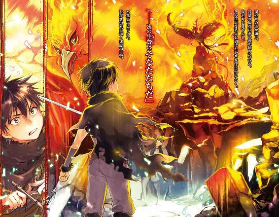
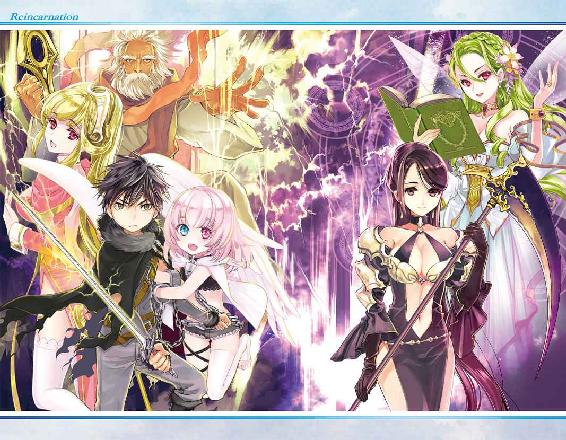
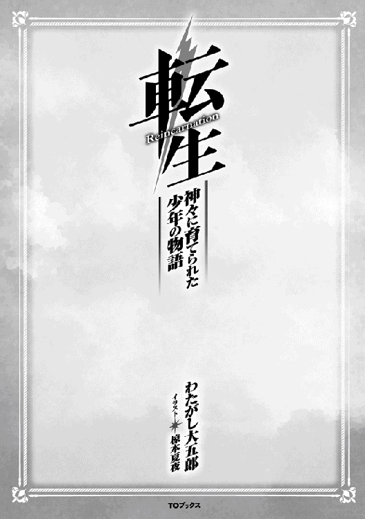
最初に一つの林檎が熟した。
後に禁断の果実と呼ばれた林檎には、善（bonus）と悪（malus）の種子が宿り、複数の世界を生み出す〝創世時代〟を招く。
一つ、人間が繁栄する世界。
一つ、悪魔が繁栄する世界。
一つ、天使が繁栄する世界。
複数の種子は巨大な『星』として根を張り巡らせ、長き年月をかけて花を咲かせ散っていく。それらが種子を産み、世界を孕み、古き世界が養分を吸われ、滅びへの道を辿る。
こうして世界は成り立っていた。
しかし禁断の果実の意味を、世界はまだ知らなかった。
果実『林檎』は他の世界を養分に成長し、滅びることなく長き繁栄を続けている。
あらゆる世界の知識を吸収し、創世の世界に様々な歴史を産み出した。
一万年目、亜人族が誕生する。
五万年目、魔法の力が生まれた。
十万年目、悪魔と魔物が現れる。
百万年目、神々と天使が現れる。
善の種子と悪の種子。
それぞれの養分を吸い取った世界は混乱に陥り、本来は刻まれるはずのない運命を歩んでいく。
それは衰退への一歩。
始まりの世界が消えた時こそ、全世界が枯れる時。
「......この世界も長くないかもしれません」
幻想的創世世界──ユグドラシルで運命の女神が全てを悟る。
「......でも、希望は残されています。運命をも超える一つの種子がこの世界に──」
こうして、神話を巡る神々と悪魔の戦いが幕を開けた。
その世界の鍵を握るのは、巻き込まれただけの一人の不幸な少年であった。
体が痛い......息苦しい......。
意識が朦朧とする......。
これが僕の人生の最後だった。
社畜としてサービス残業を終わらせて、夜の帳に包まれた街中を帰路に就き......自宅まで辿り着けなかった。
会社を出て暫くのことだ。
駅に近い交差点で、蛇行運転するトラックが迫ってきて、僕は事故に巻き込まれた。
先ほどまで聞こえていた野次馬の喧騒すらも遠ざかっていく。
──嫌だ......死にたくない。誰か、誰でもいいから僕を助けてよっ！
視界が暗転していく。
最後の力を振り絞って、抵抗するかのように叫びを上げた。
「あーうー」
っ!?
今、難語のような声が聞こえたような......。
しかも、まるで......僕が喋ったかのような違和感があった。
確認するために、もう一度だけ声を絞り出す。
「あーあー」
間違いない。
......僕の口から出ているようだった。
一体どうしたんだろう......僕は言葉も喋れなくなってしまったんだろうか？
「ばぁぶー！ あーあー！」
普段は当たり前にできていたはずなのに『言葉』が発音できない。
しかも、全身の痛みが消えている......そんな馬鹿な......なんなんだこの状況......。
視界は相変わらず暗転したままで、何が起きているか情報が入ってこない。
疑問が増える。
勉学に励んでこなかった僕の頭じゃ答えは出せなかった。
『......だが......しょう』
意識を集中させると誰かの声が聞こえてきた。
音から判断する限り、土を掘っているようだ。
「......この子には埋まってもらいましょう」
......何の話だろう？
「オレたちでは育てられないからな。貧民街で生まれたことを恨むなよ」
体がフワリと軽くなった。
......じょ、冗談だよね!?
僕の体重は五十キロある。
それなのに、どうして軽々と持ち運べるんだ......。
「じゃあな」
土と草の香りが混じる場所へと降ろされた。
体に土が降りかかる。
もしかして、僕は生き埋めにされている？
どうして？ なんのために？ もしや大型トラックの運転手たち？
駄目だ、何も分からない。
今、僕に分かることは、このままじゃ殺されるのは確定ということだけだった。
「お前たち、何をしておるんじゃ！」
首まで埋まった時、しゃがれたご老人の声が聞こえてきた。
「なっ......おい、逃げるぞ！」
「まま、待ってよ！」
二つの足音が去っていく。
どうやらご老人は僕を助けるために叫んでくれたらしい。
「......お主、捨てられたのじゃな。もう大丈夫じゃよ、ワシが責任を持って面倒を見てやるからのぅ」
土を掻き分ける音と共に誰かが僕の体を抱えて......抱擁の暖かさに涙を流していた。
その言葉は温かくて、安心できて、大人なのに泣きじゃくった。
久しぶりに心の温かさに触れたからかもしれない。
「大丈夫じゃ、大丈夫じゃよ......」
揺り篭のように安らかな揺らぎを感じる。
それに安堵した僕は、まどろみの中へと意識を委ねた。
‡
「お主は捨てられたのじゃな？」
煌々と照らす双子の月を背景に、赤子の顔をまじまじと覗き込んでいる老人が言った。年齢は六十ほど、立派なローブを着こんだ体をかがめ、哀れむように覗き込んでくる。
顔は渋い。白髪を逆立ててた浅黒い肌に、全てを見通すような赤い瞳が静かに向けられている。人間にしては気高い感じがする。しかも、老人は妙に背が高かった。二メートルに届くかもしれない。赤子は仰向けに地面に寝転ばされていたらしく、まだ目を開いていないほど生誕から間もなかった。
ここは貧困層が暮らしている移住区。この都市では伝染病が流行しているため、赤子の両親も病を患ってこの世を去ったのだ。両親を失い、生きる術を持たない赤子、そんな赤子には自我が芽生えていた。
（──誰かの声がする。僕は交通事故で死んだはずなのに、どうして意識があるんだろう？）
赤子改め彼は、日本で生まれ育ったサラリーマン。
運動神経は悪く、スポーツは苦手。成績は良かったが大学には行かず、恋人という存在に憧れる寂しい男。社内の評価は『そんな人いたか？ ああ、地味なあいつか。仕事は頑張ってるみたいだが要領が悪いし、付き合いにくい奴だな』。
付き合いにくい、と言われているだけあり、漫画やアニメを趣味としていた。
一人でいる事が好きなわけではないが、彼は幼少の頃に両親を事故で亡くして以来、引き取られた親戚からは虐待を受けたり、学校では苛められたり、誰にも相談出来ない状況に置かれていた。気が弱かった彼は自分で立ち向かうということが出来なかったのかもしれない。アニメや漫画を趣味にしたのは、言い方を変えれば現実逃避なのだろう。
なぜ社会人の彼が赤子になったのか。それは、ほんの数分前の出来事。今日も彼は残業から帰路についていた。
（明日からは休暇だ。やっと休むことが出来る。新しい漫画が今日発売されるんだっけ。買いに行かないと。楽しみだ）
しかし、彼を待ち受けていたのは漫画ではなく、大型トラックによる接触事故だった。
駅近くの本屋に向かう途中、彼の前に暴走する鉄の塊が突っ込んできたのである。
彼は吹き飛ばされ、ゴム玉のように地面を弾み、致命傷を負った。
大型トラックは十一トン以上の重量を持ち、コンテナには荷物が満載だった。ほぼ即死だったに違いないが、死ぬまでの短い時間、彼は確かに生きていたのである。
世界を恨んだ。どうしてこんな仕打ちを受けないならないのか、と。
悔しかった。
負け犬だった。
天寿だけはまっとうしたかったのに、どうして死なないといけないのか。
全身の痛みで体が痺れ、意識が徐々に遠ざかっていく。
その最後の瞬間に彼は願った。
『まだ僕は生きたい。生きて、天寿をまっとうした......』
そして、世界が暗闇に包まれた。
そこで赤子の姿に戻っていたわけである。
彼は現状が理解できず、頭痛に悩まされながらも難語を張り上げ続けた。
「......もう大丈夫じゃよ。ワシが責任を持って面倒を見てやるからのぅ。人族の世界も荒んでいるものじゃ......どうにかしてやりたいのじゃが......」
人族、なんだそれは。まるで神様みたいなことを言う人だ。
老人は赤子を拾い上げ、抱きかかえた。赤子は幼少の頃の母親を連想し、抱擁の暖かさを思い出して涙する。暖かな言葉に満たされて、やるせない気持ちで泣きじゃくった。
「大丈夫じゃ。大丈夫じゃよ......」
揺り篭の中で安らかな寝息を立てるように、安堵した赤子はまどろみの中へと意識を沈めた。
この日、彼の運命は動き始めた。
‡
「ゼウス、人族の赤子を拾ってどうするつもりなのよっ！」
誰かが喧騒を立てて言うと、老人の顔をじっと覗き込んでいる女性の透き通った上品な声が響いた。
「放っておくわけにもいかんじゃろうて」
流石に目を覚ました赤子だが、僅かに眩しいと思うくらいの景色しか認識することが出来ず、耳を澄ませる以外に情報をつかむ方法が無かった。
「放っておくって、アタシはどうなのよ！ いつも違う女性のお尻ばっかり追いかけている癖にっ！」
「そ、それはそうじゃが......！」
赤子の篭の傍に座る女性が、涙交じりの声で怒鳴った。
「ヘーラー、ワシのせいですまんのう......」
「本当よっ！ ゼウスは大馬鹿よっ！」
ヘーラーと呼ばれた女性が叫んだ。
痴話喧嘩を聞いていると、老人はゼウスというらしい。まるで神話のような名前だ。とにかく、ここは病院ではないようだ。薬品の匂いがしない変わりに、蜂蜜のような甘い香りが漂っている。
ここは何処だ？
どうして目が見えないのか？
赤子は咄嗟にそう思った。
（事故に巻き込まれたにしては完治が早すぎる。日本にこんな医療技術あったかなぁ。いや、あったとしても平凡な会社員である僕を拾うような物好きがいるだろうか。なんで、僕は寝かされているのだろう）
険悪な雰囲気に包まれて、赤子は急に怖くなった。
（もしかして臓器を売られるんだろうか。ありえる。僕なんかに用があるとしたらそれくらいしか考えられない。事故で意識を失った僕を回収した病院が秘密裏に手を回して、こんなとこに寝かせているのだ。そうじゃなければ説明がつかない）
赤子はとりあえず、手足の自由が利くようになるまでは眠ったフリをしていようと思った。
ヘーラーと呼ばれた女性は、必死になってまくし立てる。もう出て行け、とか、離婚してもらうわよ、とか、愛人の名前を叫びながら早口に責め立てた。
老人のシュンとした弱々しい声が、まるで浮気がバレた男の声に似ていて......、自業自得だけど哀れだ。
「しばらく顔を見せないでちょうだい！」
「そ、それは......」
「なによ。出来ないっていうの？ 世界を救った天空神の癖に、責任も取れないのねっ！」
（世界を救った？ 天空神？ なんだそれ、まるでゲームじゃないか）
ゼウスと呼ばれた老人は、声を小さく答えた。
「分かった、出て行こう。ただし離婚はしたくない。それじゃ駄目かのう？」
「ま、それでいいわ。後でゆっくりと話し合いましょう。アタシの魔法で吹き飛ばされない内に、どこへなり消えなさいっ！」
（魔法？）
「......すまんかった」
「ふんっ！ どうせすぐ浮気することくらい知っているんだから！」
ヘーラーがそう言うと、ゼウスは視線を逸らしたまま立ち上がり、赤子を抱き寄せて部屋を後にする。
廊下の前でゼウスの娘が引き止めようとするが、ヘーラーの一喝した声に怯えて何も言えなかった。
しばらくして、赤子は眠気に誘われてしまい、夢の中に落ちた。
‡
赤子が再び目覚めると、今度は知らない天井が映った。
視力を取り戻したことに安堵すると、真新しい桧の香りが鼻腔をくすぐった。周囲を探るように動かした視線の先には、暖炉の傍にはテーブルが置かれていた。
ゼウスの部屋であった。十六畳ほどの広さだ。テーブルを挟むように置かれた椅子の一つに老人が腰掛けている。リビングとして使われているようで、古風な厨房から高価なアンティーク、立派な絵画が見える。
ここで赤子が目を覚ましたのは、ゼウスが辺境の村で暮らしているからである。
赤子は痛む頭を撫でながら違和感を覚えた。この部屋は広すぎる。木の柵で閉じ込められていて、まるで監禁されているようだ。
事情を尋ねようと声を上げると、言葉がまったく喋れなかった。
「あーあー」
普通に喋れていたはずの言葉が出ないのだ。
今日ほど混乱した日はない。
ふと窓へ顔を向け、自分の顔が反射して戦慄する。
この時、初めて彼は赤子になっていることに気づいたのである。
‡
あれから一ヶ月が経過して、僕は状況を飲み込めてきた。
どうやら異世界で生まれ変わったらしい。
最初は疑ったが、空を仰げば大きな月が存在する。地球の夜空に比べて赤く、大きさが三倍ほどもある月だ。それだけなら受け入れられるのだが、青と赤、大小二つの月が浮かんでいるのは何故だろうか。窓からは夜空の他にも、優雅に舞う月光蝶が飛び交い、どこまでも続く草原が見えた。月明かりに照らされた先には、大きな山脈と川が見える。
「照明」
お爺さんが手の平から光球を生み出した。
魔法、と呼ばれる不思議な力だ。この世界には魔法が当たり前のように存在して、日常生活を支える役割を担っている。
こんな力は地球に存在しない。間違いなく、疑う余地もなく、ここは異世界だった。
どうしてこの世界に転生したのか分からないが、僕の胸は弾んでいた。
転生、魔法、幻想的な光景の数々。
ずっと憧れていた世界で生きてみたいって願うことは、息をするよりも簡単なことだ。地球に帰りたいって願う気持ちが無いわけじゃないが、この世界を満喫してみたいって気持ちのほうが強かった。
素直に現状を受け入れることが出来たのは、人生に満足していなかったからだと思う。両親は他界しており、学校では苛められてきて、会社では後輩にも馬鹿にされてきた。いくら頑張っても報われず、ただ生きているだけの日々。誰からも認められることがなかった。
ずっと悔しかったんだ。
ずっと人生をやり直したいって願っていたんだ。
我ながら虚しい願いだって分かってる。でも、異世界に転生したことでチャンスを得ることが出来た。前世の記憶を持って、やり直す機会に恵まれたのだ。
折角授かった人生だ。全力で生きて、全力で頑張ってみるのもいいかもしれない。
よし、決めた。
──僕は今度こそ、幸福な人生を歩んでみせる。
生命の樹の下で向かい合う相手は、お爺ちゃんだった。
孤児だった僕を育ててくれた恩人である。
「腰が甘いのぅ。詠唱も交えてナイフを振りなさい」
肩で息をし、片手持ちの剣に魔力を宿す。刃が共鳴した。今、僕はこの世界で生き抜くための〝力〟を教えてもらっている。しかし、僕は震えていた。
「はぁ、はぁ......」
刃が震える。疲れと恐怖が表れていた。
お爺ちゃんが持っている《アダマスの鎌》は、命を刈り取りには来ない。手加減されている。互いに武器を持ち、僕が一撃を与えるまで鍛錬を続けるなど、無謀すぎるだろう。
なにせ、お爺ちゃんは完璧なる存在だ。人望に厚く、かつてこの世界に訪れた厄災を何度も助け出した英雄である。赤子に転生して六年が経過した僕は、この世界の存在がどれだけ凄いことなのかに気づいてしまった。
「そんなことでは、巨人族にも満足に勝てんよ」
巨人族、それは多くの文献や聖書の中に刻まれた言葉である。
「ラティではまだ、ヘラクレスやペルセウスに遠く及ばない。更なる高みを目指せ。想いを力に変えるのじゃ」
ヘラクレスとペルセウスといえば、ある神話に登場する半神半人の英雄だ。なぜそのような名前がお爺ちゃんの口から呟かれるかと言えば、理由は簡単である。
「この天空神ゼウスをも越える気で戦うことじゃよ」
天空神ゼウス。ギリシャ神話で全知全能の神様と呼ばれている存在である。そう、僕は神様が普通に暮らしている異世界に転生してしまったのだ。
最初は信じられなかったが、きっかけは多い。
例えば、明らかに高位な格好をした『熾天使』が来訪した時、お爺ちゃんを『ゼウス様』『偉大なる天空神様』と敬っていた。熾天使といえば《イザヤ書》や《ヨハネの黙示録》に登場する最上位の天使だったはずだ。彼らが頭を下げる相手といえば、神様以外に考えられないだろう。
他にも会話を聞いていると、
『ヘラクレスに試練が与えられた』
これはギリシャ神話で最も有名な話で、ヘラクレスの十二の難業として知っている人も多いだろう。ある事情で妻子を死なせてしまったヘラクレスは、贖罪の旅に出るように叔父から言われるのである。
『娘がアスモデウスを追っている』
アスモデウスといえば某宗教で七つの大罪として数えられている悪魔である。この世界には神様以外にも、悪魔たちが存在していることが分かった。
『雷霆は封印することにしたのじゃ』
雷霆は天空神ゼウスが扱う最強の武器で、全宇宙をも焼き尽くすと恐れられるほど強大な物である。神話では最後にして最強の怪物と戦っているときに使ったはずだが、僕の記憶はそこだけ途切れていた。興味本位でしか神話を読んでいなかったが、これだけギリシャ神話に当てはまる会話を聞いたのだ。この異世界に神話が関わっているのは間違いないだろう。
もしかしたら、地球の平行世界ってやつかもしれない。
ただし、ギリシャ神話と徹底的に違う部分があった。
天空神ゼウスは全知全能の神として、人族に崇拝されるべき主神のはずだが、最高神の立場にいないらしい。一時期は神様をまとめていたらしいが、ある時にこう考えたことが原因だとか。
『新しい時代を作るのは若い世代じゃよ。星を守り、人族を導く役目を担うのはワシ以外の者こそが相応しいのじゃ』
その結果、この世界の主神はお爺ちゃんではなく『運命の三女神』が崇拝されている。
運命の三女神については詳しく覚えていないが、人族の寿命を司る神様だったはずだ。そう考えてみると、人族を導くのには適任だったのかもしれない。
「ふむ、そろそろ日も暮れる。少しばかり力を出すかのう」
少しばかり、などと言っているが、本気で襲ってくることを僕は知っている。
老賢者を匂わせるローブを着たお爺ちゃんは、赤い瞳を見開いた。長々と斬り合っていたはずなのに、僕とは違って汗一つかいていない。
「生き残りたければ避けるんじゃよ」
まるでこれから殺しにかかるかのように、大鎌で弧を描く。お爺ちゃんの手に握られている《アダマスの鎌》は、万物を切り裂く神器の一作である。人の手では作り上げることが絶対にできないアダマス鉱石を加工したもので、華美な装飾は施されず、簡素に作られた鎌は鈍い輝きを放っている。どんな巨匠が鍛え上げた剛剣も、ソレの前では霞んでしまうだろう。
見た目に不釣合いなほど大鎌を構えながら、お爺ちゃんの立ち姿は様になっていた。老人とは思えない隙のない構え。燃えるように赤い瞳は、僕を静かに見ていた。その手が大きく振り上げられ、背筋に寒気が走る。逃げ出したい。でも、ここで終わるわけにはいかない。
「いきます。僕だって、負けっぱなしじゃいられません」
恐怖を頭から追いだして、僕は踏み込んだ。
ナイフを両手で構え、今まで鍛えてきた魔法と技を組み合わせる。
《始祖の神々》──このユグドラシルを守るために、遥か古の時代から混沌と戦ってきた偉大なる神族。彼らから教わった剣術のすべてを乗せて、魔法と剣術の複合技を仕掛ける。
《ウィンドスラッシュ》。
しかし──。
「まだまだ、じゃな」
ナイフから放たれる翠の一閃は、《アダマスの鎌》の前で呆気なく消え去った。人族でありながら神様に拾われた僕は、周囲と比べても格段に力が弱かった。人族と神族に秘められたポテンシャルが違うのだから当然だが、お爺ちゃんの期待に応えるためにも、必死で努力をしてきた。
しかし、どんなに頑張っても届かない。
「──稲妻よ、踊れ」
「なっ!?」
《アダマスの鎌》が振り降ろされた瞬間、僕の体には浅い傷と軽い火傷が幾つも刻まれた。魔法だ。同時に《ウィンドスラッシュ》を真似したらしく、翠の一閃が僕の頬や腕を傷つけた。
「ここまでじゃ。今日は頑張ったのぅ。偉いぞ、ラティ」
微笑んだお爺ちゃんは、鎌を首に当てながら、僕の名前を口にする。攻撃をかわされ、結局は負けてしまった。でも、以前よりも体力がついたことは素直に喜ばしい。汗もベトベトで、黒い髪が頬に張り付く。お爺ちゃんが差し出した手を掴み、立ち上がった。
「今日は帰るとしようかのぅ」
「はい、分かりました」
並んで、生命の樹を離れる。夕日は闇に染まりつつあり、魔石灯が光りだした。
「明日は新しい魔法を教えてあげようかのう。本当は子供では扱いが難しいものじゃが、ラティなら大丈夫じゃろう」
お爺ちゃんは、魔法に強い関心を持つ僕にどんなことでも教えてくれた。
地球では科学が経済を発展させてきたように、この世界では魔法が世界を発展させている。科学に関しては地球と比べて劣っているが、魔法は生活の一部として浸透している。村に設置されている魔石灯なんかが魔法発達の結晶で、月の魔力に反応して薄暗い夜道を淡く照らしてくれる。
「魔法に感謝を忘れてはいかんよ」
「はい、もちろんです」
お爺ちゃんの話によれば、魔法は生きているそうだ。詠唱を紡げば魔法は答えてくれる。視点を変えれば、魔法が僕たちに何らかの経緯で力を貸してくれていると考えられる。
そのために必要になるのが魔力で、この世界に生きるすべての生命は、生まれたときから心臓の近くに『魔石』と呼ばれる核を持っている。
魔石に溜まった魔力を消費することで、魔法が発動するわけだ。
「お主の魔力は無茶苦茶じゃからのう」
魔力は鍛えることによって総量が上がっていく。
例を出すなら、僕が先ほど使った風の魔法剣──《ウィンドスラッシュ》。
あれは比較的、下級な魔法に分類されている。
それを一日に十回も使えれば、一般人大人レベルの魔力を持っているという計算になる。
子供なら精々数回使えればマシな方だが、何事にも例外がある。
僕のことだ。
「今日は百以上も放ってきおった。高名な魔法使いでも、それだけ詠唱できる者は見たことがないのう」
「うーん、自分ではよく分からないです......」
僕の体内には、常識を遥かに超えた魔力が存在するらしい。
使う気なら強力で派手な魔法を習得することもできるらしいが......お爺ちゃんの忠告を聞いてから止めた。
『無闇に力を手にすると、後悔する』
そもそも強力な魔法とは、対象を破壊に追い込むものである。
僕は魔法を倒す使命を与えられたわけではない。
上級の魔法を習得すれば使いたくなるだろうし、それが原因で誰かを傷つけてしまうかもしれない。それなら、最初から覚えないほうがいいだろう。
......まぁ、興味が尽きないわけじゃないけど、この世界には沢山の魔法が存在する。
空を飛んだり、物体を操ったりするような魔法を覚えたほうが有意義で楽しいはずだ。
「今日も平和でなによりじゃ」
お爺ちゃんは、地面の裂け目を覗き込んだ。
穏やかな風が頬を撫でる。
なにせ、ここは普通の大陸じゃない。
「......綺麗ですね」
僕たちが立っているこの大陸は浮遊大陸ヴァナヘイムと呼ばれている。
神々が暮らす聖なる楽園であり、地上を見守り続ける母なる大地。
このユグドラシルの世界には九つの大陸が存在し、百を超える種族が生活している。
──人族を始めとした王都ミズガルド。
──妖精が集まる御伽王国アルフヘイム。
──犬人族や獅子族の帝国アールヴヘイム。
などなど。僕は、王都ミズガルドで捨てられたところを、お爺ちゃんに拾われたわけだ。
「この調子なら、ラティは将来有望な魔法使いになれるかもしれんのぅ」
「ほ、本当ですか？ 頑張ってみますっ」
前世で褒められたことが無かった僕にとって、お爺ちゃんに褒めてもらえることはとても嬉しかった。褒められると、次も頑張ろうって気持ちが込み上げてくる。だから、努力しよう。人族だから、神族だからとか、そんな言い訳は必要ない。がむしゃらに頑張って、お爺ちゃんを驚かせるくらいになろう。本気で生きるって決めたのだから。
‡
「さて、村が見えてきたのう」
浮遊大陸を支える生命の樹から歩いて一時間、僕たちが生活する長閑な村が見えてきた。この村では、農業や狩りを中心に生活を送っている。
牧草地の小高い丘の上に僕たちの家が建っており、朝を迎えれば羊や鶏がうるさいほど鳴き始める。
「帰ったぞぃ」
本来お爺ちゃんは、ヴァナヘイム大陸の北にある宮殿で暮らしていたらしい。でも、他の神々が口うるさいので逃げ出してきたそうだ。
気持ちは分かる気がする。
僕たち以外に誰も住んでいない我が家に挨拶をしてから、玄関で靴を脱ぐ。
「......お帰りなさい」
見知らぬ若い女性がエプロンドレスを着て、出迎えてくれた。手にはトレイを持ち、美味しそうな肉の料理を乗せている。
「......帰りが遅いから、夕飯を作って待ってた」
綺麗な人だ。胸が大きくてスタイルは抜群にいい。背は平均的だが、物静かで儚い印象がある。長い髪は後ろで束ねられて、耳にはイヤリングを付けていた。
しかし、なぜ僕たちの家に不法侵入しているんだろうか。
「おぉ、もしやメーティスか。よくここが分かったのぅ」
「......ゼウスが宮殿を出た日から、ずっと探してた」
むぅ、っとしたように言う。メーティスといえばゼウスの最初の妻で、知恵の女神である。確かメーティスを飲み込むことで、ゼウスは『全知』全能の神様になったはずだ。
そんなメーティスさんが目の前にいる。なぜ？
「メーティスは相変わらずじゃな。離婚してからもワシに付き纏うのは、お主くらいなものじゃぞ」
「......まだ責任取ってもらってないしね」
「ん？」
「......な、なんでもない」
とりあえず、挨拶だけでもしておこうか。
「えっと、メーティスさん。こ、こんばんは」
「......うん、こんばんは──って、また新しい子供を作ったの......？」
束ねた長髪を揺らし、肩を小刻みに震わしてくる。
「......ゼウス、これで何人目？」
「二十四人......って違うわい。この子は誰かに孕ませた子じゃないっ！」
......そういえば、ゼウスって愛人が多いんだっけ。七人ほどいた気がする。
半神半人がいるのも、王家の血筋に神の血を受け継がせる役割もあったし、仕方ないとはいえ......女性にだらしない人である。
「──というわけで、ワシが引き取ってラティを育てているわけじゃよ」
「......そうなんだ。ラティ君、よかったね」
「は、はい」
急に頭を撫でられ、胸元へと包み込まれた。や、柔らかい......と思ったのも束の間、とんでもない力で僕を抱きしめてきた。い、痛い！ 息苦しい！ ようやく開放してくれたかと思ったら、調理中だったのか包丁を右手に持ったまま頭を撫でてくる。怖い。怖すぎる。
「そうじゃ、メーティスよ」
「......どうしたの？」
メーティスさんは力を入れすぎている自覚が無いらしく、キョトンとした顔をしている。
この人、天然だ。
「ラティに魔法の使い方を教えてやってくれんか？」
「......別にいいけど、どうして？」
「ワシは教えるのが苦手じゃ。しかし、知恵の女神と呼ばれたお主なら、ワシ以上にラティへ教えてやることができるじゃろうて」
こう言ったら大変失礼だが、天然系のメーティスさんに魔法を教わったら、何かの失敗で僕は殺されたりしないだろうか？ 現に今も窒息しかけているわけで......。
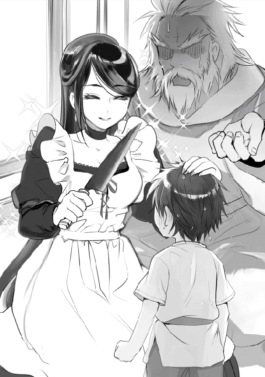
メーティスさんには悪いけど、ここは一度断らせて貰わないと。
「......お......願...します（お姉さん、大丈夫です。またの機会にお願いします）」
あ、駄目だ。息苦しくて言葉がでなかった。
「......分かった、任されたよ。ラティ君は小声で照れ屋さんなんだね」
結局、僕の気持ちはまったく伝わらなかった。
「よかったのぅ。メーティスは世界中の魔法に精通しておるから、より深く学ぶことができるぞい」
「......上級系の魔法なら任せて」
平穏に生きるのに、そんな物騒な魔法は必要ないんじゃ......と、言いたかったけど。
「......明日からよろしくね」
メーティスさんの微笑みを前にしたら、断ることが出来なかった。
メーティスさんが暮らすようになってから三ヶ月。
鏡を見た僕は、黒い髪を梳かす。酷く疲れた顔をしていた。
泥に塗れたシャツを脱ぎ捨てると、浅い切り傷が無数にできている。剣の鍛錬を習っているときにできたものだ。後で薬を塗ってもらわないと、跡が残るかもしれない。
「......ラティ君。着替え、ここに置いておくね」
背後からかけられた声に振り返り、メーティスさんにお礼を伝える。
「いつもありがとうございます。助かりますっ」
メーティスさんは、お爺ちゃんに部屋を借りて住み込みで働いている。もちろん給金などを支払っているわけじゃないのだが......お爺ちゃんの傍にいられれば、それだけでいいらしい。身の回りの世話から食事、洗濯まで面倒を見てくれる上、風邪で寝込んだときも献身的に介護をしてくれた。最近では母親のように感じていたりする。
「......傷、やり過ぎちゃったかな。後で薬も取ってくるね」
申し訳なさそうに表情を曇らせるメーティスさんは、つい先ほどまで僕に剣の使い方を教えてくれていた。
メーティスさんの知恵は思慮深く、魔法に拘らず剣や弓などの扱い方も一流で、怪我などの治療の心得も知っていたりと優秀である。
もっとも、その知恵を使ってお爺ちゃんの居場所を特定したらしいが。
「やり過ぎだなんてことないですよ、メーティスさん。色々なことを教えてくれて、本当に感謝しています。本当はお礼をしたいんですけど、まだ子供だから」
冗談を交えて笑う僕を見て、メーティスさんは部屋にある椅子に腰掛けた。僕に同調して、静かに笑っている。
「......よかった。私、どんなものにも変身できるから、気持ち悪いって思われてると思ってた」
メーティスさんが言う変身は、ハエや竜、更には水や草木に姿を変えることができる。それが原因で気味悪がられたりしたこともあるらしく、今では控えているそうだ。ただ、調理中などにゴキブリが出たときは別である。悲鳴と同時にカエルに変身したりしているので、焦ると我を忘れてしまうらしい。
神様でも怖いものがあるのは不思議だが、考えてみたら生きているのだから当然だ。
「......でも、ゼウスがラティ君を引き取ること、よく奥さんが了承したね」
「奥さんですか？」
「......うん。嫉妬深くて、怒るとゼウスですら怖がる人」
お爺ちゃんの正妻はヘーラーという名前の、美しい女神だったはずだ。一説によると、北欧神話の女神フレイヤに匹敵するほどの美貌を持っているとか。
そういえば、この世界に転生して間もない頃、お爺ちゃんが女性と喧嘩している声が聞こえていたっけ。あの人が奥さんだったのか。
「......普段は優しい人だよ。ただね、婚姻と女性を守護する女神だから、一夫多妻制を望むゼウスには厳しくあたるの」
ゼウスは天空神として世界を守ることに務めた。その為には血縁者であろうと戦いを決め、時に失敗を繰り返しながら、宇宙を揺るがす激闘に勝利を収めて見せた。
ただ、女性にだらしない人である。僕が知っているだけで愛人が七人もいる。
普段が激闘に身を費やしている反動かもしれないが、一夫多妻制という名のハーレムを望むのは、賛否両論がありそうだ。
僕にとっては恩人だから、応援してあげたいところだが。
「僕にはそういうの分からないです。まだ、人を好きになったこともないですから」
前世では僕に近づくような物好きな女性はいなかったのだ。もとい、同姓もか。虚しくなってきた。
「......ラティ君にも恋愛が理解できる日が来るよ。その時は、後悔しない選択をするんだよ。私は現状に満足してるけど」
自嘲気味に笑うと、メーティスさんは立ち上がって薬を取りに居間へと向かった。僕は、今日の鍛錬を忘れないようにもう少しだけ素振りをすることにした。
（お爺ちゃんが、メーティスさんが応援してくれているんだ。男なら期待に応えて見せないと）
‡
あれから日中は鍛錬を続け、月が昇る頃に魔法を学びようになった。
水浴びをして泥のように眠り、目が覚めたら時間を見計らって、また鍛錬を続ける。
それを繰り返すと徐々に体力がつき、一年も経つと足腰が随分と強くなっていた。
メーティスさんたちとの鍛錬でついた傷も、用意してくれた薬が凄いのか、随分と治りが早い。だが、余裕ができたことで、ぼんやりと将来を考えるようになっていた。
そこで、僕は朝食中にお爺ちゃんたちに夢を打ち明けた。二人は、地上を守るために数々の秘境を駆け回った話をしている最中だった。
「僕、将来は魔法使いになろうと思います」
「魔法使いじゃと？ ラティなら腕を磨き続ければ【騎士修道会テンプル騎士団】にも入隊できると思うがの」
僕は首を横に振る。
ここ最近は以前より戦えるようになったとはいえ、お爺ちゃんたちの剣にはまったく追いつけない。それに、僕は戦争に参加したいわけじゃない。
「人を守るための魔法を研究したいんです」
「......ふふ、ラティ君らしい答えだね。応援してるよ」
「ありがとうございます。メーティスさん、お爺ちゃん、僕が有名になったらこの恩は必ず返させて貰います。立派な魔法使いになれるように頑張りますね」
「うむ、よくぞ言った。楽しみにしておるからな」
お爺ちゃんも応援してくれて、和やかな時間が過ぎていく。
‡
そして、一ヵ月後の朝。
僕はお爺ちゃんから手渡された服を着て、ローブを羽織る。
「それは《ギガントマキナのローブ》、神具の一つじゃ。この世界の恐怖を象徴にした魔法が付加されておるから、どのような攻撃も吸収するじゃろう」
「頂いてもいいんですか？」
「もちろんじゃ。是非とも使っておくれ」
「わぁ、ありがとうございますっ!!」
お礼を伝えると、メーティスさんが現れた。
「......ラティ君、これをあげるね」
そう言って渡されたのは、鞘に収まった立派な剣だった。
引き抜くと、灰色の柄と銀色の刃が輝く。
「......ゼウスが使ってる《アダマスの鎌》と同じ素材でヘパイトスに作ってもらったものだよ。さしあたり《アダマスの銀剣》って呼ぶのが妥当かな」
「メ、メーティスさんまでいいんですか？ 僕、人族なんですよ？」
ヘパイトスといえば、鍛冶の神様である。数々の神具を作り上げた男で、彼なら《アダマスの銀剣》を作ることも不可能じゃないだろう。
「......これはラティ君の身を守るものだから。人族も、神様も関係ないよ。もしタダで貰うことに負い目を感じるなら、将来に素敵なお嫁さんを連れてきてね」
笑顔で言われて、僕は銀剣を受け取った。
特別な魔法が施されているのか、羽のように軽かった。
「お爺ちゃん、メーティスさん。僕のためにありがとうございますっ」
「お主が無事ならそれでいいんじゃよ」
「......ラティ君が頑張っていること、私たちは知っているから」
見慣れたはずの微笑みは、何度見ても飽きなくて。
僕にも家族ができたことを改めて実感する。
「ラティや、魔法使いになったとしても戦いは避けられんじゃろう。時には危険を犯す必要がある。もし、どうしても戦うしか無い場面に遭遇した場合は、自分の力を信じることじゃ」
「......諦めなければ、私たちの加護が助けてくれるからね」
僕は《アダマスの銀剣》を両手で抱えて、ぎゅっと握った。僕のためにここまでしてくれたことが嬉しくて、目が潤んでしまう。
期待に応えてみせる。
お爺ちゃんたちが安心できるほど、隣に立っても引けを取らないほど、神様だって守れるほどに。
僕は、強くなってみせる。
弱いままだなんて嫌だ。
僕だって家族を守りたい。一緒にいたい。
その為には、もっと強くなる必要がある。そして強さを手に入れたら、大切な人の窮地を救ってみせる。
そこまでして初めて、僕は、変われるような気がするのだ。
「はい......。本当に、嬉しいです。きっといつか、恩を返しますから」
「楽しみにしておるぞ」
そう言って、僕は今日の鍛錬を行──。
「......それじゃ、試験を始めようか」
へっ？
‡
昼前に、生命の樹の下まで辿り着いた。
今日は雷神トールの木曜日。余談だが、曜日はローマ神話と北欧神話から作られている。前世では正確な理由が不明だったが、このユグドラシルの世界では、北欧の神々がバイキング達から圧倒的な支持を受けており、彼らの崇拝を考慮した形で曜日を作ったらしい。
さて、なぜ僕がここに立っているかと言えば、理由は簡単である。
「......魔法使いの適正検査を始めるよ」
お爺ちゃんから《アダマスの鎌》を借りたメーティスさんが、試験を拒否する僕の気持ちなどまったく気にせずに、得物を振り上げた。
彼女は優しく、母性的で、面倒見もいい女神である。
だからこそ、僕が魔法使いとして相応しいか確かめたいそうだ。
どうしてこんな事になったんだ。
「二人とも、ほどほどにのぅ」
お爺ちゃんの声援に、メーティスさんは左手を振って、にっこりと笑った。再び《アダマスの鎌》を構える。......あの鎌は万物を切り裂く神の武器。受け止めることすら不可能とされている。しかし、僕にはお爺ちゃんから貰った《ギガントマキナのローブ》がある。これさえあれば、どんな攻撃も防ぐことができるはず。それに《アダマスの銀剣》もある。同じアダマス鉱石で作られた武器なら、鎌だって受け止めることが可能なはずだ。
「......知恵のメーティス。寄らば参ります」
最強の鎌と最強の剣。
この矛盾が衝突し、どちらが勝利するのか試される時が訪れた。
そのとき、メーティスさんの体がブレた。同時に、鉄パイプを受け止めたかのような重い一撃が、右手を痺れさせる。
「......今ので一回は死んだよ」
微笑みながら、メーティスさんが走る音だけがする。鋭い鎌の刃が、僕の頬を浅く傷つけた。これが現役の女神様の力。人族と神族の圧倒的な差を前にしたら、誰もが勝てないと思うだろう。
でも、負けられない。強くなるって決めたんだ。目指すべき目標が決まったのなら、後はそこへ到達するためにやるべき事をやればいい。
このまま負けっぱなしでいたら、変われる自信がなかった。身の内を焦がす激情が収まらず、いつまでも一人で閉じこもっているかもしれない。家族を失い、何もできず、泣いていることしかできないかもしれない。
そんなのは嫌だ。
《アダマスの銀剣》を両手で握り締めた。深呼吸を行い、目をカッと見開く。
やってみせる。どこまでも強くなってみせる。戦うことで大切な人たちを守れるのなら、戦い続けてみせる。
僕たちを見守る生命の木を仰いで、僕は誓った。
もう、僕は弱虫の『いじめられっ子』じゃない。
神に育てられ、人間として生きることを誓った人族。
ラティなんだ──!!
「《ウィンドスラッシュ》!!」
魔法に祈りを奉げ、淡々とした言葉を唱えた。
力を振り絞り、僕は魔法を《アダマスの銀剣》に纏わせる。刃の風が巻き起こり、そして銀剣から複数の鋭利な風圧が放たれた。
「......《炎の神威・迦具土神》」
メーティスさんも鎌から業火の一閃を放つが、防がれてしまうかは分からない。ただ、お互いに本気で魔力を放出したことだけは分かった。
「僕は、変わるんだ！ 自分のために、大切な家族を守るために!!」
叫ぶと同時に、刃の風は炎と衝突して酸素を吸い込み、大業火となって火柱が登る。
──魔力の衝突。
──弾ける空気。
──衝撃派が包み込み。
今まで感じたことのなかった熱で肌が焼かれ、僕は地面の上に伏せた。
そして、火柱と火の粉が徐々に弱まり、魔力の放出で赤くなっていた《アダマスの銀剣》が元の銀色に戻っていく。
「......凄いね、ラティ君。わたしの魔力に付いてこれるんだ」
そこには、鎌を手放したメーティスさんが立っていた。
「あ、あぁ......」
僕は、負けたのか......。
「......念のために、用意しておいて良かった」
自愛に満ちた笑みで、メーティスさんは両手で構えていた円形の盾を背中に担いだ。《アイギスの盾》だ。山羊革が材料の盾だが、あらゆる邪悪や厄災を払う効果がある神器である。僕の魔法も、その力で無効化されてしまったのだろう。
完敗だ。
「......初めて、負けちゃったなぁ」
「ん、メーティス!!」
「えっ......？」
もう一度微笑むと、僕へ伸ばした手が虚しく落ちた。お爺ちゃんが肩を掴むと、何度も呼びかける。抱きしめながら、何度も名前を叫び続ける。
「......ふふ、ちょっと魔力を使いすぎちゃっただけだよ。さっきの......ラティ君の魔法は、とんでもなかったからね」
「無理するからじゃよ。あまり心配かけるでない」
「......心配してくれるんだね」
「当然じゃ。ワシはお主の選んだ男じゃぞ」
お爺ちゃんは、そのままメーティスさんを持ち上げると、僕の方へと近づいてきた。
「メーティスさん......その、大丈夫ですか？」
「......もちろんだよ。魔力を消費しすぎるとこうやって倒れるの。気をつけてね」
はぁ......無事で良かった......。
「......ラティ君、試験は合格だよ。その魔力、その素質......きっと凄い魔法使いになれると思う。これからは、もっと専門的なことを教えてあげるね」
負けたのに嬉しそうなメーティスさんが、励ましてくれた。今まで一撃も掠めることができなかった僕が、メーティスさんの魔法と押し合うことができた。
成長している。確かに僕は成長している。
種子が葉になるように、ゆっくりとだけど、少しずつ前に進んでいる。
正直、それがちょっと嬉しかった。
僕はどれだけやれるのか、どこまで成長できるのか。
限界まで頑張ってみたい。
そんな思いがあった。
「メーティスさん、僕、頑張ります」
「......期待してるね。ファイト、だよ」
いつか、大切な人の笑顔を見るために。
その時まで、僕はがむしゃらに頑張ってみせる。
「......ということで、あの人を呼ぶね」
「そうじゃな。奴なら、ラティを逞しくしてくれるじゃろう」
............何を言っているんだろう？
なんとなく、これが嵐の前の静けさだってことを悟ってしまった。
翌月、僕の前に三面六臂の神様が立っていた。
「貴様がゼウスの息子か。ゼウスから話は聞いている。この我から武術を習いたいそうだなぁっ！ 今日から小僧は正義の使者となり、多少の犠牲を覚悟してでも戦い続けるのだっ!!」
この特徴的な三つの顔と手の数の多さは、子供でも知っているんじゃないだろうか。
彼の名はアスラ。仏教では阿修羅と呼ばれている戦闘神である。
「アスラ、落ち着くのじゃ。インドラ神と取り持ってやった恩を覚えておるじゃろうて」
「むぅ、そうだったな。ゼウスには感謝しておるぞ」
インドラ神といえばインド神話の最高神であり、最強の雷撃を放つ「インドラの光」を持つ雷霆神でもある。
......そう、雷霆だ。お爺ちゃんが持つ雷霆に匹敵する力を持っている。後に帝釈天と呼ばれていたそうだが、その辺りの詳しい話はどうでもいい。
「昔のぅ、アスラの娘がインドラ神に奪われてな。アスラは娘を取り返すために戦い続けたのじゃよ」
知っている限りの話だと、アスラは娘を取り返すためにインドラ最高神と戦い続け、何度も敗北をしては立ち向かった。最終的に相手をするのが面倒になったインドラ最高神は、アスラを修羅の国へと追いやったという話だったと思う。
それを修羅場と呼んだ気がする。
「最初に出会った時は驚いたものじゃ。正義を司る神が地位を剥奪されておるのじゃからな」
「......そうなんだ」
「ふん。インドラによって修羅の国へ追放を受けてしまったからな。お陰で悪魔とも神とも呼ばれている」
ほらね。
どうやら話を聞いていると、アスラさんとインドラ最高神の仲をお爺ちゃんが取り持った世界線がこの世界ということらしい。
......ギリシャ神話に、インド神話か。よくよく考えてみれば、ユグドラシルって言葉も北欧神話が起源だったはずだ。やはりこの世界は、他にも多くの神話が絡んでいる可能性が高いだろう。それによって正史が歪み、本来出会うはずのないアスラさんとお爺ちゃんが出会ってしまったものだと思われる。
「アスラは我の強い漢じゃが、武術に関しては誰よりも頼れると保証しよう」
「ふん、褒めてもなにもでないがなッ!!」
案外、褒められると調子に乗ってしまう性格のようだ。見た目とのギャップが何だか可笑しい。
アスラさんの三面六臂にも意味があって、正面の顔は驚きと嬉しさが混じった表情、左の顔は唇を噛み締め、過去を後悔している表情、右は人族を哀れんでいる表情だったはずだ。
「では鍛錬を始めるとするか」
「あ、もう始めるんですね」
「人の一生は短い。一日だって無駄にできないからな」
なるほど、神様から見れば、百年に満たない人生なんてあっという間に感じるのかもしれない。妙に納得した僕は、長弓と木矢を取り出したアスラさんの後へ続いた。
‡
粛然とした山の中腹は、夏の匂いすらも忘却させるような沈黙に包まれていた。
姿勢を但し、剣を握り、構えを取る。精神を研ぎ澄ませるように、背筋を伸ばして顎を引く。
静かに目を閉じた。
「......無の境地へ落ちよ」
視覚が閉ざされ、嗅覚、聴覚への刺激が強くなる。ゆっくりと酸素を吸いこみ、肺を満たす。吐く息、吸う息を徐々に薄くし、雑念を払う。
蝉の声。
風の音。
すべてを頭から追いやり、無へと執着する。
──己の罪を改めよ。
──包み隠さず、神に告白するのだ。
──さすれば、地獄道を抜けられる。
──飢えに抗え。
──但し、争うではない。
──他人に手を差し伸べていれば、己も助けられる。
──さすれば、餓鬼道を抜けられる。
──本能を押さえよ。
──畜生に落ちては意思の疎通もままならぬ。
──人でありたいなら、人として生き続けよ。
──さすれば、畜生道を抜けられる。
──苦しみを噛み締めろ。
──己の不甲斐なさに帰結するはずだ。
──悟りを開けば、修羅道を抜けられる。
──己を信じよ。
──理想とかけ離れた現実をしかと胸に刻め。
──中には、娯楽を見つけられるはずだ。
──さすれば、人道を抜けられる。
──神を信仰せよ。
──煩悩を捨て、煩悩に生きる者へ祈りを奉げよ。
──死を恐れるでない。
──さすれば、天道が開かれる。
精神の輪廻『六道』を開放するべく、繰り返し、意識を集中させる。
雑念は取り払う。
地獄、餓鬼、畜生、修羅、人道。
正しく生きた者だけが、天道に足を踏み入れられる。
雑念を捨てよ。捨てよ。
深い。闇よりも深い、心の中へと潜れ。
潜れ。潜れ。
己を知るために、深く潜れ────
‡
「......時間だ。六道を止めよ」
閉じていた瞼を開くと、世界が夕焼けに染まっていた。山から見下ろす村の光景は、やけに鮮やかに映っている。ざぁっと風が吹く。葉が揺れ、肌を撫で、とても心地よかった。
「人は悪にも善にも染まる。染まるということは、自分を抑制できないということだ」
アスラさんが教えてくれたのは、精神面の修行だった。
一つ、他人から聞いたというだけの理由で、話を信じてはいけない。
二つ、古き伝統が受け継がれているからというだけの理由で、それを信じてはいけない。
三つ、人々の噂を根拠もなく信じてはいけない。
四つ、神々や賢者が言った言葉を信じてはいけない。
五つ、己が思い描いた事が、尋常ではない閃きだったからといって、神や悪魔や偉人などの存在に啓発されたのだと信じてはいけない。
六つ、長年にわたる慣習の真実らしい、という理由で信じてはいけない。
七つ、すべての情報は吟味した上で、理性と経験によって承認せよ。己の行動は世界全体に恩恵をもたらすことを真実であると受け入れ、真実に則って人生を送れ。
人間は多くのことに慣れてしまう。
話を信じることに慣れれば、物事の真意を確かめず、盲目的に信じるようになる。
悪にも染まり、善にも染まる。
もちろん、生きるための知恵で悪いことじゃない。けれど、人としての感性を鈍感にする。
「人を傷つけること、他者に罪を押し付けることに慣れてはいけない。自分で考え、自分の目で見て、すべての行動に責任を持て」
アスラさんとの鍛錬を始めてから、二ヶ月が経過している。
僕は、この修行が嫌いではなかった。
好きでもないが、自分に真っ向から立ち向かうことは、多くの反省点を教えてくれる。
体中の垢が剥がれていくような爽快感があった。
銀剣を鞘へと収め、姿勢を崩す。
「六道を開放したことによって、魔力を利用した強化の魔法が使えるようになっているはずだ。試してみよ」
頃合を見計らって、アスラさんが新たな魔法を教えてくれた。
「肉体強化、と覚えておけばいい。魔力を五臓六腑へ行き渡らせれば、一時的に限界を超えた力を出せるだろう。その分、反動も強い。使いどころを誤るなよ」
「わ、わかりました」
その後、試した結果。
肉体強化の魔法は凄まじかった。一度発動させれば筋肉が増強し、身体速度は爆発的に増加する。溜まっていたはずの疲労も吹き飛び、見えなかったはずの相手の動きが手に取るように分かった。
変わりに肉体強化の効果時間が過ぎた瞬間、とてつもない疲労と倦怠感が襲いかかる。常時使うわけには行かないが、メリットとデメリットが激しいからこそ、使いどころが肝心になる。
それから、一年が経過する。満八歳になった僕は、メーティスさんたちの鎌技や動きが、多少は見えるようになっていた。
そして、冬が訪れた。
‡
暖炉では薪が燃えている。
窓を覗き込めばどんよりとした空からは、真っ白な淡雪が降り続けている。一面の銀景色が広がっていた。白化粧をした世界は、普段とは違う雰囲気を醸し出していた。
「今年は二人で年を越すことになりそうじゃのぅ」
「寂しいですね......」
我が家には僕とお爺ちゃんしかいなかった。メーティスさんは大地母神様のもとへ向かっている。嫉妬から身を守るお守りを貰いにいくらしい。噂のヘーラーさんへの対策になるようだ。アスラさんは女神の一人旅は危険だからと、メーティスさんに同行している。中々紳士である。
ちなみに、大地母神様の名前はゴルゴン・メデューサと言う。長髪の蛇で、見るものを石化するイメージの強いメデューサだが、彼女は本来の神話では豊穣の女神として称えられている。
ただ、気になることがある。
それは、本来の正史で生まれるはずだったメーティスの娘『アテナ』と、大地母神は不仲で、アテナの力によって醜い蛇の姿へと変えられてしまうのだ。その後、ペルセウスに討たれてしまうという悲しい結末が待ち受けている。
メーティスとメデューサは同一人物だという異説もあるが、少なくともこの世界では別人として存在していることが分かった。今後、何も起きないと言いのだが。
「ラティを拾った時は、両手で抱えられるほど小さかったのにのぅ。立派に成長しおって何よりじゃ。子供は成長が早いわい」
僕の頭を撫でながら細い目で何度も頷いていた。しみじみと感傷に浸っているようだ。
確かに、僕は成長していた。
背もそれなりに伸びたし、体重も標準的に増えている。毎日の鍛錬のお陰で筋肉も引き締まっているし、腹筋もちょっぴり割れてきた。前世のだらしない自分と比べたら、とんでもない快挙だ。
「ラティや、そろそろワシがとっておきの魔法を教えてやろうかのぅ？」
「えっ、本当ですか!? 是非ともお願いしますっ!!」
予想外の提案に心が躍った。
お爺ちゃんは全知全能の神である。そんな偉大な神様から〝とっておきの魔法〟を教えてもらえるのだから、誰だって童心に帰ってわくわくしてしまうだろう。
一体、どんな魔法を教えてもらえるのか。楽しみで仕方なかった。
「では、雪が止んだら教えるとしようかのぅ」
お爺ちゃんの言葉に答えるように、翌日の朝には雪が止んだ。僕たちは厚着に着替え、ブーツを履いて、いつもの山の麓へと歩き出す。
「この辺なら大丈夫じゃろう」
辿り着いた場所は、両脇に高い背の木々が並ぶ、岩場地帯だった。手入れのされていない枝は伸び、葉が空を隠している。地味に薄暗い場所だ。
僕の手を握っていたお爺ちゃんは一歩踏み出して、奥にある巨大岩の前に立った。
「何をするつもりですか？」
「簡単じゃ。これから魔法で岩を粉砕する。」
「粉砕、ですか」
「うむ。この魔法を使うには、他人を思いやる気持ちがなければ使えんがのぅ」
誰かを思いやる気持ち......抽象的で、よく分からないや。
「でも、お爺ちゃん。どうして僕のためにそこまでしてくれるんですか？」
「......別にメーティスやアスラのが師匠っぽくて？ 悔しいからたまにはワシも尊敬されるようなことを教えてあげたかった、とかじゃないぞい」
お爺ちゃん......それじゃまるで、拗ねた子供の言い訳だよ......。
まあ、構って欲しい気持ちは分かる。これからはもっと、お爺ちゃんを頼りにさせてもらおう。
「あー、では、金色の魔法をごらん頂くとするかのう」
軽く咳払いをすると、お爺ちゃんは右手を岩へと突き向ける。
その瞬間、世界が金色の光に包まれた。大気を揺るがすように、肌に魔力が突き刺さる。体が痺れた。
『強き意思を持ちし汝の力を持って、新たな骸を捧げん。天と地を繋ぐ一筋の光を描きたまえ』
お爺ちゃんの詠唱に呼応して、世界がざわめいた気がした。風が止まり、鳥が隠れ、小動物たちが離れていく。お爺ちゃんの右手から展開された魔法陣は、稲妻を呼び出したかのように天高く放電を始め、頭上に雷術を纏った巨人の剣が現れる。
『金色の王剣!!』
振り放たれた雷術の剣の魔法は、暴走するような白光を放ち、魔力を爆発させる。足元には亀裂が走り、嵐が通り過ぎるかのような強風が吹きつける。思わず、瞼を閉じた。
まるで、稲妻の暴君だ。派手な稲妻が散り、轟音を鳴らして暴れ狂う。そして、魔法が収束した後に残されていたものは......焼け焦げた大地と、周囲の岩すらも巻き込み、砂利のように砕けた岩が散っているのみだった。
あの岩場地帯が、完全に焼けた跡地になっている。
これが、お爺ちゃんの取っておきの魔法なんだ......す、凄い、言葉がでない......。
「こんなもんかのぅ」
お爺ちゃんは平然と言う。僕は体が震えていた。信じられないものを見た興奮なのか、先ほどの光景が目に焼きついて離れない。胸の芯から込みあがってくるのは、一つの欲求だった。
──僕も、この魔法を使ってみたい。
先ほどのお爺ちゃんを真似するように、遠くに残された岩場へと足を勧めた。
『強き意思を持ちし──』
右手を伸ばし、溢れるように魔力を放出する。指先へと力を込めた。
『金色の王剣!!』
ただ焦るように。
あの魔法を、自分で使ってみたくて──。
「いかん、ラティ！」
その結果。
僕の手からは、ドス黒い魔法陣が展開された。円の中心からは、酷く濁った魔力の塊、歪なソレが形成される。
「伏せるんじゃ！」
お爺ちゃんが叫ぶのと、歪な魔力が暴れ始めるのは同時だった。頭を掴まれた僕は強制的に伏せられる。
歪な魔力は、行き場を失った鳥のように移動を開始した。黒い渦を描き、木々をなぎ倒し、竜巻のように全てを破壊して進む。
僕はこの現象を知っている。魔力の暴走だ。不完全な力で唱えたことによって、魔力の渦が暴れている。
「......魔力を制御しないと、危険じゃってことが分かったじゃろう」
「......は、はい。まさか、こんなことになるなんて思っても、いませんでした」
体が魔力の引力に寄せられる。お爺ちゃんが僕を隠すように抱き寄せた。
......こんな、恐ろしい魔力を......僕が、作ったのか？
「......そんな............だ、だって、僕は恐ろしい魔法を作るつもりなんてなかったのに......ど、どうして......」
「落ち着け。仕方ないことなんじゃ。ラティは魔力が高い。その分、魔力の制御が難しくなっておるんじゃよ」
魔力が高いことって、誇らしいことだと思っていた。僕は自分の魔力の高さに自惚れていたのかもしれない。魔力が高いということは、魔力を抑制するために制御する必要がある。未熟な腕前の僕では、制御することができなかったんだ。
魔法使いを夢見ていた僕は、自分の魔力の疎かに初めて気づいた。高い魔力は人を傷つける。こんな魔法を作り出すようでは、いつの日か魔法で誰かの命を奪ってしまうかもしれない。
怖い。
こんな魔法を生み出した自分が、怖かった。
「......いかんっ！」
顔を振り上げると、歪な魔力が軌道を変えた。
「このままでは、村に衝突するぞい!!」
トクン、と心臓が脈打つ。動悸、眩暈がした。
「あの魔力が暴走したら最後、村は粉々に吹き飛ぶじゃろてっ！ ワシは止めにいくっ！」
「ぼ、僕も、行きます!!」
頬を叩き、山を駆け下りる。
しかし、魔力は速度を増していき、このままでは間に合わない。
『──六道の精神よ。力を開放せよ』
身体能力倍加を紡ぎ、追いかける。
「急ぐんじゃ！」
僕の遥か前方には、お爺ちゃんが走っていた。歪な魔力は大地を抉り、村へと着実に近づいていく。そのときだった。
『──断罪よりも罪深し王よ。かは眠る。雷轟の穢れを纏い、朽ちる怒りを授けよ』
お爺ちゃんが、新たな魔法の詠唱を紡いだ。すると、まだ午後も迎えていないはずなのに、空が闇に包まれる。月も、太陽すらも見えない暗黒の世界に、一条の明かりが差し込んだかと思えば、稲光を放ち何かが落雷した。
『──魔力を沈めるべく降臨せよ！ 雷霆よ!!』
お爺ちゃんの詠唱に反応して、落雷が落ちた場所──歪な魔力の前方──からは、長い槍状の杖が現れて、激しい雷撃を放つ。
眩い光。
魔力が衝突する破砕音。
何かが吹き飛び、何かが潰れ、小石が弾丸のように飛び交う光景。
手で光を遮りつつ覗き込めば、お爺ちゃんが発動した雷霆を中心に、雨のような稲妻が降り注いでいた。目に激しい痛みを感じ、瞼を閉じる。と、白と黒の点滅を何度も繰り返し、ようやく収まった。
「......どうにか間に合ったようじゃのう」
お爺ちゃんの、安堵した声が聞こえた。
無事に、魔力は消え去ったんだろうか。
不安を胸に恐る恐る瞼を開くと、そこには──
「こ、これは......」
呻き声が出た。何故なら、目の前には天体衝突でも起きたかのように、大きなクレーターが広がっていたからである。
「......ワシの孫ながら凄いのぅ。まさか、雷霆を使わんといかんとはな」
雷霆は、最高神ゼウスが扱う最強の武器。この世界では魔法になっているようだが......、
「......僕が......これを引き起こしたんですか......」
あまりに現実離れした〝現実〟に、吐き気が込み上げてきた。
「あ......あと少しで、僕は、や、山を......村を......」
立ちくらみがした。恐怖で、歯がガチガチと鳴る。そんな僕の視線に合わせて、お爺ちゃんは膝をつき、両手で抱きしめてくれた。でも、震えは止まらない......。
「ラティや。お主はまだ半人前じゃ」
「はい......」
「辛いか、悔しいか」
「は、い......」
「この悔しさを忘れてはいかん。そうすれば必ず強くなれる。今は泣け。将来、今の自分を笑う為にも泣くんじゃ......魔法を嫌いになったらいかん。魔法はラティの人並み外れた魔力に惹かれただけなんじゃ」
魔力が制御できないのは、半人前の証。
自分の実力から見て、不釣合いな魔法を使おうとした愚か者の末路だった。
「では、今日は帰るとしようかのぅ。この件も相談しないといかんからのぅ」
お爺ちゃんに手を引かれ、村へと引き返す。
村の中では、轟音を聞き届けた村人たちが何人も尋ねてきた。その度にお爺ちゃんは頭を下げ、僕を庇い、何度も許しを請いた。
初めての失敗は、胸が痛い。
──二度と、こんな失敗をしたくない。
今日の失敗が脳裏に刻み込まれ、久しぶりに枕を濡らした。
‡
数日後の深夜。
ゼウスはラティが眠ったことを確認してから、帰宅したメーティスとアスラを部屋に呼びだした。
「......そっか。そういうことがあったんだね」
「天空神ゼウスと小僧の魔法が相殺になるとは、笑えんな」
先日、ラティの暴走した魔力を止めるのにゼウスが放った〝雷霆〟は、一振りで戦争の勝敗を決するほどの力を秘めている。使い方を誤れば、世界を破壊するほどの絶大な魔法だ。
それと相殺したラティの魔力を知り、三人の間には沈黙が訪れた。
「......人族の子供が、どうしてこんなに力を秘めているのかな」
「それは分からん、じゃが、このままラティを放置しておけば、取り返しのつかないことになるじゃろう。そこで考えたんじゃが......大天使ラファエルの娘を招こうと考えておる」
その言葉に、アスラたちは驚いた。
「......ラファエルって、ゼウスが捨てた愛人だよね？ あの虚言癖の多い、いつも包丁を持ったにこやかで怖い天使」
「うぐっ、痛いことを言いおるな......」
天空神ゼウスは、女性に見境がない。
本来なら自らの神族以外に手をだすことは、決して許されることではないのだが......あろうことかこのゼウスは、かつて遣えていた大天使にまで手を出してしまった。
「ふん。なら娘はゼウスを恨んでいるのではないか？」
「うむ、間違いなくそうじゃろうな。しかし、あの娘は人族の世界で賢者の称号を手にするほどの努力家じゃ。人族であるラティの、力になってくれるはずじゃ」
「......血が繋がっていないラティ君を大事にしてるって知ったら、傷つくと思うよ」
ラファエルの娘はゼウスに恨みがある。それは幼い頃に、自分と母親を置いたまま家庭を捨てたことが関係している。当時のゼウスにとって深い理由があったことなのだが、娘からしたら関係のない出来事になるだろう。もっとも、ラファエルの飯マズに嫉妬深さ、逐一行動を把握する監禁癖、病んだ性格さえなければ、ゼウスも逃げなかったのかもしれないが......。
「勘違いしてもらっては困るが、ワシは全ての息子と娘を愛しておる。謝罪して許してもらえるとは思えんが、娘と向き合って話をしてみようと思う」
ゼウスの決意によって、新たな来訪者の訪問が近づいていた。
長い雪が溶け、寒さの過ぎ去った春を迎えると、お爺ちゃんが客人を連れてきた。
「ラティさんですね、こんにちは」
透き通った声音に、赤い瞳。ブロンドの長髪を下げて、柚子色の法衣をしっかりと着こなした清楚な女性が立っていた。僕よりも年上のようで、十代後半過ぎだろうか。裾の間からは白い足が伸びており、薄く透けたストッキングが確認できる。
何よりも注目すべきは可憐な背中だ。白い翼が生えている。天使族に間違いない。
「ラーファと申します」
深々と会釈を行い、にこやかに微笑んだ。
「私はですね、お父さ──ゼウスの娘なんですよ」
「へっ？」
お爺ちゃんの娘だって？
あれ、ラーファって名前の神様なんていただろうか？ 記憶にないが......。
「母はラファエルって言うんですけどね。その娘です」
ラファエル？ まさか大天使ラファエルのことか。
多くの聖典や物語に名を残す大天使ラファエルは、癒しを司る天使として名が知れ渡っている。特筆すべきエピソードは『トビト書』に記載された『失明した男の目を治療した』もので、その物語から治癒の天使としての名が知れ渡った。ラファエルは宗教やエピソードによって性別が変わるのだが、この世界では女性として存在しているらしい。
......しかし、様々な神話が混ざった世界とはいえ、ラファエルさんとお爺ちゃんが結ばれてしまうとは。ラーファさんの登場は、流石に予想することができなかった。
「ん......お爺ちゃんの娘ってことは、僕のお姉さんになるんですか？」
「そういうことになりますね。今後ともよろしくお願いします」
そういえば、僕がお爺ちゃんの子供と出会うのはコレが初めてである。
優しい笑顔で握手を交わしてくれた。ラーファさんの手はとても温かい。それに、甘い香水の匂いが漂ってくる。ラーファさんは女性としての魅力が高い人で、近くにいるだけで胸がドキドキしてしまう。それだけの美貌を持っていた。
「あ、あの、綺麗な翼です」
「ふふ、ありがとうございます」
天空神ゼウスと大天使ラファエルの娘さんか......どこで生まれたかも分からない僕とは違い、一流のサラブレットである。よくよく見れば、ラーファさんの背後には、後光が差したかのような神々しさを感じられる。この場合、半神半天の混血になるんだろうか。
「まぁ、お母様はどこかの『浮気性』な男に捨てられて、毎日包丁を研いでおりますけど」
「うぐっ」
あぁ、なるほど......お爺ちゃんは女性に見境がないもんなぁ......。女癖の悪さを直さないと、いつか痛い目を見るような気がする。
「......ラーファちゃんは天使の生まれでありながら、王都選抜魔法使い試験に合格した、至上三人目の立派な賢者様って肩書きを持ってるよ」
「王都選抜魔法使い？」
「......人間の国で行われている魔法使いの試験で、その最上位の地位『賢者』の称号が与えられた数少ない人だよ」
メーティスさんがサラリと言ったけど、魔法使いで最上位の地位って、凄いことなんじゃないだろうか。
「もっと褒めてもいいですよ？」
「魔法知識に関しては、ゼウスにも劣らないだろうな。むしろ、小娘の方が上か？」
「言ってくれるのぅ」
仮にお爺ちゃんより上だとすれば、神すらも超える存在ということになる。流石はサラブレット。只者じゃなかった。
「......ラーファさん。その、お願いがあるんです」
「あら、どうしたんですか？」
僕は、床に頭を擦りつけた。
「どうか魔法を教えてください!!」
僕は土下座をした。
山で魔法を暴走させてから、僕は魔法を使うことに畏怖を感じている。あれから何度か試してみたのだが、魔力消費の少ない魔法は行使可能なものの、そこそこ難しい魔法になると、まったく制御ができない状態になってしまった。
メーティスさん曰く、僕の魔石に収まりきらない魔力が原因らしいが......このままでは、魔力が暴走を起こして、誰かを傷つけてしまう日が訪れるかもしれない。そんな結末は嫌だ。
もし、魔法の専門家であるラーファさんに教えを請うことができれば、現状よりはマシになるかもしれない。それなら、どんな希望にだってすがってみせる。
......それに、ラーファさんには迷惑をかけるけど、僕はまだ魔法使いになる夢を諦めていない。夢の実現の為にも、どうしても弟子入りしたかったのだ。
「お顔を上げてくださいな。そんなことをされなくても、私はラティさんに魔法を教える為に呼ばれたんですよ？」
その希望の言葉に、ゆっくりと顔を上げた。
ラーファさんが屈み、慈愛に満ちた笑みを向けてくる。
「ラティが悩んでおったからのぅ。手助けをしてやりたかったんじゃ」
お爺ちゃんの言葉に、目頭が熱くなった。
前世、僕は学生時代から社会人を通して、誰にも助けてもらった記憶がなかった。それが当たり前だと思っていたし、自分だけが頼りになると思っていたから、疑問を感じたことがなかった。でも、今はお爺ちゃんが手を差し伸べてくれる。
......あぁ、そっか。僕には家族がいるんだ。魔力暴走が怖いなら、一人で悩まないで、お爺ちゃんたちに相談するべきだったんだ。今になって気づくとは......僕は馬鹿だ。
「......お爺ちゃん、ありがとう」
「なぁに、気にする必要はない」
いつもの笑顔が輝いて見える。
「それでは、ラティさんの魔力を測定したいと思います。申し訳ないのですが、暫く二人っきりにさせてもらえませんか？」
「ふむ。それならラティの部屋を使うといいじゃろう」
「......分かりました。では部屋をお借りします」
あれ？
お爺ちゃんが答えると、ラーファさんの視線が一瞬だけ泣きそうな、寂しそうな顔をしていた気がするけど......。殆ど面識がないラーファさんに、事の真意を確かめるわけにもいかず、今は忘れることにした。
「ここがラティさんの部屋ですか。ふふ、綺麗ですね。男の子の部屋ってもっと散らかっているかと思ってました」
「それは偏見ですよ。確かにそういう人も多いですけど」
ラーファさんは部屋に入るなり、張り詰めた空気を抜くように室内を物色し始めた。ベッドや家具、魔法書が置いてある棚を調べて、残念そうに首を振る。
「えっちぃのはないんですね......そういうの隠しているかと思ってました」
「いきなり何言ってるんですか!?」
あぁ、この人......美人なのに凄く残念な気配を感じる......。まるでエロ本をチェックする幼馴染のような、そんな悪意を感じたんだが......お爺ちゃんの部屋に隠しておいてよかった。
「お母様が言ってました。男の子の部屋には、大抵はえっちぃ文学書が置いてあると」
「失礼ですが、お母さんは天然って言われませんか？」
「あら、よくわかりましたね」
ラーファさんがまったく悪びれた様子をしないのは、母親の遺伝らしい。そもそも、そういう言葉は慎むものであって、普通の女性は恥ずかしがると思うのだが。
「さて、簡単な魔法の測定から始めましょうか」
「あ、はい」
気を取り直して机に向かうと、隣にラーファさんが立った。
「事前にお話は聞いていたんですけど、肉体強化の魔法が使えるって本当ですか？」
「はい。アスラさんに六道の開放を教えてもらいました」
「凄いですね......アレって魔法と組み合わせる関係上、かなり難しいんですよ？ ここで見せてもらってもよろしいですか？」
「わかりました」
ラーファさんは、半信半疑といった様子で僕を覗き込む。
とりあえず、嘘ではないことを証明するべきか。
『──六道の精神よ。力を開放せよ』
目を閉じ、詠唱を紡ぐと胸元から何かが抽出されるような感覚と共に、全身に力が行き渡る。
肉体強化に成功したようだ。
「............」
そして、ラーファさんは僕を見たまま何も呟かない。
「何かまずかったですか......？」
「いえ、もう少しだけ続けてください」
僕に落ち度があったわけじゃないらしいが......声に少しだけ驚きが混じっているような気がした。
「ラティさん、話が変わるんですけど」
「はい、なんですか？」
「ゼウスについてどう思っていますか？」
お爺ちゃんについて、か......。
深く考えたことはなかったけど、こういう質問されると言葉に困ってしまうものである。強いてあげるなら、そうだなぁ......。
「......恩人。目指すべき背中かな」
正直に答えた。
「ふむふむ。それはまた、どうしてかお尋ねしても？」
この部屋の空気が少しだけ軽くなったような気がする。
「実は僕、捨て子だったんです」
あの日、僕はお爺ちゃんに拾われた。状況から判断して、捨て子で間違いないはずだ。
そう伝えると、ラーファさんが悲しそうに見つめてくる。
「そうだったんですか......。失礼なことを聞いてしまい、申し訳ありませんでした」
「いやいや、全然平気ですよ......って、そんな泣きそうな顔をしないでくださいよっ!?」
「だ、だって......ぐずっ......ラティさんが可哀相で......」
そりゃこういう話をされたら、同情しちゃうよなぁ......。
なんとなく頭を撫でて落ち着かせて、話を続けることにした。
「僕、思うんです。普通の人は捨て子を引き取って育てようとはしないなぁって」
「ええ、難しいお話ですね。騎士団や教会に届けるくらいはするでしょうけど」
「それなのにお爺ちゃんは僕を引き取ってくれて、実の息子のように可愛がってくれてるんです。何もない僕に服を与えてくれて、温もりを教えてくれて、家族を教えてくれたんです」
この異世界に転生した日。僕にとって奇跡の連続だった。毎日が楽しくて、すべてが新鮮で、本気でこの世界を生きてみたいと思い続けているんだ。
「......本当のご両親に会いたいとか思わないんですか？」
「思わないですよ」
「寂しくないんですか？」
「はい。お爺ちゃんもいるし、メーティスさんやアスラさんもいます。たとえ血が繋がっていなくても、血の繋がりより大事な物があるって思うから。......それに、ラーファさんもいます」
「えっ？ 私ですか？」
キョトン、と首を傾げた。
「こうして話をしてくれますから」
自分なりに思いっきりの笑顔を作って、お爺ちゃんと同じ赤の瞳を覗き込んだ。見開かれていく。
「これから迷惑をかけると思いますが、精一杯頑張ります。だから、どうか僕に魔法を教えてください」
「ラティさん......」
「僕はお爺ちゃんみたいになりたいんです。どんな人も、守れるくらいに強くなりたいんです」
それが僕の導き出した答えだ。
「ふふ、分かりました。そのお手伝いをさせて頂きます」
ラーファさんは笑った。
......やっぱり、お爺ちゃんの娘っていうのは本当だったんだ。微笑んでいる顔がそっくりだ。
「はいっ！ ありがとうございます──って、ラ、ラーファさん!?」
頭が真っ白になった。
僕は突然、ラーファさんに体を抱きしめられたのだ。顔にむぎゅっとした柔らかなものがあたるけど、これって、も、もしかして......顔がカァっと熱くなる。
「可愛い弟のために、姉らしいことをしたいんです......。最初はゼウスが、私よりラティさんにご執心だったみたいなので、良い気はしませんでしたけど......」
それでお爺ちゃんに対して寂しそうな視線を向けていたんだ......それはきっと、父親に甘えたい娘の心境だったんだと思う。本来はラーファさんが受けるべき愛情は、すべて僕が貰っていたのだ。ラーファさんの気持ちを考えると謝らずにはいられなかった。
「ラーファさん......僕、すみませんでした」
「いえ、謝ることはありませんよ。悪いのはゼウスです。それに......私、ラティさんの素直さが気に入ったんです」
背中に回される手に力が入る。豊満な胸に抱き寄せられて、息が上手く出来ない。
「あ、あの、ちょ、息苦しい」
「ふふん、私がお姉ちゃんですよ〜。これからよろしくお願いしますねっ」
ああ、話を聞いてない......酸素が......お花畑が、見えてくる......。
「あれ、ラティさん？ お返事ないですけど大丈夫ですか？ それにお顔がニヤけて──」
これが幸せ死ってやつだろうか......。
そんなことを考えながら、僕は目の前の感触を堪能した。
‡
暫くしてラティが気絶した後、ベットに寝かしつけたラーファは部屋を出た。
なぜ気絶したのかは、気づいていない。
「......ラーファよ、どうじゃった？」
心配そうに見守るゼウスが廊下に立っていた。
（リビングで座っていればいいのに）
と内心は呆れつつ、結果を報告する。
「ええ、合格です。あの子はゼウスの言うように、とても純粋で優しい子です。私でも興味を持ちました」
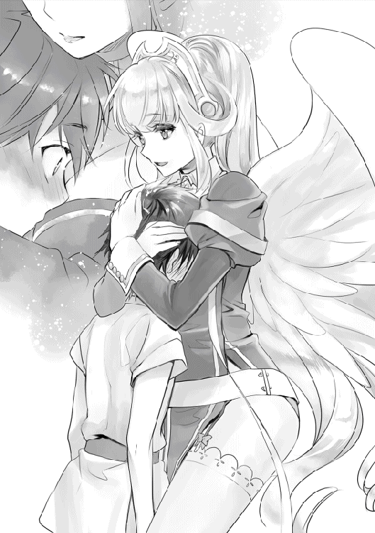
「ふふん、そうじゃろう！ 流石はワシの──」
「でも」
喜びに染まるゼウスを手で静止して、一呼吸置いてから宣言する。
「私、ゼウスをお父様として認めたわけではありませんから」
「......そ、そうじゃな。すまなかった」
肩をがっくりと落とすゼウスを見て『してやったり』とほくそ笑んでいた。
「......私もいつか、お父様と呼べるようになりたいですね」
「む、小娘。今もしかして......デレおったか？」
ちょっと小言を漏らしたつもりが、通りかかったアスラに聞かれてしまったらしい。恥ずかしくなったラーファは顔を染めたまま平然を装い、威嚇することにした。
「何か言いましたかアスラさん？ 魔法ぶちこまれたいですか？」
「ハハッ！ 我の気のせいだったから頼むから魔力球を向けるな!!」
「......素直じゃないね」
続けて現われたメーティスが、二人を宥める。
「......だから、私がゼウスをお父様と呼べるように、必ずお母様には深く謝罪をして下さい。それを呑んでもらえるのなら、ラティさんに私の持つ知識の全てを叩き込んで見せましょう」
ゼウスから手紙を貰ったとき、ラーファは内心嬉しかったのだ。父親に自分という存在を頼られたからである。しかし、新たな息子を育てていると聞いて、複雑な心境に立たされた。
──自分はお父様に利用されるだけなのか、と。
それでも、久しぶりに父親を見たくて訪ねてしまったのは、父の愛情を求めていたからなのだろう。
「......分かった。必ず謝罪に向かおう」
これで母ラファエルに土産話が出来た。
交渉はラーファの勝ちだった。
「契約成立ですね。安心してください。二年もあれば立派な魔法使いにしてみせますよ」
ラーファは父を最低の男だと思っているが、嫌っていたわけではない。毎月、生活に必要なお金は送ってくる。賢者になる為の資金だって提供してくれた。誕生日にはお祝いの手紙と花束が毎年のように届いている。
だから、どちらかといえば好きだ......母親の手前、素直になれなかったのだが。
「ラーファ、ぐずっ......迷惑かけてすまん......かったのう......」
それに、目の前で自分のために泣いてくれている父を恨むことが出来るはずない。ラーファはこれでも人並み以上に優しさを持っているのだから。
「ふふ、皆さん。これからお世話になります」
涙するゼウスを慰めるように頭を撫でる。先ほど、ラティがしたことを真似するように。
母、癒しの大天使ラファエルの人並み外れた優しさは、ラーファにも受け継がれていた。
「──お父様。私を頼ってくれてありがとうございます」
「......えっ？ ラーファちゃん、今──」
「何も言ってないですよ？」
「......あ、はい。何も言ってないね」
まぁ、ゼウスの血が混ざったお陰で、多少性格は捻じ曲がってしまったが。
‡
翌日から始まった講義は、僕の未熟さを痛感するものだった。
「ラティさんの魔力は年々増え続けています。大変喜ばしいことですが、実力に対して魔力の許容量が極端に多いので制御が効かず、魔力が暴走する危険性を孕んでいる状態です」
魔力は体力と同じように、魔法を使うことによって最大値が上昇していく。しかし、僕は『生まれつき魔力が増えていく』という、先天性の特異体質を持っているそうだ。そのお陰で、本来は時間をかけて魔力を鍛えていく過程を吹き飛ばし、実力が伴わないまま、賢者様も驚くほどの魔力を手に入れてしまった。
結果、強力な魔法を唱えることはできるが、制御が利かない状態に陥ったわけだ。
「まずはラティさんが魔力を制御できるように、特別な授業を行いましょう」
「特別、ですか？」
「はい。このラットを使います」
短冊状の竹篭を机の上に置くと、チュウチュウ、と鳴き声が聞こえてくる。
これで何をするつもりなんだろうか？
「これから、治癒魔法を覚えていただきます。その為には......」
ラーファさんは、つぶらな瞳のラットを一匹掴み、反対の手でナイフを取り出して──切りつけた。鮮血が飛び交い、赤い染みが机に広がっていく。
な、なにしてるのこの人っ!?
「この怪我を負ってしまったラットを治療してあげてください。注ぐ魔力が少しでも足りなかったり、多すぎたりすると破裂しちゃいますから、注意してくださいね」
泣き叫ぶラット、笑顔のラーファさん。
その光景が酷く残酷に見えて、僕は呟いた。
「あ、あの......ラットが、可哀想ですよ......」
僕が日本人だからかもしれない。治癒魔法を覚える為に、ラットの命を奪うのは抵抗があった。小さな命も、大きな命も価値は変わらないと、おじいちゃんから教わっていたことも関係しているかもしれない。
そんな僕に対してラーファさんは怒ることなく、肩に手を置いた。
「......ええ、気持ちは分かります。でも、ラティさんの魔力はそれだけ危険を孕んでます。私、暴走した後の惨状を見てきたんですよ。酷いものです。このままでは、ラティさんが望まなくても大陸そのものを沈めかねません」
決して嘘は付かない。そう思わせる、揺るぎない瞳で僕を見下ろした。
「生きる為に必要な犠牲もある、ということを覚えてください。この世に生を受けた時から、命を奪わない生物なんて存在しないんです。命をどう捉えるか......それによって見えてくる新たな世界もありますから」
命の捉え方......。
「命は不思議な存在です。奪われる時もあれば、奪う時もある。自他の喜びを分かち合い、怒り、哀しみ、楽しさを理解しながら成長し、やがて子孫へと知識を受け継ぎます。そうすることで遥か遠い過去から、長い年月をかけて変化を繰り返し、今日の未来まで命を繋いできました。永遠に成長する未知なる存在です。でも、多くの人々はそのことを理解していません」
僕にも理解できるように、ゆっくりと呟く。
「ラティさんが〝命〟をどう捉えるかによって、善にも悪にも、傍観者にだってなることができます」
生きるために命を奪う事。
快楽のために命を奪う事、とは似ているようで、まったく違う本質が隠れていた。
「でも、この方法に違和感を覚えたら遠慮なくおっしゃってください。別の方法を考えて見せますから」
即決できない僕に気を使ったのか、ラーファさんは胸を張って言った。
お爺ちゃんに呼ばれて、辿り着いたのが昨日のことだ。まだ一日も立っていない。それなのに、僕のために魔力が暴走した現場を視察して、魔力を制御できる方法を一生懸命考えてくれた。その証拠に、ラーファさんの翼はヨレているし、目のくまも凄い。
もう一度、目の前で鳴くラットを見た。
「......ごめんね」
善として生きて、善のまま死にたい。
この体から生まれる魔力が危険だというのなら、絶対に制御してみせる。
──僕は、治癒魔法を開始した。
‡
あれから二年間、僕は治癒魔法を習得するために費やしてきた。
治癒魔法といえば、傷口を癒す魔法で間違いない。ファンタジーゲーム等に登場する便利な魔法である為、簡単な魔法だと誤解されがちだが、とても難しい魔法だということを思い知った。
まず対象者の怪我や症状、年齢などを確認した上で、的確な魔力を練り、繰り返し詠唱する必要がある。力任せに詠唱を始めると、魔力分子が拒絶反応を起こし......最悪の場合は死に至る。
魔力消費も高く、治癒魔法をイメージできる者しか詠唱ができないとされている。悪の心に染まった者は、この癒しのイメージが作れないらしい。
「賢者を目指すのでしたら、習得必須の魔法なんですよね」
ラーファさんは治癒魔法を簡単に詠唱する。流石は本物の賢者様だ。改めて凄さを思い知る。
僕は、最初こそ怪我を治すどころか、過剰な魔力を送り込まれたマウスが破裂したりと、中々に悲惨な結果を招いてしまった。あの時の罪悪感は正直堪える。
それでも一年が経過するころには三回に一回は成功するようになって、最近では確実に治癒魔法を成功させることができるようになっていた。
‡
山桜が風に揺られ、花びらが優雅に舞う。ウグイスも鳴く新たな春が訪れる。
僕は十歳になった。この二年間でそれなりに成長したと思う。
お爺ちゃんたちのお陰で、この世界の共通言語、神聖言語、象形文字、聖刻文字などを全て頭に叩き込んだ。魔法に関しても〝風〟をイメージさせるものを中心に扱うようになり、雷撃を自在に操れるようになった。
「魔法使いは、どんな状況でも魔法を使える人のことを呼ぶんですよ」
ラーファさんの話によれば、魔法使いは両腕を切り落とされたとしても魔法を唱えられなければ、一流とは呼べないそうだ。喉をやられても、命が尽き果てようとしても、最後まで戦う意思を持った強き者だけが一流と呼ばれるに相応しいらしい。恐ろしい考えにも感じるが、どの分野でも本質的に一流の人達は、何かを犠牲にしているのだろう。
「それじゃ、ラティさん。今日は魔法具でも作ってみましょうか」
朝食を食べ終えると、ラーファさんはそんなことを言い出した。
魔法具は、炎を撃ちだす杖や、妖精の魔力が込められたペンダントなどのことを呼ぶ。身近な物だと、メーティスさんから頂いた《アダマスの銀剣》も魔法具の一つである。
「魔力を絶妙に調整しないといけないので、中々に難しいですよ？」
悪戯っぽく告げると、まだ食事中の僕の首根っこを掴み、引きずり、部屋へと連行した。ラーファさんは荷物から小さな箱を取り出して、机の上に置く。
「これは指輪ですか？」
「少なくとも食べ物には見えないですね」
銀製特有の優しい輝きで、手垢がついていないことから真新しさが感じられる。
「今日の課題は一つだけです」
すぐ隣に立ったラーファさんは、勿体つけるように一拍の間を置く。
「治癒の指輪を作成してみてください」
難しい課題を出されてしまった。
「魔法具の作成方法は大丈夫ですか？」
「はい。指輪に見合う適量の魔力を注ぎ込むんですよね」
「正解です。そのために〝銀の指輪〟を用意しました」
この世界の銀は魔力と相性が良いらしく、様々な魔法と組み合わせて使うことができる。他にも希少鉱石があるらしいが、それらは殆ど入手ができないらしいので割愛する。
「それでは始めてください」
ラーファさんの合図で、意識を指輪へと集中させていく。
銀の指輪に両手をかざして、魔力をなみなみと注ぎ込む。指輪が淡く蒼い輝きを放ち、魔法の付加が始まった。
「そう、ゆっくりです。焦ってはいけませんよ」
蒼から碧の輝きへ変化した頃合いを見て、魔力の注入を中止する。治癒魔法で学んだ経験だが、過剰な魔力は毒になる。満タンのコップに水を注げば零れ落ちるように、魔力も簡単に溢れてしまうのだ。
体感に過ぎないが、成功のコツは『もう少しいけるかな？』と感じた時に止めておくことだ。この僅かな差で魔法具の品質が決まってしまう。
「できました。どうですか？」
碧に輝いていた指輪は、魔力の注入が止まったことで本来の美しい銀色を取り戻す。
個人的には良くできたと思う。
「............」
でも、ラーファさんは口を開けたまま、指輪を掴んでジっと見つめていた。
もしかして、おかしな場所でもあったんだろうか？
「ラーファさん。どうでしたか......？」
沈黙に耐えられず、尋ねてしまう。
「......あ、すみませんでした」
ハっと意識を取り戻したかのように、ピクリと身体を跳ねさせる。
「まさか、いきなりの無茶難題を成功させるとは思ってなかったので、驚いちゃったんです。ラティさんは天才ですね。私でも二週間はかかったんですけどね......」
褒めつつ、悔しさを見せつつ、
「合格です。おめでとうございます」
複雑な表情を浮かべて最後は褒めてくれた。
ラーファさんは史上三人目の賢者に選ばれるほどの素質を秘めている故に、魔法に関してはプライドが高い。なんだか申し訳ない気持ちになってしまう。
「それではこの指輪は私が頂きますね」
「分かりました」
掴んでいた指輪を迷わず左手の薬指にはめ出した。
あれ？ 薬指に指輪って婚約を誓った恋人が着ける場所だったような......この世界の常識は違うとはいえ、堂々と着けられると恥ずかしくなってしまうのは前世の性か。
「ラティさんには私お手製の指輪を差し上げます」
「ありがとうございますっ」
同じデザインの指輪を荷物から取り出して、手渡してきた。さっそく装着しようと思ったのだが、
「愛情を込めておいたので、絶対に外さないでくださいね。左手薬指に着けるんですよ？ 外したら呪われますよ？」
思わず体が静止する。この指輪、本当に身に着けて大丈夫だろうか？ なんだか呪い殺されそうな気がする。
「冗談です。天使の力を込めておきました」
どうやら呪いはかかっていないようなので、今度こそ指輪をはめることにした。
「指輪の交換ってなんだか照れくさいですね」
「あらあら。そういうことに興味をお持ちですか？ 私が相手で良いなら構いませんよ？」
とても魅力的な言葉だけど僕たちは姉弟。しかも家族という壁がある。その選択だけは考えられなかった。
「魔法の師弟関係だと、指輪の交換は良くあることです」
「へえ、そうなんですか」
「ええ。主に弟子が一人前だと認めた時に行うんですけどね」
「なるほど、そういう意味だったんですか。一人前の魔法使いとして認められたなら仕方な────い......ん、あれ？ それってもしかして!?」
「ええ、ラティさんはもう一人前です」
あまりに突拍子もない言葉に、驚きの声が溢れてしまう。
「......もしかして気づいてないんですか？ 僅か十歳で治癒魔法を習得、難易度の高いエンチャントによる魔法具の作成をマスターしたんですよ？ そんな十歳児、他にいませんよ。その歳なら暖炉に火を付けられれば秀才だと話題になりますね」
僕ってそんなに凄いことをしてたのか......まったく気づかなかった。
「治癒魔法をマスターしたということは、魔力の抑制もできるようになったということですよ」
言われて思い出した。ラーファさんは元々、僕が魔力を制御できるようにこのヴァナヘイムの村を訪れてくれた。治癒魔法は魔力のバランスが大事な魔法なので、これを完璧に使えるってことはつまり、魔力の制御ができるようになったということで──。
「ラティさん、改めておめでとうございます。この二年間、頑張りましたね」
ラーファさんは微笑みながら、優しい言葉をかけてくれた。
......前世では、こんなことはなかった。
いくら勉強しても、良い点数を取っても誰も褒めてはくれなかった。
仕事だって精一杯やっているつもりでもまったく評価されないし、手柄を立てても横取りする上司が世間からは評価されていた。
いつから、生きるのがつまらなくなっていたんだろう。
それが、死後に異世界へ転生して。
お爺ちゃんに拾ってもらって、魔法と出合って。
メーティスさんやアスラさん、ラーファさんが支えてくれて。
今日、初めて一人前として認めてもらうことができた。
「ふふ。実はですねぇ......ゼウスたちと相談をして、今日はラティさんの魔法使いとしての適性を検査していたんですよ！ 私とゼウスは元より、メーティスさんやアスラさんも『合格するに決まってる』って信じてましたよ。そのお祝いをするために、今日と明日は特訓はお休みです。それと、豪華な食事を用意してくれるそうです。良かったですね」
そっか、みんなは僕が合格するって信じてくれていたんだ......あれ、なんでだろう。嬉しいはずなのに目頭が熱くなってしまう。
「その指輪には私の魔力を詰め込んであります。きっとラティさんの窮地に役立つはずです......ってあれ？ ど、どうして泣いているんです？ あわわ、落ち着いてください！ 私は怒ってないですよ。ね？」
ラーファさんが慌てて僕を抱きしめてきた。柔らかい感触と母親のような温かさに触れて、更に涙が溢れていく。
「ち、ぢがうんです。うれしくて、それで涙が......」
「うぅ、ど、どうしたら泣き止んでくれるんでしょうか......」
結局、暫く涙が止まらなかった。
僕、今なら自信を持って言える気がする。
生きていることが凄く楽しくなった。
「ただいま帰ったぞぃ。さてラティよ、結果は──ってどうして抱き合っておるんじゃ？」
「......ラーファちゃん、もしかして襲った？」
「どうしてそういう発想になるんですか！」
お爺ちゃんたちは帰ってくるなり、僕たちを冷やかした。
「ま、ラファエルの娘ならその程度やるだろうな。奴はゼウスを監禁しようと鎖で──」
「ちょっと待ってください！ 私は精々、部屋に監禁して襲うくらいですよ！」
「......確かにラファエルさんとゼウスの娘だね」
みんなの声が頭に入らない。入らないけど、嬉しくて、仕方なくて、お爺ちゃんたちが居る方へと飛び込んでしまった。
「......ラティ君、どうしたの？ 今日は積極的な日？」
「ふはは！ 何かあったのか？」
「ラティが泣いている姿なんて、初めて見たのぅ」
お爺ちゃんたちの冗談が心地よく感じられる。
「僕、みんなに出会えて......本当に......幸せに、なりました......」
「......ラティ君」
この世界に生まれ変わって本当に良かった。
どうやら僕はすでに『幸福』を手に入れていたらしい。
「ラティにはワシたちも助けられておる。これからも傍にいておくれよ」
「......ラティ君のお陰で、私たちも生きる意味が見出せたから」
はは、僕も知らない内に人の役に立っていたらしい。
......うん、そうだな。
僕でも幸福を手に入れたんだ。
前世では絶対に叶わなかったものを、やっと手に入れられたんだ。
なら、僕はこれからも努力を続けよう。
夢は大きく、この世界で四人目の賢者を目指してみるのも良いかもしれない。
「私、何もしてないです！ 本当です、信じてください！」
「フハハ！ 犯罪者はみんなそう言うぞ！」
「本当なんですってば！」
とりあえず、涙目になっているラーファさんの誤解だけは解いてあげることにした。
蒸し暑い日が続く七月中旬の事だった。
「ラーファさんは人間界に住んでいたって本当ですか？」
「ええ、本当ですよ。ある悪魔を追って王都ミズガルドで暮らしていたんです」
ミズガルドは、人族が生活する君主制の王国だ。代々よりミズガルド王家が統治する大陸で、魔法技術の発展した豊かな王国だと聞いている。他愛のない雑談を交わしながら、ラーファさんと新しい魔法についての研究を行っていると、扉が勢いよく開かれた。お爺ちゃんだ。
「ラティ、ラーファや。今日から一週間ほど出かけるぞい」
「あら、突然ですね」
「どこへ出かけるの？」
「うむ。林檎の楽園へ向かおうと思ってのぅ」
林檎の楽園？
「ヴァナヘイム大陸の西、アトラース山脈を越えた先に存在する果樹園ですね。ここから近いですよ」
ふむ、よく分からない。考えてみたら、この世界に来てから一度も村を出た記憶がない。分からなくても当然か。後で地図に目を通しておこう。
「ついに、あの方に会いに行くんですか？」
「察しの通りじゃ。そろそろ怒りも冷めておるじゃろう」
「止めた方がいいと思います。自殺行為ですよ」
会話が不穏で堪らない。一体、どんな人が待っているというんだ。
「......今回はお留守番してる。お土産よろしくね」
「我はいらんが、どうしてもというのなら、熟れた林檎パイを所望する」
欲しいなら素直に言えばいいのに。しかし、メーティスさんとアスラさんは一緒には来ないようだ。
「......まだ殺されたくないしね」
「うむ。我だって命は惜しい」
誰かに怯えているようにも見えるが......。
「......ラティ君、ラーファちゃんの荷物は用意できてるよ」
随分と手際がいいことで。
「あの、ラーファさん」
「はい、どうしました？」
僕は小声で尋ねた。
「......お爺ちゃんたちの様子、おかしくありませんか？」
「ええ、そうですね。仕方ないと思いますよ」
「どういうことですか？」
「うーん。とりあえず耳栓を用意しておきますから、安心してください」
爽やかな笑みで流されてしまった。
会話が繋がってないが、耳栓が何の役に立つというのか......不安を隠せなかった。
‡
林檎の楽園ヘスペリデス。
下級精霊と女神様が経営する、《黄金の林檎》を生み出した広大な緑の果樹園だ。小規模な街だが、少し歩くだけで甘い林檎の香りが漂い、長閑な景色を眺めることができる。
また、黄昏の女神様が暮らす関係で、景色は常に夕焼けの輝きに包まれている。朝も夜も訪れないこの楽園では、天使たちが竪琴を奏でて澄んだ声で歌い、夢心地に聞き惚れたり......、ゆったりと流れる時間を体験できる。
そこで、この楽園は『ヘスペリデスの園』だと気づいた。女神達の女王が暮らす楽園で、不老不死を得られる《黄金の林檎》が存在する。その林檎を一口齧れば、未来永劫に生きながらえる事ができるのだが、《黄金の林檎》は神々の女王が守護する《百頭の守護竜ラドン》が守っているので、奪い去ることができた者は殆どいない。穏やかで優雅な旅に胸が弾んでいたのだが、今回の旅の目的を前にして心は冷え切っていた。
「十年ぶりに帰ってきたと思ったら、子供を連れて何様のつもりかしら？」
冷たい声が屋敷に響き渡る。ここは果樹園を経営する、女神の女王様が暮らすお屋敷だ。敷地は庭が見渡せないほど広く、屋敷内は三階造りの豪邸である。部屋の数だけで軽く百は超えているだろう。
「だ、だから悪かったと謝罪しておろう。こうして今日、頭を下げに来たんじゃよ」
「それで？ 浮気して嫁を捨てて出て行った男を許してほしいって？ 頭沸いてるんじゃないかしら？ 一度、治療院で見てもらったらどうかしら」
貴婦人特有の胸元が開いたドレスを着飾る女性。花緑青の長い髪は艶がかっていて、僕からみても凄く清楚な人だった。そして......僕は、この女性の声に覚えがある。あれは確か、この世界に転生してすぐのことだ。赤子で目も開かなかった頃に、お爺ちゃんと喧嘩していた奥さんで......、
「許しておくれ、ヘーラー！ 今でも愛しておる!!」
「うるさいわね、さっさと帰りなさいよっ!!」
ギリシャ神話最高位の女神ヘーラー。神々の女王にして類稀なる美貌を持ち、天空神ゼウスの正妻として知られている嫉妬深い女神様だ。本来の神話では、天空神ゼウスが女神ヘーラーと結婚する為に、元奥さんと離婚したという話もある。が、この世界の事だ。今も交際を続けているに違いない。
「......ど、どうせ、メーティスといちゃついてるんでしょう？ 知っているんだからねっ！」
「うぐっ」
涙目で上目遣いで典型的な嫉妬振り。ゼウスですら頭が上がらなかったという威圧感。メーティスさんが一緒に来なかった理由が分かった。ヘーラーさんの前にノコノコと姿を見せたら、修羅場に発展する。噂通り、凄まじい嫉妬ぶりだ。
「ラティさん、ラティさん」
ヘーラーさんがお爺ちゃんを罵倒する隙に、ラーファさんが小声で話しかけてきた。
「......あの人を怒らせたら、私達だってぶっ殺されますから注意してください」
一緒に、着いてくるんじゃなかったなぁ......。
「僕たち、お爺ちゃんの風当たりを避けるための案山子として、連れてこられたんですね......」
「その通りです」
お爺ちゃんが必死に土下座をする姿を眺め、一緒に溜息を吐く。
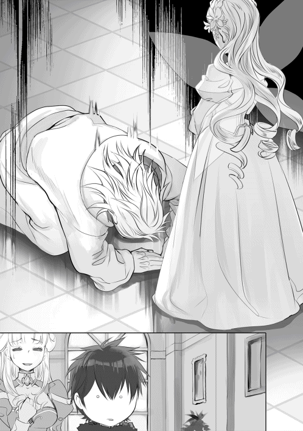
ヘーラーさんは壁から宝石が散りばめられた槍を手に取ると、頭上でグルグルと旋回させて、巧みにお爺ちゃんへと差し向ける。
「ま、待て！ 本当に当たるじゃろうて！」
「当てるつもりなんだから当然でしょう！ 貴方を殺してアタシは生きるのっ！」
お爺ちゃんの悲鳴がつんざく。耳栓があって本当に良かった。
「あのぅ、ゼウスお父様の御子息方ですよね？」
夫婦喧嘩が始まる横で、扉から給仕姿の綺麗な女性が現れた。
絶世の美少女、という言葉が当てはまるかもしれない。うら若く生気に溢れた表情で、見ているだけで活力が沸いてくる。でも今、ゼウスお父様って呼んだような......？
「......むぅ」
「ラーファさん？」
「......なんでもないです」
女性に見惚れていたら、ラーファさんが拗ねていた。なぜに？
「私はヘベと申します。ゼウスお父様と、ヘーラーお母様の娘なんです」
「あら、姉妹でしたか」
丁寧にお辞儀と挨拶をする女性は、美人という事以外に両親の面影がなかった。
青春の女神ヘベ。全女神の中で最も穏やかな心を持ち、慎ましい性格をしている。ヘベはたとえ酷い目に合わされたとしても、にこやかに笑っているほど優しい心の持ち主として有名だ。証拠に、腹違いの娘であるラーファさんに対しても嫌悪感を一つも見せない。
「お二人が喧嘩を始めましたら、翌日まで続きます。客間へとご案内いたしますから、ゆっくりとお休みなさってください」
気づけば、夜が訪れていた。ご厚意に甘えることにした僕たちは、ヘベさんの案内を受けて、別室三十畳の『小さな部屋で恐縮ですが......』に避難することにした。ラーファさんと二人きりになって、疑問が浮かぶ。
「お爺ちゃん、今になって奥さんに謝罪するなんて、どういう心情の変化なんだろう」
「うーん......。多分ですけど、ラティさんの為ですよ」
「僕、ですか？」
「ヘーラーさんは女神の女王として楽園ヘスペリデスを護りながら、精霊たちの知識を掛け合わせて造る『魔法書』に精通しています。特に使い魔を召還することに長けているので、ラティさんの魔力を少しでも抑える為に訪れたんだと思いますよ」
ヘーラーさんが魔法書に精通している......？
神話にはそんな話はなかったはずだ。やはりこの世界は神話に似つつ、どこか歯車がズレているらしい。お爺ちゃんを足蹴りしていた人が、そんな事ができるとはなぁ......。
『止めないかヘーラー！ そこは色々とまずい！ これ以上、関節を増やさんでくれ！』
『うるさい！ ずっと、ずっと寂しかったんだからぁ！ このくらいの仕打ちは覚悟しなさいよ！ ぐずっ......ばかぁっ!!』
お爺ちゃんが五体満足で帰ってこれるか不安である。
「ヘーラーさんは過度に嫉妬する傾向がありまして、それを受け止められるのはゼウスだけじゃないでしょうか」
困ったように、はにかんだ。
「まぁ、いざとなったら私が治癒魔法をかけますから、大丈夫ですよ」
お爺ちゃんの愛人。無口系のメーティスさんに、鎖で縛り付けて監禁する大天使に、嫉妬心全開の暴力女神様かぁ。特徴的な人ばかりに好かれてるなぁ......。
‡
翌朝になっても喧嘩は収まらなかった。すでに真夜中である。でも、お爺ちゃんたちの話は終わりそうになかった。流石に待っているのも飽きたので、僕たちは再びヘーラーさんの部屋を訪れることにした。
「この頭を下げても許してもらえないのは理解しておる！ それでも、ヘーラーしかラティの魔法書を作ることができないんじゃ！ あの子の魔力は桁が違いすぎる！」
「結局、あの子のためなの!? 私に会いにきたわけじゃないのね！ あの子がいなかったら謝りにも来なかったのね！」
美しかった内装は、戦争でもあったかのように破壊され、窓は吹き飛んでいた。奇跡的に照明だけは無事だが、高級そうな絨毯や家具は見る影もない姿に変わり果てている。
「少しはアタシの気持ちも考えなさいよ！ この、ばかあああッ！」
壁際に追い込まれたお爺ちゃんに、ヘーラーさんが距離を詰める。その手には槍が握られていた。
「ヘ、ヘーラーさん！ さすがにやり過ぎで──」
ラーファさんが叫ぶよりも先に、僕は動いていた。槍が振り下ろされるよりも早く、銀剣を引き抜く。お爺ちゃんは確かに女癖が悪い。それでも、僕にとっては大切な家族である。見過ごせるはずがなかった。
「《ウィンドスラッシュ》!!」
魔力を少なめに込めた一閃を放つ。ヘーラーさんの槍が吹き飛んだ。
「ふぇっ!? な、何？ 何が起きたの!?」
お爺ちゃんへ突き刺さるはずだった槍の先端はへし折れ、ヒュっと音を立てて弧を描き、壁へと突き刺さった。
「......今のあなたがやったの？ 余計なことしてくれたわね」
ジロリと、視線だけで人を殺せそうな睨みを効かせてくる。怖いけど、負けるわけにはいかない。
「す、すみません。でも、お爺ちゃんは僕を助けてくれたんです。だから、命だけは助けてあげてください。後は何をしても構いません」
「......ワシは半殺し確定かのぅ」
元はお爺ちゃんが悪いから仕方ない。
「ふぅん、ラティだったわね？ このゼウスが貴方を助けたって言うの？」
信じられない、そんな顔で僕を覗き込む。
「はい。僕を拾ってくれましたから」
「拾ってくれた？ まさかあなた、あの時の......」
僕の正体に気づいたらしく、腕を組み、見下ろしてくる。表情からは伺えないが、殺意だけは収めてくれたような気がした。すぐにラーファさんがお爺ちゃんに駆け寄って、治癒魔法をかける。
「すまんのぅ......」
「いえ。まだお母様に謝ってもらってませんから」
ラーファさんも素直になればいいのに。
「......あの時の赤ちゃんに、ラファエルの娘か」
僕達に気づいたらヘーラーさんは、ツカツカと近づいてきた。威圧感は感じられない。
「ラティ、聞きなさい。アタシはあなたのゼウスを助けようとする心意気が気に入ったわ」
「へっ？」
「だから教えてあげる。さっきの槍は若返りの槍《カナートス》よ。人を傷つけることが絶対にできない神器なの。それを破壊するなんて肝が据わってるわね」
つまり、ヘーラーさんはお爺ちゃんを傷つけるつもりはなかったということ......？ 首をかしげていると、不意にヘーラーさんが抱きしめてきた。突然の抱擁にされるがままになった僕は混乱する。
な、なんだこの状況は......。ヘーラーさんは怖いけど、嬉しいシチュエーションだ。ついつい、鼻の下が伸びてしまう。
「......ちょ、ちょ......何やってるんですかっ！ それは私の専売特許です！ 手を離してください！」
特に困っていた訳ではないが、ラーファさんの手によって引き剥がされた。しかし、先ほどからどうしてラーファさんは拗ねているんだろうか。謎である。
「ゼウス、喜びなさい。ラティに免じて許してあげるわ。しっかり感謝しなさいよ」
「......うむ。分かっておる」
「あれから貴方が姿を消して、ずっと心配していたんだからね......」
......そっか、ヘーラーさんはアレでもお爺ちゃんを愛しているんだ。だからといってやり過ぎだし、常人には好意が伝わらない方法だと思うけど、本気で怒って、本気で言葉をぶつけあった。
お爺ちゃんはそれを見抜いているし、一度も手を上げなかった。きっと、今もヘーラーさんを愛しているんだと思う。だからこそ、お互いに離婚の話は切り出さなかったようだし。
「さて、本題に移るわよ」
ヘーラーさんの一言で、僕達は並ぶ。
「ラティに魔法書を作ってあげればいいのね？ その為に足を運んだって言ってましたもんね？」
「......うむ。ヘーラーなら理解していると思うが、ラティは〝神具〟でさえも破壊する魔力を秘めておる。今は制御ができるようになっておるが、魔力が成長したらどうなるか分からん。一応、保険をかけておきたくてな。頼めるか？」
「アタシを誰だと思ってるのかしら。任せなさいな」
自慢気に親指を立てた。それにお爺ちゃんは笑って返し、連鎖するように笑い出す。お互いの気持ちが分かり合っている夫婦っていうのは、見ていて羨ましいものである。半分お世辞だが。
「魔法書の作成なら三十分もあれば終わるわね」
「そ、そんなに早いんですか!?」
ラーファさんが驚愕した。
「ええ、アタシはこれでも世界一の魔法書を作れる自信があるわ。このくらい当然よ」
自負できるほど、実力に自信があるということか。
「それじゃ、ラティは私と一緒にある場所へ移動してもらうわ」
「分かりました」
「ワシらはどうすればいいかのぅ？」
「悪いんだけど、ここで待っててちょうだい。大丈夫、すぐ終わるからね」
そう言うと、ヘーラーさんは柱時計へと近づいて魔力を当てる。すると、隣接する大鏡が赤く輝き、その奥に階段が現れた。
「ここからは二人っきりよ。後に続きなさい」
鏡をくぐり抜ける。眩暈がした。
「転移の鏡よ。船酔いに近い頭痛が起きるけど、何度か通ってれば慣れるわよ」
支えられながら階段を下りて行くと、薄暗い闇の中に燐光が見えてきた。僅かな湿気と埃の匂いに咽むせつつ、奥からは獣の匂いを感じ取る。
「あの、こんなところで何をするんですか？」
「楽しいことよ。すぐに終わるわ」
階段の先に待っていたのは、多少は暴れても平気そうなほど広い質素なフロアだった。まるで研究施設のように、無機質な壁が並んでいる。ただし、腐った卵のような匂いと酷い獣の匂いが立ち込めている。奥には大きな樹の幹が存在し、床と天上を突き破って生えていた。
「ラティほどの魔力を持っている場合だけどね」
ヘーラーさんは言った。
「魔法書を作るのに、適量の魔力を合わせて作らないといけないの。場合によっては持ち主の魔力を全て奪っちゃうかもしれないからね。最大でも、半分程度の魔力供給に抑えないとね」
「魔力を測定するってことですか？」
「正解よ。だから──ラティの力をアタシに見せてちょうだい？」
部屋の奥から、鉄が擦れる嫌な音が聞こえてきた。
重い足音がフロアに響く。音のほうへ首を動かせば、そこには巨大な人型──体中を這うような沢山の眼を持った巨人が僕の方へ歩み寄る。
「アタシね、ゼウスと同じ血が流れているの」
「へっ？」
「近親婚。この世界でも禁忌とされている領域に、アタシたちは立ち向かった。もちろんクロノスお父様に追い出されて、罰を与えられてこんな生活をしているんだけどね」
考えてみたら、神話の世界は近親婚同士で繋がっている関係が多い。それは、地球の歴史を参考に作られているからである。王家は親戚を作ることで野望を持った『敵』を作らないようにする為に、近親婚を続けてきた。それは、天空神ゼウスにも言えることだ。ゼウスの浮気が問題を起こすのも、ギリシャ神話から派生した物語の一つであるわけで......。
「アタシは果樹園を守る番人なの。《黄金の林檎》を盗もうとする、愚か者が絶えないからね」
話は続く。
「《黄金の林檎》は争いの種なのよ。どんなに仲が良くても亀裂を作る、悪魔のような神の果実。それを守るためにはアタシ一人じゃ役不足。だから──」
巨人を見て、恍惚の笑みを吊り上げた。
「アタシは魔法書と契約して、沢山の化け物を作り上げてきたの！ ヒュドラ、スフィンクス、ラドン......そして、百眼の巨人アルゴス」
悪寒が走った。
「そう、この子だよ？」
咄嗟に《アダマスの銀剣》を抜き放ち、振り仰ぐ。
「この子を倒せれば、恐怖に打ち勝てればラティの勝利よ。そしたら女神の女王ヘーラーの名において、世界に一つだけしかない最高の魔法書を作ってあげるわ」
何を言ってるんだ......この女神、僕を殺すつもりか......！
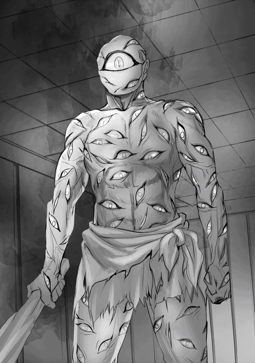
「さあ戦って！ 美しい旋律を奏でて！ 生き残るのはどっちの〝化け物〟かな？」
アルゴスの拳が振り上げられる。
「グル......ゴルア......ッ!!」
背中にゾクっと悪寒が走る。このままじゃ殺される。に、逃げないと......でも、どこへ......。考えるよりも先に身体が動き出した。アルゴスの拳が振り下ろされる。銀剣で受け止めるが、重い。重すぎる。衝撃で地響きが走り、埃が舞う。足元が軋んでいく......！
「ウグルァ......ラルァアア！」
なんていう馬鹿力だ......これが百眼の巨人アルゴスなのか......。
五メートルを超える巨体は存在感があり、全身には大小様々な〝眼〟が張り付いている。武器、防具らしいものは身につけていないが、その破壊力は想像を絶するものだった。もしも、拳に一発でも掠れば致命傷は避けられないだろう。できることならば、接近戦は回避したい。となれば──魔法を使うしかない。しかし、僕の思惑を読むようにアルゴスは床を蹴った。素早い。こんな状況で詠唱なんてできるはずがなかった。
「その子は執念深いから、簡単には逃がしてくれないわよ？」
ヘーラーさんが言うように、アルゴスは僕を執拗に追いかけてくる。こんな状態じゃすぐに掴まってしまう。どうにかしないと......。
『──六道の精神よ。力を開放せよ』
身体能力倍加を発動させて、《アダマスの銀剣》で切りつける。
「駄目だよ。それじゃアルゴスは倒せないよ？」
傷一つ、与えられなかった。
なんだこれ......万物を切り裂く《アダマスの銀剣》が、通じないなんて......。
「アルゴスは神獣なの。神の加護を授かっているから、そんな剣ごときじゃ倒せないよ？」
僕が狼狽している隙を狙い、アルゴスは蹴りを決めてきた。咄嗟に《アダマスの銀剣》で受け止めて身を守る。しかし、重い衝撃を抑えきれず、後方の壁まで吹き飛ばされてしまった。
「あぐぅっ！」
床へ落ちた衝撃が痛みとなって駆け巡り、酸っぱいものを吐いた。肉体を強化した状態でもこれだけ吹き飛ばされるなんて......完全に油断した。アルゴスは恐怖を楽しむように歩み寄ってくる。僕にトドメを刺すつもりらしい。不気味な悲鳴と共に拳を振り上げた。
──考えろ。
恐らく百の眼は利点でもあるが欠点でもある。鍛錬すれば鍛えられる筋肉と違い、眼は鍛えることができない。それが最大の弱点でもあるはずだ。周囲を見渡す。ここが手入れの届いていない地下フロアであることを再確認する。アレを利用するしかないか。
『──そよ風の穢れよ！』
深く腰を落とし、《アダマスの銀剣》を下段へと構えて、詠唱を紡ぐ。これは《ウィンドスラッシュ》よりも、更に詠唱が短い〝そよ風〟を起こすだけの魔法だ。一見、何の役にも立たないように思えるが、その通りだ。
『──舞い上がれ《エアライド》!!」
そんな魔法でも、埃を舞い上がらせることくらいはできる。目の前へ迫ってきたアルゴスは、周囲の埃が一斉に浮き上がったことで瞳を閉じていく。その瞳が閉じきった隙に、足元へ這わせていた魔力を開放した。紡ぐのは、ラーファさんから学んだ新たな魔法。
『──雷よ、一条の怒りを振り下ろせ！ スパーク！』
詠唱に反応した魔力は、埃へと光の線を走らせる。電気を浴びた埃は周囲へ放電し、連鎖反応で次々に激しい点滅を繰り返し、広がっていく。それはアルゴスの眼にも届くわけで──
「グルゴギュアァ......!!」
絶叫と共に蹲くまった。全身を包み込む埃に眼を焼かれたようだ。そもそも生物の目は激しい点滅を苦手としているし、眼が多いことはそのリスクも高くなる。つまり、アルゴスは力と巨体を除けばそれほど強い怪物じゃないんだ。胴体へ、風と炎を纏わせた斬撃を放つ。
「アアアッ！ グァアアッ！」
血飛沫が散る。アルゴスの皮膚を切り裂くことができた。やはり、炎と風の相性は良いらしい。炎単体では火力が不足するものの、酸素を取り込むことで熱量が爆発的に増加する性質がある。いくら硬い皮膚だって、灼熱の斬撃には絶えられるはずが無い。トドメを刺すべく、《アダマスの銀剣》へと再び炎と風を纏わせる。
「こいつで終わ──」
瞬間、アルゴスの動きが変わった。様子がおかしい。肉体が膨れ上がり、燃え上がる炎を取り込むように、灼熱を纏った巨人へと変化していく。
「アルゴスはね。女怪エキドナを始め、多くの怪物を倒して手柄をあげた誇り高き存在なのよ。その程度の小細工が通用すると思うかしら？」
ヘーラーさんの言葉が終わるよりも早く、アルゴスの蹴りが放たれた。慌てて剣で受け止める。だが、先ほどよりも動きが早い。蹴りを受け止めた瞬間、僕は壁際まで吹き飛ばされた。
「......ごふっ」
骨が悲鳴をあげている。痛くない場所がない。急いで治癒魔法をかけるが、回復は間に合わない。
......参ったな。複合魔法を乗せた剣技は奥の手だった。あれが通用しないとなると、僕が使いこなせる魔法は全て通じないことになる。どうしよう、どうしたら、僕はアルゴスに勝てる。
「ラティ!! 生き残りたければ全力で魔法を唱えなさい!!」
突然、何を......。
「ラティの目を見れば分かるわ。あなたは魔法を恐れてる。ゼウスから話は聞いたわよ。魔力を暴走させたそうじゃない。その時の心理的恐怖がトラウマとなって、無意識に魔力を抑えているのよ。それを、今ここで克服しなさい」
ヘーラーさんは叫び続ける。
「悲しいものはしょうがないわ。生きているってそういうことだもの。でもね、悪いところを受け入れて、成長して、支えられて生きていくのも命の有り方じゃないかしら」
それは僕を励ましてくれる言葉だった。お爺ちゃんにも似た優しい言葉は、今の僕を落ち着かせてくれる。家族を守りたい、って前に決意した。考えてみれば、僕はお爺ちゃんたちに助けられてばかりで、まだ僕は皆のために何かをしてあげられた記憶がない。結局、守られている立場に過ぎないのだ。
「......戦うんだ」
僕は変わらなくちゃいけない。今だってお爺ちゃんが心配しているはずだ。ラーファさんだって待ってくれている。もしかしたら、メーティスさんやアスラさんもこうなることを知っていたのかもしれない。僕一人の力で戦わないと、皆を安心させてあげられないんだ。もう守られるのは嫌だった。皆を守れるくらいに強くなりたいって決めたんだ。なら、立ち上がれ。涙を拭え。ひるむな、怖がるな。
「変わるんだ!! 大切な人を守るために！」
もう、僕は一人じゃない。だから、僕は強くならなければいけない。その決意を、この戦いで証明しなければならない。そうしない限り、僕は自分の殻を破る事ができないのだ。
「......そうよ。それでいいの」
ヘーラーさん、ありがとう。あなたのお陰で僕は、前に進めそうな気がする。
魔力の暴走は怖い。でも、
「何があってもアタシが止めてあげるわ。約束する。安心して、あなたが使える最強の魔法を放ちなさい」
強力な魔法か......。この二年間、僕は魔力を制御することに精一杯で、上級系の魔法を詠唱したことがなかった。
また魔力が暴走するんじゃないか？
それだけが怖くて、詠唱できなかったと言った方が正しいかもしれない。でも、今は違う。ラーファさんのお陰で魔力をほぼ完璧に調整できるようになった。その為に頑張ってきた。
皆を、自分を信じてみよう。そうすることで新しく前に進めるような気がするから。
『──断罪よりも罪深し王よ』
今まで見てきた中で最強の魔法といえば、僕の魔力が暴走したときにお爺ちゃんが繰り出したあの〝雷霆〟の印象が強い。
雷霆と言えば、僕の記憶だとゼウスが持っている最強の武器だったはずだ。この世界では魔法になっているみたいだけど、その威力は全宇宙を焼ききるほどだって言われている。お爺ちゃん取っておきの魔法は使えなかったけど、雷霆ならきっと......！
『かは眠る』
《アダマスの銀剣》を杖に見立て、壁へと差し向けた。
『雷轟の穢れを纏い、朽ちる怒りを授けよ』
今までに感じたことのない高揚感が僕を満たしていく。何だろうこれ......力が湧き出る......魔力が、吸われている？
「ちょ、ちょっと待ちなさい！ なんで、なんでその魔法を知ってるのよ！ すぐに詠唱を止めて──」
『──雷霆』
雷神の一撃を放った。詠唱に反応して、落雷が天上を突き破る。黒く濁った魔力の塊からは、神々しい黄金の槍が現れて、激しい雷撃を放つ。
「──ッ────!!」
視界が稲光に包まれる。アルゴスの声にならない声が聞こえた気がする。全てが崩壊する轟音に、嵐のような風が吹き込んだ。瓦礫が飛び散る暴力の渦。足元が激しく揺れる。床を突き破る稲妻の雨。瓦礫を照らす激しい点滅。それらが収束し、収まった後の光景は廃墟そのものだった。アルゴスの姿はどこにもない。静寂だけが訪れる。
「......普通はね、アルゴスの眼を一つずつ潰していくものよ。ラティは普通じゃないと思ってたけど、まさか一部の神々しか使うことを許されない《雷霆》を使うなんて化け物ね。人族の癖に、呆れる様な魔力を持っているわねぇ」
ヘーラーさんは落胆したような呆れ顔をしていた。その顔はすぐに笑みに包まれる。
「おめでとう、ラティの勝利よ。約束通り、世界で一つだけの魔法書を作ってあげるわ」
パチパチ、と乾いた拍手が聞こえてきた。
どうにか認めてもらう事ができたようだ......。丁度、身体能力倍加の効果も切れて、全身に倦怠感が訪れる。剣を杖代わりに膝をついた。
「もう、だらしないわね。しっかりしなさい。男の子でしょう」
そんなこと言われても、あんな巨人と命の奪い合いをしたんだ。肉体的にも精神的にもかなり披露している。無理だ。そんな僕を見かねたのか、ヘーラーさんが立ち上がらせてくれた。
「ヘーラーさん......僕、下手すれば死んでたんだけど」
「ゼウスが褒めるってよっぽどのことだからね。ラティなら平気かなぁーと」
だからって、あんな守護者と戦わせるなんて頭がおかしいとしか思えないが。
「ただね......問題があって」
「問題ですか？」
これ以上、何があるんだ。
「この建物、爆発するわ」
直後、奥の檻が次々に爆発した。まさか、これも僕のせいか？
「まったく......とんでもないことしてくれたわね！ 急いで逃げるわよ！」
恐らく謝っても許してもらえない惨状を生み出した僕は、足が動かなかった。魔力が枯渇した影響らしい。意識が朦朧としてくる。
「ああもう、掴まりなさい！」
ヘーラーさんは強引に僕を背負い、階段を駆け上る。
「ところで、なんでを雷霆を知っているのかしら？」
「えっと、お爺ちゃんが昔使ってたからつい......」
「あのバカゼウス！ 簡単に使っちゃいけないっ魔法だって自分で言ってたんじゃない！」
そんな凄まじい魔法だったのか......。背後から崩落する瓦礫の音。振り返ると、数秒前まで走っていたはずの階段が焦土として崩れていた。もしヘーラーさんが僕を背負ってくれなかったら、僕は丸焼きになっていたんじゃ......。
「ぜえ、ぜえ......こ、こんなところで死ねないわよ！ まだゼウスにはお仕置きが足りないんだから！ アタシは生きるの！」
背後からは火柱が迫っていた。階段を登る。激しい爆発音が聞こえ、強烈な熱が押し寄せてくる。
「......出口が見えてきたわ！ 飛び込むわよ！」
「は、はい！」
「いっけえええええ！」
すぐ背中に業火が押し寄せてくるのを感じながら、手を伸ばすように鏡へと触れた。瞬間、世界が捩れるように形を変えて、ひんやりとした空気が流れ込んできた。僅かな頭痛を感じるものの、瞬きをした瞬間には荒れ果てたヘーラーさんの部屋に立っていた。
......無事に帰ってこれたようだ。うぅ、よかった......。
「あ、おかえりなさい。無事に終わったんですね？」
「それにしては、二人の様子がおかしいのぅ」
僕たちが呆然と立っているのを見て、ボロボロのソファーに座っていたお爺ちゃんとラーファさんが、僕たちを出迎えてくれた。僕、生きてる......よね。
「た、助かった......良かった......」
「......生きているって素晴らしいですね」
「本当にどうしたんですか？」
ラーファさんが僕を掴んで床に降ろしてくれた。そのまま抱き人形のように背中から抱擁してくるけど、今日だけは文句を言う気力も出ない。
「ゼウス！」
「な、なんじゃ!?」
そして、ヘーラーさんがお爺ちゃんの元まで走り出す。殺気が凄まじい。胸倉を掴み上げ、強制的に立ち上がらせた。
「何で雷霆を教えてるのよ！ 下手すれば大変なことになってたわよ！ 死ぬかと思ったじゃない！」
「な、なんの話じゃ！ ワシは誰にも教えておらんぞい！」
「嘘よ！ 確かにこの目で見たんだから！ 『鏡面世界』が一つ、駄目になっちゃったじゃない！ アタシの作り上げた神獣も守護者も全滅よ！ どうしてくれるのよ！」
な、なんだか罪悪感が......。
「......雷霆をラティが使えたって言うのか!?」
「嘘はついてないわよ！」
その言葉を最後に、静寂が訪れる。流れが掴めず、ラーファさんに尋ねるように顔をあげると、穏やかな表情で僕を強く抱きしめてきた。まるで、心配しなくてもいいんですよ、ってあやされている気がする。
「あ、あの......ヘーラーさん......すみませんでした。お爺ちゃんは本当に悪くないんです。僕が勝手にやったことで、その......」
とにかく、僕がしたことは僕が謝るべきことだ。責任を取るのが大人ってもんだろう。鋭い眼光を向けられるが、しばらくすると諦めたかのようにお爺ちゃんを掴んでいた腕を降ろしてくれた。
はぁ、と大きな溜息を吐く。
「......もう雷霆を使わないって約束してくれるなら、今回だけは許すわ。気にしないでちょうだいな......まぁ、ラティがとんでもない魔力を持っているのは分かったわよ。まさしく〝生きる災害〟って言葉が相応しいわね」
「うむ。じゃから魔法書が必要なわけじゃ」
「同感よ。大至急作ってあげる」
そう言って、僕たちを引き連れて作業部屋まで移動する。そこは多くの本と書類が重なっており、まるで蔵書館のような場所だった。棚には爪や毛、何かの心臓が入った不気味なアルコールが乱雑に並んでいる。ヘーラーさんは奥の机へ向かい、分厚い辞書を取り出して作業を始める。待っている間、お爺ちゃんが僕の腕を掴み、真剣な目で語りかけてきた。
「ラティや。雷霆は絶対に使ってはならん。あれは星の寿命を縮めてしまうのじゃ」
忠告だった。
「はい......そんなに危険な魔法だったんですね」
「うむ。雷霆については今後一切忘れなさい」
事実上の禁止宣言。確かに魔法っていうのは、使い方次第で取り返しのつかない事態を起こしてしまう。魔力の暴走、雷霆の失敗......自己嫌悪してしまう。魔法って、何かを傷つける力にしかならないのかな......。
「やってしまったことは仕方ないですよ。失敗は繰り返さなければいいんです」
「ラーファさん......ありがとうございます」
「いえいえ、どういたしまして」
どうやら励ましてくれるらしい。少しだけ元気が戻る。
「ラティも大変ね。魔力が人よりも高いから自由に魔法を使うことができないなんて。窮屈で辛いでしょうね。......そのために魔法書を作るんだけどね」
「......あの、その件で気になっていたんですけど」
「なにかしら？」
「魔法書を持てばどうして保険になるんですか？」
筆を走らせたまま答える。
「アタシの魔法書は使い魔を召還するの。使い魔に必要な魔力は主人から供給される。つまり、ラティの膨大な魔力の何割かを吸ってくれるのよ」
手招きを受けた。近づくと、隣の椅子に座るように施される。
「さあ仕上げよ。このページに魔力を注ぎ込んでごらんなさい。それによってラティに相応しい使い魔が現れるはずよ」
「使い魔......」
「そうよ。スライムや精霊が一般的だけど、魔力も濃度も高いラティなら、悪くてワイバーンやグリフォン、良くてドラゴンが使い魔として妥当なところね」
「うむ。基本的に魔力が高ければ、より高度な知能を持つ使い魔が現れるんじゃよ。相応しい使い魔が来るわけじゃな」
「ラティさんだけの使い魔ですね」
僕だけの使い魔かぁ。どんな使い魔が呼び出されるのか気になってきた。僕はまだドラゴンを見たことないし、もしドラゴンが現れたら自由に空を飛びまわれるかもしれない。グリフォンやワイバーンだって使役しているだけで格好いい。仮にスライムや精霊だったとしても、支えあうパートナーとしては十分なはずだ。
胸が弾んでくる。言われた通りに手をかざして、魔力を注ぎ込んだ。すると、書物を中心に魔方陣が現れて、部屋全体を包み込むように幾何学的な模様が展開される。
やがて、淡い光が訪れた。
「その調子よ。もう少し魔力を注ぎなさい」
「分かりました」
言われたように魔力を送り続けると、虚空から光が差して何かの姿へと変化していく。
──使い魔が生まれる瞬間のようだ。
果たして、僕の使い魔とは一体どんなものに──。
「ふえぇ。ご主人様、おはようございますっ！」
............あれ？
現れたのはドラゴンやワイバーン、グリフォンとは程遠い存在だった。まず、人型である。桜色の髪をした女の子で、年齢は七〜八歳だろうか。服は何も着ておらず、生まれたままの姿だ。
......な、なんで裸なの!? 目のやり場に困ってしまう。
前世から通して生まれて初めて、生で異性の裸を見た。興奮してきた。思わず視線を逸らそうとしても、男の性なのか首を動かすことができない。むしろ白い体に釘付けになる。大きく目を見開いた。
「むぅ、ラティさんは見ちゃ駄目です」
そんな僕を見て、頬を膨らませたラーファさんは優しく手を近づけて──目潰しをしてきた。
「ぎああああああ!?」
「まだ性教育は早いです。後で治癒魔法しますから、落ち着いてくださいね」
落ち着きたいけど痛みで落ち着けない！ そのまま床を転がった。女の子の体は宝石って聞くけど、男の子の体も大切に扱って欲しい。これでも繊細なんだよ！ 治癒魔法をかけてもらい、やっと落ち着きを取り戻したところで、もう一度だけ使い魔を見る。いつの間にかローブを着せられていた。
......うん、どう見ても普通の女の子だ。気になることは首輪がついていることくらいだろうか。
「「「............」」」
背後からお爺ちゃんたちの突き刺すような視線を感じる。どうしてだろう、僕に相応しい使い魔が少女だったせいか、胸が痛くなる。しかも鎖付の首輪をしているせいで、まるでそういう奴隷に見えてしまう。これが僕に相応しい使い魔なのか......。
「わたしは【アルス・ノトリアの魔法書】『ノイ』って言います！ ご主人様、これから末永くご一緒させて頂きますので、よろしくお願いします！」
珊瑚色のふんわりとした髪の少女は、三つ指をついて深く頭を下げた。左右対称の瞳は右が空色で、左が朱色。オッドアイってやつだ。少女から感じる神秘的な雰囲気に合わせたかのように、瞼は眠そうに半分だけ閉じられている。それでいて明るく、小っちゃな背丈が女の子特有の魅力を引き立てている。
うん、間違いない。どう見ても普通の幼女だ。
「ノイは〝魔法書〟より生まれました使い魔です！」
繰り返すが、誰がどうみても普通の幼女である。
「使い魔を呼ぶ魔法......まさか【アルス・ノトリアの魔法書】ですか？」
「はいです！」
ラーファさんは何かを察した様子だ。
【アルス・ノトリアの魔法書】
昔、ある宗教で使われていた古代魔術の儀式を写記したものらしい。
本来は天使降臨の方法を、詳細にまとめた"Note"として使われていたそうだが、様々な権力争いの中で本が燃やされてしまい、オリジナルは既に消滅している。この禁書は世界で最も多く写本が存在する魔法書で、儀式や使い魔、呪いに関して記録されているそうだ。
「ノイさんのお姿は昔に文献で見たアルス・ノトリア様のお姿と似ていますからね。私のような天使なら誰でも知っている存在ですよ」
「へえ。じゃあ天使と関わりが深いんだ」
「んー......初めて呼び出されたので良く分からないです！」
無邪気に頷くノイは、やっぱり普通の女の子にしか見えなかった。僕の想像していた魔法書は、ページを開けば強力な使い魔を呼び寄せて戦う〝召還〟みたいなものだった。なんだか拍子抜けしてしまう。
「さすがはゼウスの孫よね。女の子を使役する魔法使いなんて始めて聞いたわよ」
心底から愉快そうに笑ってくれる。
「待ってください！ お爺ちゃんと一緒にされるのは遺憾です！」
流石にお爺ちゃんほどは女癖が悪くないはずだ。
「ワシのフォローはしてくれないんじゃな」
「ゼウスの孫なら、で納得できるのも凄いですけどね」
もしかしたらお爺ちゃんの女癖の悪さが僕にも伝わって、ノイを呼び寄せてしまった可能性もあるが......ないと思いたい......。自信はなかった。
「では、ノイさんに服を着せてきますね。いつまでもこの姿じゃ可愛そうです」
「やです！ ご主人様と一緒に居たいです！」
強い口調で僕にしがみ付いてきた。目線が同じだ。照れくさい。同年代の子に抱きつかれるって嬉し恥ずかしいものなんだなぁ......。
「今は駄目ですよ。ラティさんはともかく、白髪の変態お爺さんに襲われちゃいますから」
「おい、ラーファよ」
捨てられた犬のように泣くお爺ちゃんを無視して、ラーファさんはノイを引き剥がして、部屋を立ち去っていく。とりあえず、ノイのことはラーファさんに任せてしまおう。ヘーラーさんに頼むと悪い影響を受けそうだし。
「さぁて、アタシの話を聞きなさいよ」
二人が退室したのを確認してから、ヘーラーさんは言った。
「あの子の存在が今後、ラティを助けるはずよ。もし、どうしても乗り越えられない壁が立ち塞がったときは、あの子の力を頼りなさい。魔力は近くにいれば供給されるわ」
使い魔は主人の魔力を供給することで生き続ける。
ドラゴンだろうが、スライムだろうが、人型だろうが例外は無いそうだ。
「半分も魔力を与えれば十分よ。ラティの魔力は大幅に減るでしょうけど、困ることはないでしょう？」
「はい、大丈夫です」
現状、僕はすべての魔力を使いきったことがない。過剰な魔力をノイに供給することで、擬似的に僕の魔力は下がることになる。これでも十分に活動できる魔力が残っているわけで、魔物を相手にしても苦戦することはないはずだ。これで今後、魔力を暴走させる可能性が低くなる。
「お爺ちゃん、ヘーラーさん。本当にありがとうござい──」
「ご主人様ーっ！」
お礼を伝えている最中に扉が勢いよく開いた。そこには着替え終わったノイの姿がある。そのまま僕の方まで走り......頭を下げた。頭突きが鳩尾に入った。
「ゴファっ！」
悶絶、肺が痛い。
「えへへ、捕まえました！」
また、僕に抱きつこうとしたらしい。涙目になって顔をあげると、ノイは前開きの大きめなローブを引きずるように着込んでいた。ラーファさんが前に着ていた覚えがあるので、ラーファさんの私物に間違いないだろう。後で服を買ってあげないとなぁ。
「懐いておるのぅ」
「それが使い魔よ。相性抜群の子が召還されるからね」
「それにしても懐きすぎのような......」
「きっとラティは寂しがり屋なのよ。誰かが傍にいて欲しいって気持ちがあったんじゃないかしら？」
うぐ、当たってる。誰かに必要とされたいって思ってるから、ノイが呼び出されたのか。
「あの、ご主人様！ そろそろノイと契約を結んで頂けませんか？」
「あ、うん。もちろんだよ」
どうやって契約を結べばいいんだろう？
「誓いを立てればいいんですよ」
困り果てていると、ラーファさんが現れた。
「望む願いを、と尋ねてあげてください」
「分かりました」
意外と簡単なんだね。
「さっそくやってみるよ」
「はいです！」
ノイの目線に膝を落とし、向き合った形で言葉を紡ぐ。
「君の望む誓いをここに」
ノイの誓いとは果たして──。
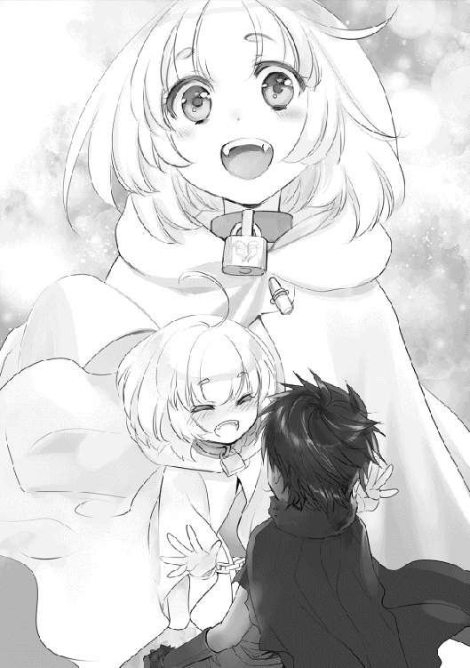
「はい！ 未来永劫にご主人様と寄り添い、死後もお傍を離れないことです！」
一瞬、手が止まる。恐ろしい誓いを立てられてしまった。
えっ？ これで契約を結ばないといけないの？ 後を考えると怖いんだけど......
『どうしたらいいですか？」
救いを求めて、ラーファさんに視線を送る。
『契約を受けなさい』
他の選択は許されないようだった。
「わ、分かった。その願い、確かに聞き届けたよ」
締まらない言葉で括る。すると、僕とノイの間から淡い蒼の燐光が現れて、部屋を包みこむ。
そして、ノイの首輪がカチリと音を立てて床へと落ちた。契約が無事に成立したようだ。
「おめでとうございます。これでラティさんは正式な使い魔契約を済ませ──」
「あああああああああ！ ご主人様に一つだけ伝え忘れていました！」
うわっ、びっくりした。
「じ、実はですね......」
言いにくそうに、両手をモジモジと擦り合わせる。どうしたんだろう？
「わ、わたしと契約したら──」
「うん」
「二十四時間以上離れてしまうと契約破棄とみなされて、ご主人様の心臓が破裂します」
おい、なんでそれを先に言わなかった。
「ちなみに来世も契約が続きます」
悪化してるじゃないか。契約するのに命を賭けるなんて、聞いた覚えもないんだが。
「......ヘーラーが魔法書の製作者だからのぅ。その性格の悪さが入ったんじゃろう」
「ゼウス、何か言ったかしら？」
「いや、なんでもない」
これからどうしよう......。落ち込み焦る僕の肩を、ヘーラーさんが軽く叩いてきた。
「ま、主従契約を結んじゃったのは仕方ないわ。折角、使い魔を呼び出したんだから仲良くやっていきなさいな。どうせ毎日魔力を供給しないといけないんだから、それほど厳しい契約じゃないでしょう？」
言われてみると、その通りだ。
一緒に生活をしている限りは顔を見合わせるはずなので、不足の事態が発生しない限りは問題ないだろう。少しだけ気分が晴れた。
「ノイ、これからよろしくね」
「はいです！ ご主人様のために精一杯、この身を尽くして頑張らせて頂きます！」
ご主人様、かぁ。
「その、ご主人様って変えられないかな？ 何だか恥ずかしくて」
「それでしたらパパや旦那様のがいいですか？」
「あーうん。やっぱりご主人様って呼んでいいよ」
パパと呼ばれることに比べれば数倍マシだ。
「ヘーラーよ。色々とすまんかったのぅ」
「もういいわよ。ただし、今後も顔を出すことを忘れずにね！」
「承知した。必ず守るとしよう」
お爺ちゃんを見ていて、ハーレムって色々と大変だなぁと改めて思った。よく小説なんかでは人気があるジャンルみたいだけど、僕はハーレムに憧れているわけでもないので、生涯一人だけを愛することにしようと思う。まぁ、相手がいないんだけど。
「そうそう。ねえ、ゼウス」
「んむ？」
ヘーラーさんが含みのある笑みを吊り上げる。
「昨日からラファエルがこの楽園を訪れているのよ」
「え、お母様が来てるんですか？」
「ええ、探し物をしているみたいね」
「なん、じゃと......」
喜ぶラーファさん。凍りつくお爺ちゃん。
「ゼウス。朝を迎えたら私とご一緒して欲しいところがあるんですけど......具体的にはお母様の所です。ちゃんと謝ってくださいね？ 約束しましたよね？ ね？」
ラーファさんがとびっきりの笑顔を向ける。お爺ちゃんの顔が青くなった。
「............わ、分かった」
天空神ゼウスが、生まれたばかりの子鹿のように震えている......。
「今夜は部屋を見張ってますからね？ お母様から逃げ出さないように監視しますから」
そのまま首根っこを捕まれたお爺ちゃんは、悲壮感を放ちながら泣いていた。殺されるとか、勘弁しておくれとか、散々な泣き言が聞こえてくるが、自業自得だ。
「ヘーラーさん、ありがとうございました。お陰で悩み事が減りました」
「それは良かったわ。ラティも大変だと思うけど頑張ってね」
「はい。どうにかやってみたいと思います」
微笑んでくれたヘーラーさんの笑顔は、どこかお爺ちゃんに似ている気がした。
その後、夜も遅いのでお屋敷に一泊する事にした。
「──運命の子の再来ね。ゼウス、貴方はこれからどうするつもりなのかしら？」
移動中にヘーラーさんが漏らした言葉の意味が、僕には、分からなかった。
‡
──翌朝、林檎の楽園ヘスペリデスの宿で絶叫が木霊した。
『わ、わた、わたじ......ずっと！ ずっど信じて待っでだのにー！』
『ラ、ラファエルよ、落ち着いておくれ！ その手に持った《アルテミスの矢》は流石のワシでも耐えられ──あぎゃあああああ！』
『裏切りもの！ 今更謝ってくるなああああ！ わああああん！』
包丁を振り回して泣き叫ぶラファエルさんと、お爺ちゃんの悲鳴が延々と聞こえてくる。
浮気をしたら恨まれる。ぼろ雑巾と果てるお爺ちゃんを見て、僕は一途に生きようと改めて誓った。
‡
数日後、村まで帰ってきた。
お爺ちゃんは男女の縺れで傷ついた心を癒すべく、自室で療養している。ちなみにラファエルさんから許してもらえたらしい。但し、次に彼女を捨てたら命の保証は無いそうだ。お爺ちゃんの夜遊びもここまでのようだ。
「......ラティ君は誠実に生きるんだよ」
被害者の言葉が胸に響く。
‡
翌日午後、林檎の楽園で購入してきたお土産『林檎のタルト』を村の人たちに配り歩いていた。
「えへへ、ご主人様とお散歩ができるなんて凄く嬉しいですっ！」
頬が緩みっぱなしのノイが嬉しそうに弾んでいた。
今日の彼女はぶかぶかのローブ姿ではなく、ラーファさんが購入してくれた猫耳フード付のローブを着ている。膝丈の短いハーフズボン、ストライプ模様のロングソックスを履いており、若干ボーイッシュな姿だ。それに契約時に身に着けていた首輪も着けていた。かなり目立つので止めさせようと思ったけど、
『これお気に入りなんです！ 着けてないと落ち着かないんです！』
と、激しく抵抗されてしまった。まぁ、本人が気に入っているのに、無理やり外させるのは酷い気もする。そっとしておいてあげよう。
「普通に歩いているだけだけど、暇じゃない？」
村は長閑ではあるが、絶景が広がっているわけではない。ノイの好みに合うか分からなかったので、若干気を使ってしまう。
「そうなんですか？......でも楽しいです！」
無邪気に返されて思わず苦笑い。ノイは何事も前向きだ。どんな出来事も楽しんでいる。変わらない風景も、僕たちと会話をするときも、いつも食べているご飯だって美味しそうに食べてくれる。
......微笑ましいなぁ。そういえば、使い魔になるまでの彼女はどんな生活を送っていたんだろう？
ちょっとだけ気になる。
「僕に召還されるまではどんな場所にいたの？」
「ノイの召還された場所ですか？ 複雑な場所ですよ！」
「それは是非とも教えて欲しいかな」
「うーん......じゃあ、ご主人様だから特別ですよ！」
使い魔とはそもそも、どんな場所から呼び出されているんだろう？ そこに興味が尽きない僕は、何気なく疑問を口にしてしまった。
「全皇帝の記録、年代記、神話伝説、宗教文書、契約書、許可証、手紙、恋文、法令書、行政文書、御伽話、十戒の秘石──世界中の本が集う【アッシュールバニパルの図書館】の封印された地下室の隠し部屋から呼び出されましたっ！」
とんでもないことを口走る。
「ふ、封印？」
「はい！ ノイは『不確定な存在』として教皇様のお力で秘密の地下室に封印されていたんです！ 暗くて、じめじめした部屋で何百年も一人ぼっちでした！ そこにも大量の廃本が置かれていたので暇は潰せたんですけど......えへへ、本当は寂しかったです......暗くて、怖い場所にいなくちゃいけないですからね！」
体が震えた。僕は、とんでもない勘違いをしていたのだ。ノイは普通の女の子である以前に魔法書なのだ。魔法書は人間としての扱いを受けない。教皇が何を考えたのか分からないけど、ノイを封印するってことは人として見ていなかったのだろう。
こんなに小さな女の子を、何百年も閉じ込めてたなんて酷い話だ......。
人の勝手で作られて、封印されて、使い魔として呼び出された。ノイが何にでも興味を持って、常に前向きなのはそうしないと生きていけなかったからだ。長い時間を孤独に生きていくことなんて、少なくとも僕にはできない。
そんな過去があったからこそ、ノイは目の前にある自由な世界が楽しくて仕方ないんだと思う。僕に好意を持っている理由は分からないけど、もしかしたら暗い場所から外へ逃がしてくれた『白馬の王子様』とでも思っているのかもしれない。
「あれ、ご主人様？ 顔を背けてどうしたんですか？」
「......ううん、なんでもないよ」
そんな境遇を聞いて、思わず泣いてしまった。
ノイが裸で呼び出されたのは、服を与えられなかったからかもしれない。羞恥心を感じなかったのも、そういう生活になれていたからだ。散歩をするだけで楽しめるのも、知らない世界をその足で歩き、その目で見て、肌で感じることができることに感謝しているのだろう。
ノイ自身の、今までの歩んできた人生について、深く考えていなかった。
これじゃ魔法使いとして失格だ。
「ご、ご主人様？」
ノイがどんなことを考えているかは分からない。だけど、僕が彼女のためにすべきことは泣くことじゃないはずだ。へたな同情は人を傷つける。前世で学んだことだ。両親が亡くなったとき、虐められたとき、同情の言葉をかけてもらうのが一番辛かった。自分が惨めで、情けなくて......見下されている気がして。あの時の気持ちは今でも覚えている。
「これから村の外も歩いてみる？」
「ふぇっ!? いいんですか!?」
「もちろんだよ。絶景っていう絶景を案内するからね」
「わぁ、嬉しいです！ 実は山に登ってみたいって思ってたんですよ！」
僕が彼女にしてやれる事は、彼女がやりたいことを全力で手伝うことだ。僕がノイと築きたい関係は『使い魔』としてじゃなく、友人として交流である。まぁ、人の姿をしているからっていうのはあるけど、やはり長い付き合いになるのだから、ここはしっかりと親睦を深めておきたい。
「それじゃ、行こうか」
「はいです！」
目を輝かせるノイを見て、そんなことを思った。
‡
夕方と呼ぶには遅すぎる夜になってしまった。周囲は薄暗く、耳元で掠れた声が呟かれる。
「ご、ご主人様......山って凄いんですね......足が棒ですぅ......」
ノイが、今にも気絶しそうだった。彼女は幽閉されていた関係で平均以下の体力しか持っていない。普段は元気に振舞っているが、少し体を動かしただけでも呼吸を乱すほど体力がなかった。結果、山登りを始めて数分で挫折。でも、どうしても景色を見たいと涙ぐんでいたので、その望みを叶えるべく彼女を背負って山を登り、絶景を堪能してから帰ってきたわけだ。
正直、ノイを背負って山を登るのはかなりキツい。僕の体力もそろそろ限界を迎えそうである。
「......夕日、とっても綺麗でした。本の世界でしか見たことがなかったので、すっごく感動しちゃいました。外の世界って楽しいんですね！」
「喜んでもらえたなら頑張った甲斐があったよ」
宵闇の中、月が僕たちを見下ろす。
二人で歩く夜道は寂しいはずなのに、虫の鳴き声や穏やかな風の音色が合わさって、なんとなく夏の風物詩を感じた気がした。ああ、疲れた。帰ったらお風呂に入りたい。
「ご主人様」
「うん？」
「ノイは、ご主人様のこと大好きですよっ」
首に回される手に力が篭る。そのまま鼻歌を口ずさみながら密着してきた。
「え、えっと......そんなことを堂々と言われると反応に困るんだけど......そりゃ気持ちは知ってたし嬉しいし、ノイは可愛いから僕から見ても魅力的な存在だ。だからその......突然言われたら言葉に困るって！」
こんなことになるのなら、お爺ちゃんから女性との接し方について聞いておくべきだった。
「そ......その......ありがと」
ありがとうって何だよ。僕も好きだよ、の一声くらい言ってやれよ。気づいてはいたけど、やっぱり僕には恋愛経験が不足しているらしい。気の利いた言葉の一つもかけてやれないから独身だったくせに......姿は変わっても、中身まではそう簡単には変われないようだ。
「あれ？ ご主人様のお顔が赤いです。お熱が出たんですか？」
「き、気にしないでいいよ。この熱はすぐ冷めるから」
「そうなんですか？ 無理しちゃ駄目ですよ？」
「はは、気をつけるよ」
ふぅ、どうにかごまかせた。僕自身、女性に興味はあるけど誰が好きかと言われたら、今は答えられない状態だ。ラーファさんは魅力的な女性だし、ノイだって年齢が近いせいかドキリとする時だってあるし。そんな二人を僅かながら異性として意識しているのは自覚している。
ただ、中途半端な気持ちで彼女を受け入れることはやっぱり失礼だと思う。もっと年月を重ねて、お互いに気持ちが整理できて、その時までノイが僕を好きでいてくれるなら、はっきりと答えてあげたい。
「それよりさ、帰りが遅くなったからメーティスさんに怒られると思うよ」
「ほえっ!? ノイたちは叱られちゃうんですか!?」
「もう夜だからね。覚悟をしておいたほうがいいかもね」
「はぅ、ノイの我侭のせいですみません......」
「僕が好きでやったことだから気にすることはないって」
ま、メーティスさんは口数が少ないので、軽く叱られるだけで済むと思うけど。落ち込むノイを慰めながら歩いていくと、すぐに我が家が見えてきた。ノイを降ろしてから一緒に玄関へ入る。
「......二人とも正座」
「「はい」」
めちゃくちゃ叱られた。
「......無事に帰ってきたから良かったけど、二人ともまだ十歳なんだからね。あんまり大人を心配させちゃ駄目だよ？」
「はい、すみませんでした。これからは気をつけます」
「ごめんなさいです......」
「......ラティ君は男の子なんだから、ノイちゃんに無理させないようにね」
確かにメーティスさんたちから見れば、僕は手間がかかる十歳に過ぎないはずだ。恐らく、僕がノイを連れまわして歩いたように見えるんだろう。事実、半分は当たっている。心配をかけたんだから怒る気持ちも分かる。反論の余地もなかった。
「......じゃあ、おしまい。ご飯冷めちゃったけど温めるから、リビングで待っててね」
説教が終わると、すぐに優しい表情に戻る。家族がいるって幸せなことなんだよなぁ......。
怒られたことが堪えたらしく、涙で目を腫らしたノイ連れてリビングへと向かった。ドアの隙間からはラーファさんとお爺ちゃんの姿があって、何やら口論している。
「悪魔が現れたって本当ですか!!」
びっくりした......何でそんなに驚いているんだろう。いつもは冷静なのに、こんなに取り乱すなんて驚きも倍だ。
「魔法都市で目撃情報があるようじゃよ」
「ふん。まだ奴とは決まったわけではないがな」
取り込んだ話をしているようだけど、どういう流れか掴めない。
「何かあったんですか？」
「あれ、ラティさんにノイさん？ お帰りなさいませ。でも帰りが遅すぎですよ？ 後で抱き枕の刑ですね」
それはご褒美ともいう。
「おぉ、帰ったか。待っておったんじゃよ」
「ゼウスに育てられただけあるからな、てっきり我は他の女性の家に上がりこんでいるのかと思ってたが、予想は外れたようだな！」
「僕にどういう想像しているんですか」
「もしそんなことしたら去勢しますけどね」
「えっ!?」
何か物騒な言葉が聞こえたような......。
「ほえ、悪魔についてお話をされていたんですか？」
「......ごまかせませんでしたか」
どうやら、僕たちに聞かれたくない話だったようだ。
「まぁいいんじゃないかのぅ。そろそろ話しておかねばならんと思っておったしのぅ」
「ふん、賛成だ。小僧にもいずれ関係することだろうからな」
「僕にですか？」
いつもとは違う雰囲気に、重苦しい空気が漂ってくる。僕も冗談を言っている場合じゃないだろう。最後まで話を聞くべきだと思い、近くの椅子へ腰を降ろした。
「まず、私が天使族ってことは紹介しましたよね」
「そうですね。今も背中に立派な翼が生えてますし」
「私のお母様は大天使の地位に付いておりました。部下の天使に頼られて、上位の神々の失敗を押し付けられる嫌な立場だったようですけどね」
中間管理職ってやつか。
「天使族についてもう少し補足しますが、神々の忠実なる下僕です。大天使ガブリエルを始め、多くの天使が神々から与えられた使命をこなします。例えば神様の素晴らしさを広めたり、神に変わって悪を滅ぼしたりですね」
「つまり、ラーファさんにも使命が与えられているんですか？」
「ご名答です。私に与えられた使命は少し特殊なんですけどね」
コホンと、咳払いをしてから続けた。
「──悪魔の殲滅です。悪魔が出現した場所を調査、滅ぼすことが使命です」
以前、悪魔を追いかけているって話を聞いた覚えがある。そういうことだったのか。
「最近は落ち着いていたんですけどねぇ」
「ま、待ってください！」
傍観に徹していたノイが驚きの声を上げた。
相手が悪魔って、ラーファさんお一人で戦うつもりですか？」
「ええ、そのつもりですよ」
「無謀です！ 悪魔はそれぞれが神様に匹敵する力を持つんですよ！ 一人では勝てるはずがありません！」
それは言いすぎなんじゃ、と思ったが、お爺ちゃんたちの表情は険しかった。ノイが言っていることは事実なんだって悟った。
「悪魔ってそんなに凄い存在なんですか......？」
ラーファさんが答えてくれた。
「悪魔は世界を混沌に導く【悪しき存在】です。地獄の軍団を従えて、いくつかの王国が滅ぼしていますからね」
そんな危険な存在がいたのか......。
「私は明日にでも魔法都市へ向かおうと考えてます」
「で、でもラーファさん......」
「大丈夫ですよ。私はこれでも賢者の称号を持っています。簡単に死ぬつもりもありませんし、現地で冒険者を雇う予定です。彼らの命を預かる以上は責任がありますし、それに──」
ゆっくりとお爺ちゃんを見た。
「──私はゼウスの娘です。天使でありながら神の血を受け継いだ私だからこそ、悪魔と互角以上に戦えますから」
ラーファさんは、力無く言った。
「......すまんのぅ。ワシも行かせたくないんじゃが、神の立場として人類を導く役割がある。ここでラーファを引き止めれば、散っていった神たちに、人類に申し訳が立たない」
辛そうにお爺ちゃんは言った。お爺ちゃんはかつて最高神の立場にいたはずの神様だ。そんなお爺ちゃんが自分の都合で娘を守ったら、きっと、他の神様たちから何かしらの報復を受ける。それはお爺ちゃんだけではなく、ラーファさんやラファエルさん、そして僕やノイにも被害が及ぶはずだ。悪魔が現れた時点で、お爺ちゃんに成す術が無かった訳だ。
「お爺ちゃんは戦えないの？」
「......戦えなくはないんじゃが、前の戦争で力を使い果たしておってのぅ。今はまだ、完全に回復してないのじゃよ」
「ゼウスだけではない、他の神々も殆どがそうだ」
本当はお爺ちゃんだって一緒に戦いたいはずだ。証拠に拳を握り締めている。見送ることしかできない自分に腹が立っているのだろう。
「可愛い弟の平和を守るためにも、私は頑張りますよ」
「......ラーファさん」
優しく手を握られた。温かい。この温もりが、感じられなくなるのかもしれない。
「それでは、私は外の空気を吸ってきます。食事は後ほど頂きますね」
明日にはラーファさんが魔法都市へ向かう。
うん、仕方ないことだ。神でも天使でもない人間の僕に、引き止める資格なんてないのだ。
だから、僕には見送ることしかできない。だから──。
「お爺ちゃん、ちょっと行ってくるね」
ラーファさんを追いかけた。僕は、ただの子供じゃない。前世で社会人として働き、無茶な仕事を押し付けられた結果、事故に巻き込まれて命を落とした情けない男だ。そんな寂しそうな男に、あのラーファさんの姿が重なって見えた。
それに、辛そうだった。もし無理をしているのなら、僕はラーファさんの力になりたい。
「──ラーファさんっ！ ......待って、待ってください！」
「..............................あれっ？」
駆けながら、月を目指すかのように飛んでいく天使を呼び止める。
ラーファさんは予想していなかったようで、すぐに振り返ってくれた。
このまま消えちゃうんじゃないかって不安だったけど、止まってくれて助かった。安堵して、ラーファさんが降りてくる真下まで移動してから肩で息をする。
「どうされたんですか？ あ、もしかして一人では寂しいから一緒に寝て欲し──」
「............本音は言おうよ」
「......えっ？」
「一人には慣れているつもりだった。家族が消えても、友人がいなくても平気だって自分に言い聞かせてきた！ ......でも、駄目だった。僕に優しくしてくれたラーファさんが、いなくなっちゃう日々なんて考えただけで嫌だった！」
自分のことながら、何を伝えたいのか分からない言葉だ。でも、ラーファさんは怯んで、小さく呻きを溢した。その震えた腕に手を向けて、ぐっと力を込める。
暗い月夜だけの世界。
今にも闇に染まってしまいそうな彼女の儚い瞳を、まっすぐに見据える。
「駄目なんだ。ラーファさん。僕は見過ごすことができなかった」
「......ラティさん」
「お願いします。ずっと傍にいてください。悪魔と一人で戦うなんて無理だよ。討伐なんて成功するか分からない。天使の掟って分からないけど、その命を手放しちゃ駄目だ」
絶対に認めない。僕に沢山の魔法を教えてくれたラーファさんが、優しいラーファさんの温もりが無意味に消えていくなんて、そんなこと絶対に認めるわけにはいかない。
彼女を感化できるほど、僕は結局、大人にはなれていなかった。
ラーファさんは沈黙する。目線を下げて、前髪で表情を隠して、押し黙る。
「お願いします......幸せな日常だったじゃないですか。あんなに笑って、あんなに幸せそうだったラーファさんが、使命を受けたからって命を粗末にしないで欲しいんです」
腕を軽く引っ張り、自宅に帰ろうと力を込める。
「........................粗末にしてません。私だって、本気です」
搾り出すように、胸の奥に溜まっていた想いを途切れた言葉に載せる。
それはとても小さくて、弱々しい響きだった──でも、
「──戦いたくないです！ 怖いです！ 私だって本当は、ここで平和に暮らしていたいんですっ！」
沈んでいた感情が爆発して、徐々に激化していく。
「それなら、戦わないでください」
「戦わなければ悪魔が世界を埋め尽くすんですっ！ 私の力は、天使がいる意味は！ 世界を守るためだけにあるのですから──」
「なら、守るよ」
「......え？」
「僕が世界を守る。だって......本音を聞いたから。ラーファさんの居場所も、魔法都市も、世界だって悪魔の手から守ってみせるよ。......だから、もっと頼って欲しい」
ようやく、一番伝えたかった言葉を伝えられた。静観で満たされていたラーファさんの瞳が震えて、パッと光が瞬いた。でも、すぐに輝きは鳴りをひそめてしまう。
「そんなこと......できると思いますか......」
「......うん。僕一人だと難しいです......でも、僕が戦うことで誰かを守ることができるなら、やれることはやってみたいんだ。やらせて欲しい。それにさ、僕たちは一人じゃ無理でも、二人で戦えばどうにかなるかもしれないよ......ラーファさんは本当に凄い人だから。魔法使いの頂点『賢者』の地位まで、自分の努力で成り上がったんですよね？ 神様とか、魔力が高いこと、そんなものよりもずっとずっとラーファさんの方が凄いです」
「─────────────────────ぶぇっ。ラティ、ざんっ......！」
......沈んだ感情の、更に奥。
「わだし......！ 魔法だっでお母様に褒めて欲しぐて......お父様に頼られだぐて......」
大人として振る舞っていた彼女の、本当の感情。
「大丈夫だよ。ゆっくり、ね？ その気持ち、受け止めるから」
ラーファさんは一人でなんでもできるから、周囲に頼ることができなかった。本当は怖いのに、本当は辛いのにどんな壁も乗り越えて来たんだと思う。そこには僕の想像を絶する過酷さと孤独があったんだと思う。
その過程で隠して来たはずの、無理やり抑えてきたはずの感情──不安、恐怖、寂寥。
それが外に溢れていく。
......僕が溢れさせたから。
転生したからこそ分かることがあった。大人も子供の世界も、根は変わらない。自分の感情を隠して、周囲の期待に応え続けることが社会では必要だった。
「......ラーファさん、僕も魔法都市へ行くよ。ずっと恩返しをしたかったんだ。まだまだ僕は子供だけど、チャンスをくれないかな？ 僕も、ラーファさんも、世界だって守れる道が必ずあるはずだから。......お願いします。もう少しだけ一緒にいさせてください」
「グズっ......はい、一緒に、行きたい、ですっ」
ラーファさんをここまで弱くさせちゃったんだから、責任は取らなきゃ。
「はは、断られなくて良かったです。もっと、ラーファさんのことを知りたいですから......それじゃ、家に帰りましょう。メーティスさんが美味しいご飯を作って、待ってくれていますから」
「............ひくっ............はいっ！」
‡
「それじゃ、行ってきます」
「ほどほどに頑張りますね」
翌朝、僕たちは荷物を背負って村を出た。まずは地上へ降りるための『飛竜船』に乗るために、浮遊大陸の港町タナイスへ向かう必要がある。
「はぅ、人族の国へお出かけですね！」
そうそう、ノイも一緒の旅だ。僕と契約した関係で半ば強制的にだけど......ラーファさんと地上へ向かうってことを伝えたら、
『ノイも是非ご一緒したいです！ ......ご主人様を取られそうですし」
と、快く返事をしてくれた。最後に何か言ってたけど、よく聞き取れなかった。まぁ、たいしたことじゃないだろう。
メーティスさんたちは反対したけど、粘り強く交渉したら最後には折れてくれた。
『......そこまで言うなら仕方ないかのぅ』
『......絶対に無理しちゃ駄目だよ。心配、だからね』
『小僧に信念ができたか。ならばどんな時でも絶対に諦めないことだな』
神様のことは詳しくないけど、聞いた話だと殆どの神様は『力』を使い果たした状態だそうで、今は悪魔と戦う余裕はないらしい。その間は、天使族と人族だけで悪魔と戦う必要があるそうだ。
『......ここはみんなの家なんだからね。辛かったら、厳しかったら帰っておいで。ゼウスは立場上言えないと思うけど、私は受け入れるから......だって、二人とも、私の可愛い子供だもん』
不覚にもメーティスさんの言葉に感涙してしまった。
また、みんなでご飯を食べるためにも僕にできることを全力で頑張らないと。
「港町タナイスでは、いくつかの大陸へ行くための飛竜船が出ています」
今回、僕たちが向かうのは、雲海を越えた先にあるミズガルド大陸の魔法都市だ。ラーファさんの話だと、全大陸の中でも最大規模の人口を誇る魔法都市では、様々な種族が入り混じって生活しているらしい。
「ノイは飛竜船に乗れて、とっても楽しいですよ！」
ちなみに飛竜船には基本的に神か天使族、それらと縁のある者しか乗ることができず、都市近くの森で降ろしてくれるそうだ。人に見つかっちゃいけない決まりでもあるのかもしれない。
そんなことを考えつつ船室へ向かうと、早々にラーファさんが奇行に走った。
「さて、まずは翼を隠さないといけないですね」
「あれ？ その翼って隠せるんで──ちょ!?」
そう言って躊躇わずに服を脱ぎ捨てるラーファさん。豊満な胸と、それを覆っている下着、それに白い体躯が官能的で、思わず唾を飲み込んでしまった。
いくら僕が弟みたいだからって、平然と着替えるのは女性としてどうかなと思うけど......いや、でも、おかげさまで良いものが見れました。神様、ありがとう！
「流石に翼を広げたまま人前に姿を晒せば『天使様だ！』って、ちょっとした騒ぎになりますからね。天使の掟でも、正体が知られることは禁止されております。ラティさんみたいに神様に育てられた人族は別ですけどね」
たしかに、天使族の正体が秘密じゃないなら、わざわざ都市郊外の森で降りる必要はないよなぁ......。僕だって地上で暮らしていたら、天使を一目見ようと押しかけるだろうし。
崇拝される立場って、意外と心労が絶えないのかもしれない
『──我が神名ラーファをここに捧げる。アンフィスバエナ！』
翼を優しく撫でながら、歌でも歌うかのように詠唱を紡ぐ。と、魔力に反応して翼が眩いほどに輝き始める。純白の翼は徐々に透けていき、忽然と消失する。
「ふぅ、どうですか？」
「わぁ！ どうみても人族ですよ！ 凄いです！」
翼がなくなったラーファさんは、どう見ても人族にしか見えなかった。
......考えてみたら、天使と人族の判別条件って翼が生えているかどうか、だ。翼を消したラーファさんを見て、天使族と疑う者は誰もいないだろう。
......寝ている時はどうしているんだろうってずっと考えていたけど、これで謎が解けた。一々、翼を消して寝ていたのか。
「ついでだから着替えちゃいましょうか」
「えっ!?」
どこまで天然なんだ、この人！
恥らう様子もなく背中に手を回し、胸当てを外しにかかる。思わず腰を上げて身を乗り出すように眺めると、
「むぅ。ご主人様、外へ行きましょうか」
「あ、ちょっと──」
頬を膨らませたノイに引っ張られて部屋を出ることになってしまった。後もう少しで拝めたのに残念である......。
「ご主人様、そんなに見たいならノイのを......」
「うん？ 何か言った？」
少し顔が赤いけど。
「......なんでもないです。はぁ、まぁご主人様ですもんね......。それよりも飛竜船を探索したいです！」
拗ねたように唇を尖らせながら、僕の腕を掴んだまま走り出す。ああそっか、ラーファさんの裸を見ようとしたから嫉妬しているのか......いじらしいなぁ。確かに僕もデリカシーに欠けていたかもしれないから気をつけよう。ラーファさんが一番だけど。
その後、ノイに振り回されて船内を探索して甲板まで出たけど......。
「......気持ち悪い」
「だ、大丈夫ですか？」
乗り物酔いした。
飛竜船は文字通り、ドラゴンに船を付けて運行している。甲板は魔法で薄い膜を張っているらしく、強風などは特に吹いていなかった。白い雲を泳ぐように進む光景がどこまでも気持ちいい。でも......乗り心地はお世辞にも良いとは言えず、船体が激しく揺れるので体がついていかない。おえ、吐きそう......。
「もしかして酔いました？ 船室で休むといいですよ？ ここから三時間は乗りっぱなしですからね」
と、ラーファさんがやってきた。
「......結構近いんですね」
空を飛んでいるのだから、当然かもしれない。
「ご主人様、治癒魔法をかけてあげましょうか？ 少しはマシになると思いますよ」
「......ノイも治癒魔法使えるの？」
「はい！ といっても簡単なものしかできないですけど！」
そう言って、僕の背中へと両手を当てて治癒魔法を唱え始める。淡い碧の光に身体が包まれると、気持ち程度、酔いが軽くなった気がした。
「......うん、良くなったよ。ありがと」
「えへへ、お力になれて何よりです！」
ノイはなんでもできるんだなぁ。
「この場に三人も治癒魔法の使い手がいると、今後、大量の負傷者を生み出す事件でも発生しそうですね」
「止めてください、本当になったらどうするんですか」
幸いにも、空には魔物が現れなかった。
そして、目的地に到着する。
「ラティさん、ノイさん！ 見えてきましたよ！」
ラーファさんが船室の窓を眺めていた。ベッドで横になっていた僕は、半身を起こして立ち上がり、隣へ立って同じ窓を覗き込む。
「わぁ凄いです──」
僕たちの間に入ってきたノイが身を乗り出し、映った景色に思わず声を漏らす。
「あれが、これから向かうミズガルド大陸一の都市──」
海から流れ込む大河と中世風の建物が一体化した絶景が広がっていた。
「──魔法都市ティル・ナ・ノーグです」
魔法都市ティル・ナ・ノーグ。
魔法に精通したミズガルド大陸の海沿いにある都市で、多くの魔法学者を生み出してきたそうだ。観光地としても有名で、都市全体を這うように海へと流れていくミュムリンク大河は絶景の一言。大河の上には漆喰塗りの縦長洋風な建物が視界を埋め尽くす。その光景はさながら水の都市だ。まさにとこしえの国である。
そして......この都市には、どことなく地球の面影があった。
「わぁ、鉄の馬車が水上を走ってますよ！」
大河を横切り都市を繋ぐ橋──アインブリッジの上で、ノイは大河を走る『電車』に心を奪われていた。ただし、前世の高性能なものとは違い、蒸気機関車に近い構造をしている。
「あれは〝波の乙女〟の試作機ですね。船以外で海上を渡る手段として作られたものだそうですよ」
「へぇ......」
煙突部分からは僅かに緑の粒子が溢れていた。電気や石炭を利用している様子は見られないので、魔力をエネルギーにしていると考えるのが妥当だろうか？
「ラティさんはあんまり驚かないんですね？ 普通は心を奪われるものですが......」
通勤時には毎日使ってたからなぁ......蒸気機関車とはいえ、そこまで電車が好きだったわけじゃないので特に心は奪われない。
「魔石を利用することで動力の開発に成功したそうですよ。お陰で魔物討伐協会や旅団では魔石を高価買取中だそうで、冒険者の間にはバブルが訪れているらしいです」
なるほど、道理でさっきから馬鹿でかい剣を背負った屈強な男たちと擦れ違うと思った。
魔石は生き物なら必ず持ち合わせているんだっけ。
「それでは宿を探しましょう。荷物を置かないことには邪魔ですしね」
「分かりました。部屋はどうしますか？」
「ノイはみんな一緒がいいです！」
「ふむふむ。でしたら三人一緒で構わないんじゃないですか？ ラティさんも男の子とはいえまだ子供ですしね。特に問題はないでしょう」
精神年齢的にはアレだから問題がある気がする。気はするけど、お金を出すラーファさんが問題ないって判断したなら仕方ないね！
「ご主人様、嬉しそうですね。顔がにやけてますよ。」
「ゼウスの如く襲わないでくださいね？ それなりの報いを受けて頂きますよ？」
「あ、はい。お爺ちゃんにはなりません」
反面教師のお陰で冷静さは取り戻すことができた。
午後、夕方にも近い時刻。
中央区から離れた裏路地を歩き続け、無事に宿を取ることができた。
「綺麗ですね！」
部屋は八畳ほどの広さがあり、窓際にはベッドが三つ置かれている。もっと質素な部屋かと思っていたけど、床には虎の敷物があったりと、それなりに豪華だ。
「悪魔についてですけど、まずは素性を調べましょう」
「情報収集からですね」
僕たちの最終目的は悪魔を討伐することだ。
その過程で悪魔の種類や能力を把握し、僕たちの手に余るようだったら他の天使たちに協力を仰ぐ必要がある。
「領主様や騎士団にも伺う予定ですので、それなりに詳しい情報は手に入ると思いますよ」
ラーファさんは賢者としての権力を持っている関係で、それなりに人脈がある。天使と人族が協力して戦えば一番良い話なのだが、悪魔は恐怖の象徴として世界中に知られている。竜人などの戦闘に特化した種族は例外として、一般的な人族では悪魔に立ち向かえる者は殆どいないらしい。だから、殆どの騎士団では悪魔の存在を知っていても、手が出せない状況にあるらしい。
「ただ一つ心配がありまして......」
不安を隠さずにノイを見た。
「ほえ、ノイですか？」
ノイは使い魔とはいえ、体力が人並み以下しかない。魔法書としてはかなりの知識を持っているので使える魔法は幅広いけど......ノイを守りながら戦えるほどの余裕はない。宿で待っていて欲しいというのがラーファさんの意見なんだと思う。
僕もその意見に賛成だった。ノイは契約の関係で無理やり連れてきただけなので、無理に悪魔と戦わせるようなことはさせたくない。そういう主従の関係って、縛り付けているようで嫌だから。
「......ごめんなさい。ノイはご主人様の使い魔です。ご主人様をお守りすることこそが使命であり、与えられた大役であり、ノイの全てです。それに、ご主人様がラーファさんを守りたいって決めたなら、ノイは大人しく従うまでです。ノイもラーファさんが大好きなので、無茶はして欲しくないですから、どうかお守りさせてください！」
だから、驚いた。
てっきり無理に連れてこられた上に、悪魔と戦わされる──そんな恐怖を抱いていると思っていたのに、ノイは自分の意思で協力したいって申し出てくれた。
「......一人で待っているのはもう嫌です......お願いします、ご一緒にいさせてください」
強い意志を持った瞳で僕たちを真っ直ぐに見た。
儚げな少女の顔、過去、その胸に秘めたる想い。
......参った。僕なんかよりも、ノイの方がよっぽど強いよ。生前の僕よりもしっかりしている。もう反対なんてできなかった。
「分かりました。ただし、決して無理はしないでくださいね」
「はい、もちろんです！」
ラーファさんも同じ気持ちを抱いたのか、肺に溜まった空気を吐き出してから了承してくれた。
今回、僕がラーファさんの同行を許してもらえたのは魔力が桁違いに高いことと、それなりに戦える実力があるからだ。
ただ......少しだけ違和感があった。
お爺ちゃんは僕がラーファさんに同行するって言った時──笑ったような気がしたのだ。まるで、最初からこうなることを読んでいたというか。こうなることを確信していたというか......。
何を考えているか分からないし、僕の気のせいだったかもしれない。だけど、もしお爺ちゃんがこうなることを見越していて、僕に鍛錬を積ませてくれていたのだとしたら──って考えすぎか。あのお爺ちゃんがそこまで考えているとは思えないし、やっぱり僕の気のせいだったんだろう。
「それでは、明日は冒険者と契約を結ぶために魔物討伐協会に出向きます」
「分かりました。色々と大変ですね」
魔物討伐協会って確か、魔物と戦うことに特化した傭兵を貸し出してくれる場所だ。それなりに報酬を支払う必要があるけど、一緒に戦ってくれるのは何かと心強い。何人が力を貸してくれるのかは分からないけど、一人でも仲間が増えることで勝利に近づくはず。
「それではこれをどうぞ」
「ふぇっ？」
ラーファさんは荷物を漁り、金具の付いた巾着袋のような皮袋を投げてきた。僕のすぐ横へ落ちたそれを掴むと結構な重さがある。中身を確認すると、金貨、銀貨、銅貨が詰まっていた。
「明日くらいは観光を楽しんでくださいな」
「えっ!? でも情報は──」
「領主様や騎士団で聞いた情報以上のものは手に入らないと思いますよ？」
正論だった。
「それに、お礼もしたいですからね」
どうやらあの夜のことを言ってるらしい。あの時って夢中だったから、今までの人生の中で一番格好良い台詞を言ったような......思い出したら恥ずかしくなってきた。これが黒歴史ってやつか。
「ほえっ!? 五万ゴールドも入ってますよ！」
「好きに使って構いませんから。ノイさん、ラティさんをよろしくお願いしますね」
「はい、お任せください！」
あれっ、僕が見守られる側なの？ 逆な気がするんだけど......。
「他の女性に手を出す恐れがありますから。ゼウスの育てた子ですからね」
「説得力ありますね！ 厳重に監視させて頂きます！」
理不尽だ。
窓辺から暖かな陽光が降り注ぐ。
僕たちが魔法都市に来てから、二日目の朝を迎えていた。
「それでは、私は領主様にお話を伺ってきます」
まだ寝息を立てて気持ちよさそうに寝ているノイを起こさないように、小声で言った。
「一緒に連れていけなくてすみません。領主様は気難しい人で」
「いえ、何度も謝らないでください。気にしてませんから」
この都市の領主様は人と精霊の間に生まれたハーフで、そのことで人前に姿を現すことを嫌っているらしい。僕たちも例外じゃなく、ラーファさんしか面会させてくれないだろう、ということだった。
「行ってきますね」
そう言って、下着のまま出かけようとしたラーファさんを慌てて引き止め、急いで着替えさせる。余裕の笑みを浮かべていたけど、内心は緊張しているらしい。僕たちの前だから冷静を保っていたようだ。
「改めて行ってきます！」
恥ずかしかったのか、今度は返事も待たずに真っ赤に頬を染め、慌てて出かけてしまった。下着姿で寝られると目線に困るなぁ......。
「ラーファさんは大雑把ですからね！」
「あれ、おはよう。起きてたんだ」
「はい！ ラーファさんが出かけるところからですけど！」
気持ちよさそうに伸びをして、僕が腰をかけているベッドの横に座ってくる。いや、密着してきた。良い雰囲気だけど、部屋の惨状を見て溜息を吐いた。
「凄いよね、これ」
「まだ一泊ですもんね」
悲惨な光景が広がっていた。ラーファさんのベッドを中心に、魔法書や脱ぎ散らかした衣服が散乱しているのだ。いくらなんでもこの状況は酷い。お爺ちゃんの前ではお酒を飲まなかったラーファさんだけど、ハメを外したのか昨夜はワインをボトルで五本飲んでいた。お陰でワインを高級そうな服に溢してシミを広げている。......後でシミ抜きしないと。
ラーファさんに恋人がいないことが不思議だったけど、これで納得した。このままだと嫁のもらい手がなさそうだけど、本人に自覚はあるのかな？ まぁ、好意を持たれた人はご愁傷様だ。
「ノイはお掃除しますね！ ご主人様はどうぞお休みしててください！」
「いやいや、僕もやるよ。家事は慣れているからね」
「あっ、それで昨晩、ご主人様はラーファさんの下着を見てベッドの上でゴソゴソしてたんですね！ 何してるのか分からなかったんですけど、もしかして衣服を畳んであげていたんですか！ 流石です、立派です！」
心臓が止まるかと思った。
ま、まさかプライベートなことを見られていたなんて......。
「い、いや、それは関係ないよ、そ、それよりも掃除しようか」
「はい！ 今度、ノイにもゴソゴソする方法を教えてくださいね！」
「......それ、僕以外に言わないようにしてね。色々と危ないから」
「ほえ？」
終始、引きつった笑顔を浮かべることになった。
‡
宿を出ると一面の蒼景色が僕たちを迎えてくれた。
雲一つ見当たらない澄み渡る蒼穹と、静かな水面が交じり合い、流れ込んでくる潮風と混ざり合うことで独特の景観を作り出す。なんとも幻想的な光景だ。
「ご主人様！ この綿菓子ってふわふわで美味しいですよ！」
「口の周りがべとべとになるから気をつけてね」
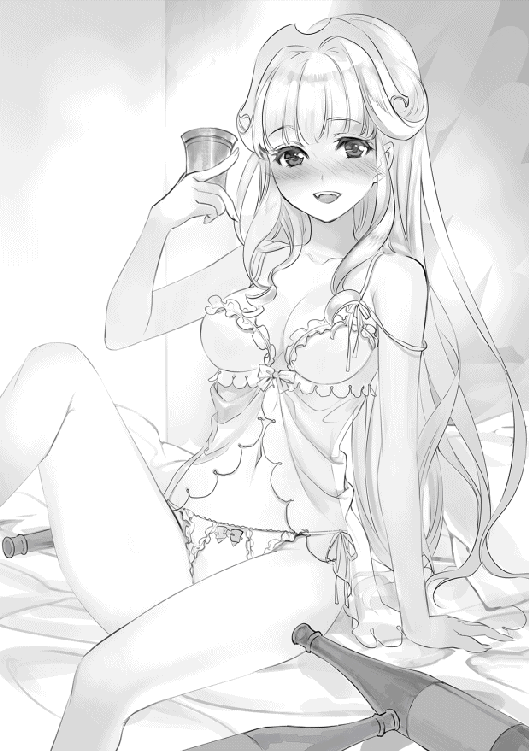
ノイは口いっぱいに綿菓子を頬張って、幸せそうに平らげていく。
──現在、午後を伝える鐘が鳴って少し、十四時くらいだろうか？
適当な路地裏を抜けると、甘い香りを漂わせたワゴンや露店、様々な店が並んでいる場所に出た。
......あれは獣人かな。あっちにはエルフみたいな人もいる。凄いなぁ。本当にここは地球とは違う世界なんだ。
「魔法都市と呼ばれているだけあって、魔法人形が警備しているんだね」
「そうみたいですね！ ノイも初めて見ましたよ！」
馬車が行き交う大通りの十字路では、岩が磁力でくっついて人型になったような生物──魔法人形が立っている。もちろん領主お抱えの騎士や駐屯兵の姿もあるが、その中でも魔法人形の存在は特に異質に映っていた。
「ラーファさんが言ってましたけど、この都市って犯罪率が高いそうですよ」
「ああ、それで魔法人形が警備しているんだ」
魔法人形は主に召還師が扱う儀式魔法の一つで、基本的に護衛として呼び出されることが多い。というのも、四精霊の一人〝土に住まう者〟が力を貸してくれるお陰で、人並みの賢さがあったりするからだ。
殲滅力はそれなりに高く、僕もラーファさんから教わったことがある。緊急時に呼び出すには適しているかもしれないが、魔力消費が高いので一般的にはあまり普及はしていない。
「はわわ、橋がいくつも架かっているんですね！」
ノイが大河へ視線を送ると、大きなアーチ状の橋が、一定間隔を置いていくつも架かっていた。
こういうのを見てしまうと、全ての橋を渡り制覇してみたいと思ってしまうのは僕だけだろうか？ 後で挑戦してみようかな......。
『だ、誰か！ 助けてください！』
その時だった。
観光客を割りながら、乱れた髪も気にせずに一人の少女が叫び走ってくる。
腕の第一関節まで伸ばされた薄群青の髪。その上にはちょこんと犬のような耳がついており、お尻のあたりにはもふもふの尻尾が月のように毛を立たせている。見た感じ、獣人に分類される犬人族のようだ。女の子に犬耳って似合うなぁ......是非とも触ってみたいものだ。
『お願いします！ 魔物が現れました！』
魔物だって？ ......この都市に魔物が攻めてくるのか！
「ま、魔物が現れたそうですよ！ どど、どうしますか!?」
「ああ、行ってみよう！」
魔物が魔法都市に攻め込むとしたら一大事だ。それにこのタイミング──悪魔が仕掛けている可能性もある。不安を握り締めたまま、すぐに少女へと駆け寄った。
「君、今の話は本当かい？」
僕の声に反応して、振り向いた少女と目線が交わる。僕と同じくらいの歳の子だ。
「はい、本当です......ぐずっ......都市のすぐ外に現れたんです......大群が向かってて......」
そんなに近くまで来ていたのか......。話を聞けてよかった。
「任せてください！ 時間くらいは稼いでみせますから！」
「で、でも、誰も、ウチの話を信じてくれないんです......」
子供の嘘だと思っているのか、誰一人として少女に振り返ることはなかった。
「グズッ......山菜を取りに行ってたら......お母さんが......お母さんが......」
「もう大丈夫ですよ！ ノイたちが助けてあげますから」
その言葉が出た時、少女は一瞬だけ目を見開いた。ずっと暗転したままの瞳に一瞬だけ光が宿ったように感じる。
「ほ、本当に......お母さんを助けてくれるんですか......？」
疑うような視線を向けてくる。どうして、そんな目をするんだろうか。
「できるだけのことはさせてもらうよ」
安心させるように、即答する。
──ぁ、と、小さく嗚咽のように漏らした声が震えた。
「......ありがとうございます。でも、ごめんね──」
なっ、なんだ!?
突然、体が背後に倒れた。訳も分からずに尻餅をつく。
「ご主人様、大丈夫ですか!?」
目の前にいたはずの少女は背中を向けたまま、全力で走り去っていく。
......えっ？ もしかして突き飛ばされた？ なんで？ それに確か──。
「あの子、ご主人様に......」
ノイが厳しい視線で少女の背中を睨み、すぐに後を追いかけようとしたが、僕は腕を掴んで行かせなかった。
「別にいいよ。僕のためにありがと」
「むぅ。ご主人様がそう言うなら......」
よかった。渋々、納得してくれたようだ。
でも、魔物が来てるって話だったよな......それなのに、どうして走り去っていくんだ？
『おい、あれ見ろよ』
『ホラ吹きルリアの嘘に騙された奴がいるな』
『今度は魔物か。だんだん姑息になっていくな』
行き交う街中からそんな声が聞こえてきた。
ああ、嘘だったのか。僕は騙されたわけだ。憤りを感じるが、本当に魔物が攻め込んでくるわけじゃなかったようで、そこは安心した。
『あの子も懲りないな』
どうやら嘘の常習犯のようで、住民たちからそれなりに嫌われているらしい。そりゃ嘘ばかり言ってれば孤立していくだろう。
でも......少女の、ルリアという少女の去り際に残した言葉が気になった。
『......ヒーローを信じたら駄目だよ』
自問自答するように呟いていた。
あの子、泣いていたような......？
「次に見かけたら八つ裂きにしちゃいますね！」
「流石に物騒だって。叱るくらいは許可するけどさ」
彼女がどうして嘘をつくのかは分からないけど、これだけの大衆の中から探し出すのは不可能に近い。会ったところで話が成立するとも思えないし、今回の件は忘れるのが一番だろう。
「よし、気を取り直して観光の続きしますかね」
ルリアへの興味もそこで尽きていた。
──ゴーン、リンゴーン。
教会の鐘が反響を繰り返す。午後が訪れたことを伝えてくれる。
そう言えば、朝にパンを食べたままだっけ。
「適当にご飯を食べに行こっか。甘い物も頼んでいいよ」
「ほ、本当ですかっ!? えへっ、喜んでお供させて頂きますっ！」
甘い物と言ったら表情が和らいだ。
ノイは甘い物が大好きなんだけど、食べ過ぎるのでメーティスさんたちから量を調整されていたりする。その小さな体のどこに入るか分からないけど、ケーキなら一ホールは余裕で食べられるんじゃないだろうか。そのくらい甘い物に目がないはずだ。
今日は鬼の監視も届かないので、好きなだけ贅沢をさせてあげてもいいだろう。ほら、女の子が美味しそうに食べる姿って見ていて癒されるしね。
とりあえず、メインストリート沿いに歩いていけばそれらしい店が見つかるだろう。そう思って移動を始めると、
『............離してください』
街角の隅、僕たちから二十メートルほど先に見覚えのある犬耳少女の姿があった。あの子は僕を騙した子だ。ルリアって名前だっけ。偶然とはいえ、世間って意外と狭いなぁ。
「むっ！ あの子、こんなところで見つけましたっ！」
僕を突き飛ばしたことを思い出しているのか、鼻息荒くルリアを睨む。僕の代わりに怒ってくれるのは嬉しいけど、可愛い顔が台無しだ。宥めようと手を伸ばして──止めた。すぐに収まったからだ。
「......様子がおかしいです？」
ん、何がおかしいんだろう？ ノイの視線を辿るように顔を動かすと、ルリアは三人ほどの少年に囲まれているようだった。
「揉めているみたいだね」
数は三人。ルリアが逃げられないようにしているようで、嫌な笑みを浮かべていたように見受けられる。心底から楽しんでいるというか、嘲笑っているように見えなくもない。
『............ひうっ』
ルリアは怯えた表情を手で隠し、様子を窺っている。耳は垂れて、尻尾はピンと張っていた。ああ、嫌な記憶が蘇ってきた。思い出したくない記憶の一つだっけ。
「......虐め、かな」
経験があるから分かる。
あれは学生の頃だ。当時、学校を代表するようなチャラチャラとした男に目を付けられて、様々な嫌がらせを受けた。
陰口を叩かれ、ゴミを投げられる日々。それだけならまだしも、時間をかけてジワジワと精神的に追い詰められるのはかなり堪えた。〝虐め〟は物理的暴力を含んでエスカレートし、カツアゲや足蹴りも毎日のように行われるようになった。
引き取ってくれた叔父さんに相談しても『虐められる方が悪い』という対応だった。
最後の頼みに教師を頼ったが、自分に被害が降りかかることを恐れていた。結局、最後まで手を差し伸べてくれることはなかった。
あの時の自分と、目の前のルリアの姿が重なったのだ。
『......い、今更何よぅ』
『あっ？ うるせえな。黙ってろよホラ吹き』
ホラ吹きか......。
あの子は嘘をついていたことで、虐めの標的に選ばれてしまったのだろう。自業自得とも言えるが、だからといって虐めをしていいという理由にはならない。虐めは弱い者を集団で甚振るから虐めなのであって、正義を振りかざして何をしてもいい、という理由にはならないからだ。
「ご主人様。あの子が連れていかれましたよ！」
男の子たちはルリアの首を掴むように、近くの路地裏へと歩いていく。
マズイ、かもしれない。子供になったから分かるけど、子供は以外と悪知恵が働く。そして手加減を知らない。もしかしたら相手が女の子だから......変なことを要求する可能性だってあるだろう。最悪の場合は殴る蹴るといった暴力を振るうかもしれない。
そう考えたら、体が勝手に動いていた。
「ご、ご主人様？ 助けに行くおつもりなんですか？」
驚いたように瞳を何度か瞬いた。彼女から見れば、僕は自分を騙した子を助けに行くのだから異常に映っているのかもしれない。実際、やってることは異常なんだろうけど。
「......駄目かな？」
「いえ、それでこそご主人様です！ ご一緒させて頂きます！」
ノイが良い子でよかった。
別にルリアに恩があるわけじゃないけど、僕はこの世界を全力で生きるって決めたんだ。お爺ちゃんたちのような優しさを手に入れるためにも、ラーファさんのような立派な賢者になるためにも、僕は自分なりに正しいことをしてみたい。
そう思えるようになったから。
「殺さない程度に手を出すよ。多少はやり過ぎても大丈夫だしね」
「そうですね！ 治癒魔法は万能です！」
拳を握り締めて、路地裏へと急いだ。
建物が幾つもの影と重なって薄暗くなった路地を進んでいくと、先を歩いていた少年たちの声に混じって、ルリアの細い悲鳴が聞こえてきた。
「きゃっ、何をする気なのっ......」
「別に犬畜生に何もしねーよ。まっ、暴れれば綺麗な肌に傷くらいは付くかもな」
「その肌を拝ませてもらいたくて、な？」
「ひぅ......」
少年たちは三下悪役のような台詞を吐きながら、ルリアを壁際へと追い込み、服を捲り上げていく。お腹が晒される。少女の頬は赤く、顔は真っ青に染まっていく。
少年たちはあどけなさが抜けており、ルリアよりも年上に見える。あんな男たちが周囲を囲んでいる状況では、ルリアの恐怖感は半端じゃないはずだ。
あいつら、好き放題やってくれるじゃないか。
「へへ......その貧相な胸を見せてウガァッ!?」
駆けつけ様に足払いをかけて赤髪の少年を転倒させる。僕たちの接近にまったく気づいていなかったようで、少々大げさ気味に転んだ少年は頭を強く打ち、泡を吹いて失神していた。だ、大丈夫だよね、これ？ 治癒魔法でどうにかなるよね？
「なんだお前はっ!?」
黒虎模様の猫耳を持つ少年が叫ぶ。隣には、子供にしては背丈が軽く三メートルは軽く超えている大柄な少年が立っていた。巨人族ってやつかもしれない。
「んー、一応、その子の知り合いになるのかな？」
「......っ!? 貴方は、今朝の......？ な、なんでここに......」
良かった、僕のことは覚えていてくれたらしい。
虚ろな目で僕たちを見ており──信じられない。そんな意思が篭っているように見えた。
「いやー、偶然にも君が連れていかれるのを目撃しちゃってさ」
「今すぐ助けますからねっ！」
追いついたノイも隣で叫ぶ。僕たちが駆けつけたことで少年たちは焦ったのか、急に慌てながら声を荒げた。
「お前らが気絶させた男はな、貴族の息子だぞ！ ど、どうなるか分かってるのか！」
「後で制裁が待ってるぞ！」
戸惑いを見せながら指を差し向けてきた。どうやらお偉いさんの子供だったらしい。二人とも整った身なりをしている。ふむ、これが貴族の息子ってやつなのか。性格の悪さが絵に描いたように滲み出ている。
......困ったな。少年たちは権力を盾に僕たちから逃れたいようだ。二人は一般人。魔物のように魔法で仕留めるわけにはいかない。どうやって話し合うべきか。
「なんだこの黒髪、怖気づいたのか」
「格好つけやがって」
「しかも女に首輪を付けてるぜ」
どうやらノイのことを言ってるらしい。
「むっ、これはノイのお気に入りです！ 笑わないでください！」
「はっ、昼間から変態プレイかよ」
......別に魔法で仕留めても良い気がしてきた。ここはスマートに拳で語らせて頂こう。
「ほぅ。こんな嘘つきのために、僕たちとやる気か？」
「うん。嘘はいけないことだけど、僕は君たちの方が悪に見えるからね」
「......言ったな。身の程を思い知らせてやるよっ！」
少年たちは腰からナイフを取り出し、差し向けてきた。
「......最後の忠告だ。ルリアを解放してくれないか？」
「はぁっ？ どうしておもちゃを解放しなくちゃいけないんだよ」
「うぅ......おもちゃじゃ......ないです......」
ルリアはトーンを下げ、地面を静かに見つめていた。涙目になっている......。
予想はしてたけど、こういう輩に言葉が通じるはずなかった。論理でどうにかなる相手なら、こういった酷い手段は取らないわけで......。
「おもちゃだなんて......訂正してください！」
「はっ、嫌だね」
っ!? びっくりした......人を物扱いしたことで、ノイの怒りが頂点に達したようだ。
「ならノイにも考えがあります！」
鋭い眼光を少年たちに向けたまま、両手を差し向ける。
『──我が友よ 炎の精霊よ 灼熱の裁きを愚かな者共へ──』
詠唱、魔法陣を展開することで赤と青の炎が混ざり合い、虚空から炎の巨人が現れ──。
「って落ち着くんだ！ ここで魔法を使ったら完全に骨も残さないって！」
「うぅ、で、でも！ こんなスライムにも満たない雑魚に虐げられているなんて、あんまりです......」
「なっ、なんだと!? この女、ぶっ殺してやる！」
無自覚な煽りによって少年たちは発狂した。ナイフを握り、低く横へ振り払ってくる。
「ただの一般人が......オレたちは由緒正しき『フィオナ騎士団』に所属する父を持っているんだぞ！」
「へえ、騎士団の息子の割には、無害な一般人にナイフを向けるんだ？ 教育は一般人よりも届いてないみたいだね」
「この野郎......！」
巨人族の少年は悔しそうに歯軋りをさせ、見た目とは裏腹の素早い身のこなしで踏み込み、僕が立っていた場所へと斬撃を放つ。
少年は......いや、こいつは本気で攻撃してきた。
「......無抵抗の人に剣を向けるなよ」
もう、情けは無用だった。
二の太刀が振られるよりも早く、深く踏み込んで掌打を放つ。
「ごぶぅっ──」
手に鋭い衝撃が走る。
反撃を考えていなかったのか、拳が無防備な腹部へとめり込み、胃液をまき散らしながら少年は倒れた。ズゥーン、と重い音が響く。その顔は苦悶。腹部を両手で押さえて、嗚咽だけを漏らしている。
「わ、悪かった......だ、だから、い、いのち、だけは......」
もはや立ち上がる余裕すらもないらしい。情けなく命乞いをしている。......別に命を奪うつもりなんてないけど、内臓に結構なダメージは与えてしまったかもしれない。後で治癒魔法をかけて証拠を隠滅しておくとしよう。
「......へっ？ お、おい......今、何が起きて──」
猫耳が今の光景を見て、漠然と呟いた。
「他人の心配をしてていいんですか？」
奴が呆けている一瞬の隙に、肉薄したノイが魔法陣を展開させる。微弱な魔力粒子が飛び散り、魔法陣の中から異色の魔物──獅子が現れた。
「グルオォン」
「なっ、なんでライオンが......ぎああああああ！」
......この世界にもライオンはいるのか。少年を追いかけるライオンは少年の背に飛びかかり──あ、危ない！ 流石にやり過ぎだ！ そう思った時、パチン、と指を鳴らす音がした。
「ご主人様、終わりましたよ！」
猫耳は二度、三度と腰を抜かしながら、白目を剥いて意識を失った。
......ああ、そっか。今のは幻覚魔法か。子供を相手に本気で魔法を使うはずがないか。ノイならやりかねない、と判断しちゃってごめんね。反省である。
「お疲れ様。さて、それじゃ──」
振り返ると、壁際で膝を曲げて縮こまっている犬耳の少女を見る。震えていた。先ほどまでは気丈に振る舞っていたらしく、奴らが倒れたことで緊張が解けたのか、歯をガチガチと鳴らしている。
「ルリアさん、でしたよね？ もう大丈夫ですよ！」
トコトコと近寄り、怯えたルリアを安心させるように手を差し出した。最初は警戒していた様子だったけど、何度も笑顔を差し向けるノイを信用したのか、すぐにその手を握り返してくれた。
「......ありがと。で、でもどうしてウチの名前を知ってるの......？」
「あーうん。君は有名みたいだからね」
「ぁ......そう、だよね」
すぐに暗い表情を浮かべる。嘘つきと呼ばれていることに自覚はあるようだった。気まずい空気が流れ始めたので、空気を変えるべく僕とノイは自己紹介を始めた。浮遊都市から来ましたとは言えないので、別大陸から来た旅行者という設定にした。
それでもルリアは不安そうだった。
まぁ、直前まで貞操が危なかったのだから無理もない。どうして嘘をついたのか聞きたかったけど、もう十分に怖い目は見ただろう。このまま放置しておくのも気が引けるし、今はルリアを安心させてあげるべきか。その後も雑談を続けて、将来は立派な賢者様を目指しているってことを伝えると、ルリアの表情は明るいものへと変わった。
「ウチ、魔法使いを目指しているんだ」
「ほえ、でしたらなれますよっ！ 努力は必ず身に着きます！」
「そうかな？ ウチは字の読み書きもできないから......魔法を覚えるにはお金も時間もかかるし......」
そこまで言われて気づいたけど、ルリアの服装はどことなく貧相だった。僕は気にしないけど、ツギハギだらけの服は、年頃の子だったら近寄るのも躊躇うかもしれない。
そう言えば、ラーファさんが授業で言ってたっけ。
『地上は貧困が激しいです。文字の読み書きができるだけでも、お仕事には困りませんよ」
そう言えば、僕もスラムに捨てられたんだっけ。義務教育のようなシステムはこの世界に浸透していないみたいだし、野菜とか果物とかを買う時も値札が並んでいない。大抵は口頭で尋ねてる。
今まで違和感を抱いていなかったけど、僕はお爺ちゃんたちから読み書きを教えてもらっていた。神様に拾われたって時点でアレだけど、かなり恵まれた環境にいたらしい。この世界で立派な魔法使いになりたいなら、かなりの額の投資が必要になるようだ。
「──痛てて、あの野郎......次に合ったら絶対やり返してやる......」
そこで、最初に伸びた赤髪の少年が意識を取り戻した。声の方へ視線を向けると、赤髪も偶然僕を見た。
一瞬、緊迫した空気が走る。
数秒後、赤髪は予想外の行動に出た。
「ああああああ！ ご、ごめんなさい！ もうしません！ 許してください！」
さっきと言ってることが違う！
情けなく悲鳴を上げ、プライドを捨てて土下座を行い、おでこを石畳へ押し付ける。どうやら先ほど殴られたことで恐怖心が芽生えてしまったようだ。
「......謝るのは僕じゃなくて、ルリアにじゃないのかな？」
「その通りでございます！ ルリア様、今まで散々な嫌がらせをして申し訳ありませんでした！」
今まで散々......？ 今日が初めてじゃなかったのか。
『──鎖よ』
熱心な教育によって丸くなった赤髪は、ノイが唱えた魔法によって七匹の大蛇によって体を束縛される。やり過ぎかとも思ったが、そこで気づいた。ルリアが震えていた。それに一早く気づいたノイが、安心させるために魔法を詠唱してくれたらしい。
ルリアは自分が何をされそうになったのか、恐らく理解していると思う。だから、体を守るように抱き抱え、恐怖を押し殺した不自然な笑顔を浮かべていた。
ノイが指を動かして、大蛇を顔へと近づける。
「やめてくれええ！ 逃げないから、消してくれえええ！」
大蛇が体を這う感触が恐ろしいのか、簀巻き状態にされた赤髪は泣いていた。僕も同じ状況だったら泣いて失禁してたかもしれない。便利だけど怖い魔法だ。
「もう大丈夫だよ。赤髪は君を襲えないから」
「うっ......あり、がど......ありが、ど......」
大きな琥珀色の瞳から、ぽろぽろと涙が零れていく。こういう時、さりげなく抱きしめてあげられるといいんだろうけど......度胸のない僕はルリアの手を優しく握り締めた。
「大丈夫だよ、大丈夫だから」
落ち着きを取り戻すまで、少しの時間がかかる。
ルリアは恨み言を呟きながら睨みつけていた。徐々に嗚咽が小さくなり、癇癪も収まってきたところで、再び赤髪へと視線を戻した。
「で、どうしてルリアを虐めたんだ？」
僕の中では、虐めっていうのは絶対にしてはいけない行為だと思ってる。僕自身が虐められていた過去があるからかもしれないが、わざわざ虐めなくても他に手段だってあるはずだ。その中で虐めという選択を選んだのは卑劣なことで、上下関係を強要する行為に過ぎない。
僕は虐められる側に問題があっても虐められるのが仕方ないとは思わない。気に入らないから、ムカつくから人としての尊厳を傷つける輩は、最低のクズだ。
もちろん『嘘つき』になったことで、ルリアを助けてくれる人が減ったのは間違いのない事実なのだが......これはルリアにも謝らせるべきだろう。
「い、言いたくない......」
「蛇さん、顔まで責めてどうぞ」
「ひぃ!? や、止め、止めてくれ！ わ、分かりました！ お話ししますから！ 消してください！」
ノイの脅しによって、すっかりおとなしくなったようだ。顔から蛇を離してもらい、僕はルリアを隠すように前へ出た。
「......アの......き......たんだよ」
「よく聞こえないですけど」
「......っ！ ルリアのことが、昔から好きだったんだよ！」
........................わっと？ なんだって？ 誰が誰を好き？ あんなに虐めてたのに？
「だ、だから意地悪して近づきたくて、それで今日までずっと──」
好きな女の子に嫌がらせしたいっていうアレか......気持ちは分からないけど、どうしてルリアを襲っていたのかは分かった。分かったけど、服を脱がそうとしてたよな、こいつ......最低じゃないか。許す許さないの判断はルリア次第だけど、僕的にはこういう輩は懲らしめた方がいいと思う。
だから、ルリアの答えを待つことにし──。
「──なら、どうしてお母さんを見殺しにしたの!? 冒険者だからでしょ!?」
唐突な、搾り出したような悲鳴に驚いた。
えっ......お母さんを見殺しにした......？ どういう、ことだ？
「ウチは貧乏だから、お父さんもお母さんも一生懸命に働いてた。それがあの日、魔物の大群がこの都市を襲ってきたあの日──騎士団は、君のお父さんは何をしてたのよっ!?」
今度は赤髪の顔が青くなった。少年の父がルリアの母を見殺しにしたってことか？
「ウチ、知ってるよ。この耳で聞いたもん！ この都市の人なら誰だって知ってる！」
叫ぶように、張り詰めた何かを爆発させる。溢れる気持ちが止まらないようだった。
『民から信頼を受ける冒険者共が目障りだ』
それが、団長の言葉。
「お母さんは冒険者として、みんなを守るために命を賭けた！ お陰で沢山の人が助かった。多くの犠牲は出たけど、この都市は救われた。でも、でもお母さんは......お母ざんば......ヒッグ......うわああああん............」
ルリアは救われなかったんだ......。だから、母親を助けてくれなかった騎士団を恨んだ。
「馬鹿なのはウチだって悟ったよ！ この世界に正義のヒーローなんていないんだって！ それなら、自分にできる方法で騎士団を困らせてやろうと思ったんだ！」
それが、嘘つき。少女が考えた世間への復讐方法。
『魔物が現れたんです！』
あの言葉は、母親が亡くなった状況を再現していたのかもしれない。
「騎士団は、冒険者が半壊するのを待ってたんでしょう？」
「そ、それは......」
この世界は魔物が蔓延っているお陰で、封建的になっている。必然的に、住民たちは自分たちを守ってくれる『騎士』や『兵士』の扱いを、それなりに良くせざるを得なかった。
──命を守ってやっているんだから、お前らも僕たちに貢献しろ。
そんな命令があれば聞くしかない。だって騎士や兵士に守ってもらえなかったら、魔物たちに殺されるのは自分たちだから、必然的に騎士の言葉は絶対なものになる。非常に理不尽だけど、それがまかり通るのが封建社会の弊害とも言える。
ルリアはただ、自分の母親を助けて欲しかった。返して欲しかっただけなんだ。方法が間違っていたのは確かだけど、その気持ちは分かる。分かるけど、こんなのって......。
「......もう、ウチの前に姿を見せないで。次は君を......本気で殴るかもしれないから」
そう言い残して、ルリアは走り去ろうとした。
「ルリア......」
「あ、あの、その......」
なんて声をかければいいんだろ......言葉が出てこない......。
「......ラティ、ノイ。ウチなんかを助けてくれて本当にありがとう。凄く嬉しかったよ。できればまた会いたいな。魔法使いのお話、沢山聞かせてね」
振り返った少女は虚ろで、どこか儚げだった。
「バイバイ。元気でね」
僕たちは何も言えず、ただルリアの背中を見送ることしかできなかった。
こんなにも世界が腐っていたことを、今日、初めて思い知った......。
気がついたら部屋の中にいた。
そうだ、あの後は観光する気分じゃなくなって、宿まで戻ってきたんだっけ。そのまま寝ていたようで、すでに薄暗くなっていた。
「──悪魔の被害は、観光客を中心に広がっているようです」
「あぅ、そんなに拡大しているんですか......」
窓際に設置されたテーブルの周囲には、ラーファさんとノイが座っていた。二人の頭上には淡い光を点す光球が浮いている。
どうやら僕を起こさないように配慮してくれたらしい。こういう気遣いが嬉しくなる。
「でも、観光客さんは沢山訪れてましたよっ」
「情報の規制をしているようです。悪魔が身近に潜んでいるってことが判明すれば、都市全域に混乱を招き、収益は悪化──悪魔を討伐するまでは経済的にも大きなダメージを負うことになるでしょうね。それに、人々が混乱すれば悪魔の思う壺です。負の感情を餌に成長していくでしょうから」
住民の安全は二の次なんだ......。
「それなら、悪魔の討伐には向かわないんですか？」
「討伐は考えているそうですが、戦力が圧倒的に足りないようですよ。主戦力を悪魔に向ければ、魔法都市の警備がザルになる。それに、人族は魔力も弱く成長も殆どできません。一流と呼ばれる戦士が十人集まったとしても、悪魔の魔法を前にしたら何もできないでしょうから、打つ手がないんでしょうね」
戦力か。
ルリアのお母さんは冒険者として都市を守るために、命を賭けて魔物と戦い、そして散っていった。騎士団はすぐに助けに向かわず、魔物が攻め込む状況を利用して、自分たちの立場を向上させようと企んだ。
これじゃ、魔物も騎士団も、やっていることは同じじゃないか......自分たちの利益のために誰かを犠牲にしていいなんて、そんなの間違ってるよ......。
「生き延びた人たちの目撃情報に寄れば、悪魔は赤き鳥、又は炎の鷹の姿で襲ってきたそうです。放つ魔法はどれも致命傷に近く、他の者は即死に近い状態で亡くなっていたそうですよ」
「そんな......酷いです......」
悪魔はそれだけ凶暴ということになる。
「お陰で悪魔の正体に見当は付きましたけどね」
そう言って、ラーファさんは月を見上げた。ここからじゃ顔は見えないけど、ラーファさんが月を見上げている時はいつも、苦しい時だったと思う。
「──悪魔フェニックス。私たちの戦うべき相手となります」
フェニックスだって？ その名前は良く知っている。
有名大作ゲームを始め多くの創作物に登場する不死鳥の異名を持つ鳥だ。転生の炎やらで味方を守り、物語終盤では戦局を覆すほどの能力を持っていることが多い。
フェニックスって聖なる鳥のイメージがあったけど、この世界では悪魔として動いているのか。
「あ、文献で読んだことがあります！ 無限の命を持って転生を繰り返し、何度でも復活する伝説の悪魔ですね！」
「はい、正解です」
どうやら、僕の知っているフェニックスに間違いないらしい。そこまで聞いて、僕は半身を起こした。
「そんなに凄い奴が相手なんですか......」
「あら、おそようございます」
「......こんばんはございます」
鈍くなった体をぐっと伸ばし、ラーファさんたちの方へ向けた。
「ラティさん、残念なお知らせなんですけど」
「......はい」
「私たちに協力してくださる冒険者ですが、二人しか志願してくださいませんでした」
「ふ、二人ですか!?」
「依頼が依頼ですからね。皆さん、敬遠しているようです」
これで僕たちを含めても、実質五人での戦いになる。勝気は薄かった。
「私たちの手に余る悪魔ですからね。今回は他の天使が応援に来るのを待ってから行動した方がいいでしょう。ですが、その間にも刻一刻と状況は悪化していきます。なので、私は明日、協力してくださった冒険者さんと一緒に下見に行く予定です」
「ちょ、ちょっと待って下さい。二人で大丈夫なんですか？ それなら僕も──」
下手をすれば悪魔と遭遇する可能性がある。危険だ。
そう思ったからこそ身を乗り出したけど、ラーファさんの人差し指で唇を押さえられた。
「心配しないでください。私だって自殺願望があるわけじゃありませんから、地形を調べるだけですよ。他の天使が合流次第、本格的に討伐を行う予定ですから」
天使族の悪魔殲滅の討伐って、こんなに危ないのか......。
林檎の楽園でアルゴスと戦った時とは違い、悪魔との戦いは命を賭けることになるだろう。その覚悟がないわけじゃないけど......怖くないと言えば嘘になる。ラーファさんを守るって決めたから逃げるつもりはないけれど、僕の魔力は悪魔に通じるんだろうか......。
「少人数の方が動きやすいですから、明日の偵察は二人とも待機していてください。それに......ラティさんもノイさんも、疲れた顔をしていますよ。何か辛いことでもあったんですか？ 私で良ければお聞きしますけど？」
しまった、ルリアの件が顔に出ていたらしい。ノイも慌てて僕を見てくるけど、確かに疲れたような表情をしていた。でも、その目は強いままだ。
......彼女だって頑張ってるんだから、僕も多少は無理をしないとな。どうしてこんなに心が弱いのか、我ながら情けなくなってくる。弱いままだなぁ、僕は......。
「......いえ、大丈夫です。むしろ、ラーファさんも疲れた顔をしていますけど」
「あら、ばれました？ あの領主、私のお尻を触ってきたので壁に魔法を撃ち込んだんですよ。それからは大人しくしてくれましたけど、今思い出してもイライラします」
そんな大それたことをしてきたのか。ラーファさんらしくて思わず噴き出してしまった。
「ほえ、領主様にそんなことしても大丈夫なのですか？」
「賢者って肩書きは便利なんですよ？ 王都がバックに付いてるので問題ありません」
そういうものなんだ......。
「そうでした。もし余裕があったら明日は買い出しを頼んでもいいですか？」
「ええ、構わないですけど」
「ふふ、良かったです。少し切らしているものがありますので、こちらの紙に書いておきましたから、適当に買い揃えてくださいな」
となると、明日も僕は街を歩くことになるか。すぐに悪魔討伐だと思ってたからなんだか空振りするけど......、僕にできることは頑張らないと。ラーファさんだって疲れているはずだしね。
「どんなお買い物内容なんですか？」
「えっと──」
受け取った紙を覗き込むノイに急かされるように、購入する商品を見た。
『女性用ガーターベルト 及び 下着。ティル・ナ・ノーグ産ワイン五本』
紙を破り捨て、ゴミ箱へ放り込んだ。
買えるか、こんなものっ！
翌日正午、街中にて。
「ありがとうございましたー」
ラーファさんから頼まれた下着を購入した。
「結局、買ってしまいましたね！」
「うぅ......どうしてこんなことに......」
こういう買い物は初めてだけど、女性客からの視線が辛かった......。
『あの人、じっくり調べてるわよ』
『何に使う気なのかしら』
どこの世界も女性用の下着を購入するのは、それなりに勇気がいる行動だと思う。本当は僕だって下着だけは断りたかったさ、でも──。
『お願いしまず！ 時間がなくて間に合わないんですよ！ 明日、明日だけで良いので代理で購入してきてくだざい！』
と、最後は泣きながら床の上でヤダヤダと駄々をこねられては、僕としても引き受けざるを得なかった。恐らくお酒が入っていたんだと思うけど......アルコールが入るとだらしなさに磨きがかかるなぁ......。あんなに清楚だったラーファさんはどこへ消えてしまったのか。きっとそれだけ距離が近づいたってことなんだろうけどさ。
まぁ、後は銘酒のワインを購入すれば終わりなので、これ以上の面倒事はないだろう。
「......ノイ、ごめん」
「......いえ、ご主人様のせいじゃありません」
それよりもどうにかしなければいけないことがある。
「迷子になるとは計算外だった......」
この魔法都市、大河の上に建っている上に、土地開発に失敗したらしく道が複雑に絡み合っており、似たような景色がどこまでも続いている。見ている分には楽しいけど、これでは今どの辺にいるのかも分からない。しかも、ラーファさんが頼んだ銘酒は一部の店にしか卸されてないようで、その店の場所もよく分からないときた。宿に帰りたくても帰ることができないし......どうしよう。
「はぅ......ノイがしっかりと地形を把握してればよかったのですが......」
「いやいや、ノイが悪いわけじゃないからね」
潮の匂いが強くなっているので、港の方へ近づいているんだと思うけど......どうするべきか。誰かに道を尋ねるべきなんだろうけど、上手く話ができるだろうか？ なんだか怖そうな風格の人も多いし決心がつかない。
......こんな時、誰かが救いの手を差し伸べてくれると助かるんだけど、世の中はそんなに上手くいくはずないんだよねぇ......。
「あれ、二人とも！ また会ったね！」
「ふぁ、ルリアさぁん！」
......上手くいくものだなぁ。
僕たちのすぐ横、小さな売店の窓から身を乗り出す犬耳の少女──ルリアの姿があった。二度あることは三度あるっていうけど、出会いについても当てはまるらしい。
助かった。
「えっと、何してたの？」
「見て分からないかな？ 働いてるんだよ」
「え、その歳で？」
「うん。普通だよ？ この都市では十歳を迎えたら皆が働くもん」
そうなのか、いや、そうなんだろう。
街中では僕と大差ない子供たちが働いている姿があった。きっと、この世界では子供も大人のように働くことが当然になっているんだろう。
待てよ。そう考えると僕って遊び人なんだろうか？ 皆が汗水流している間に街をブラブラしてるだけなんだけど......。
「......ルリア、この後は時間取れる？」
「んー、ウチはお昼前までだから、もう終わりかな？」
よし、運が向いてきた！
「お願いします！ 銘酒が売っている店まで案内してください！ 用意しておかないと、良い歳なのに拗ねる女性がいるんです！ また絡まれるんです！ 助けてください！」
プライドなんて捨ててやる。ラーファさんにネチネチと姑のように文句を言われるのに比べたら全然マシだ。
「え、ええ？ よく分からないけど構わないよ。ウチでお手伝いできることだし」
良かった......。昨日、少し顔を合わせただけだから断られるかと思ってた。
「銘酒が売っている場所は遠いよ？ こことは反対側の城門側だから、歩くと二時間はかかるかも」
「うぇ、そんなに遠いんですか......」
「おっと、大丈夫？」
「は、はい。頑張ります！」
ノイの足はすでに限界のようだった。朝から歩きっぱなしだったから疲労が溜まっているんだろう。少し無理させちゃったかな？ こうなったら人目は気になるけどノイを背負っていくしか──。
「それなら、波の乙女に乗っていったら？」
「えっ？」
波の乙女って、あの蒸気機関車型の魔力で動くやつだよね？
「ウチも帰りに使ってるんだけど、波の乙女は魔法都市をグルリと回ってるの。歩いて行き来するのは大変だから、皆使ってるよ？」
つまり、僕は馬鹿正直に歩いていたということになる。なんてことだ。
考えたらそうだよね。これだけ人がいるのに、交通手段がないなんて考えられないし......馬車とかあったんだから、それを使えば良かったんだ。どうも僕は前世の感覚で物事を考えてしまうようで、馬車やらの交通機関を忘れがちだ。
「......波の乙女で行きます！」
それに、ノイも歩かなくていいって分かったからか、目が輝いている。
「決まりだね」
「そうだね、波の乙女で行ってみようかな」
「うんうん。じゃ、ウチも着替えてくるからもうちょっと待っててね」
「はい！ ルリアさん、色々と教えてくれてありがとうございます！」
ルリアは背を向けたまま手を振ると、店内へと戻っていった。
昨日の別れ際に見せた暗い表情と違って、今日は何食わぬ顔をしている。もう、落ち着いたのかな？ ......って落ち着くわけないか。
「元気そうでよかったです」
「......そだね」
本当は悲しい気持ちが強いと思う。だけど、それを表に出さないように頑張っている気がした。ルリアにはそんな強さがある。だって、お母さんの件があってからはずっと寂しい日々を送っていたはずだ。
よし！ 今日くらいは寂しさを忘れられるように、たっぷりと楽しんでもらわないと！
「むぅ、ご主人様がやる気満々です」
「うん？ まぁ可愛い女の子と一緒だしね」
「......それならノイにもときめいてくれても......」
「ノイ？」
「な、なんでもないですっ！」
明らかに不満そうな表情だし、何が不満か聞こえたんだけど。
はぁ......慣れてないけど仕方ないか。
「ノイも可愛いよ」
「はうっ!? ストレートに言われると、えへへ。嬉しいですっ！」
女の子との付き合いって難しいなぁ。
‡
ミュムリンク大河を駆ける波の乙女は、まさに浪漫だった。
「はぅ、結構揺れますけど速いですね！」
決して乗り心地は良いとは言えないが、徒歩で歩くのに比べれば断然マシである。各駅へ止まるたびに鉄の擦れるブレーキ音が反響し、出発する時には『ぼ〜〜』っと間延びした汽笛が郷愁感をかき立てる。久しぶりの感覚に、不思議と涙が出てきた。
「ご主人様、ご気分が優れないのですか？」
「そうなの？ 大丈夫？」
すると、ノイたちが心配そうに見上げてきた。心配してくれたらしい。
「大丈夫だよ、懐かしい記憶を思い出してね」
「ほえ、だったら良かったです！」
......こんな風に女の子から心配されたことってないから、なんだか新鮮だ。それ以前に男友達もいなかったから、心配されたこともなかったけど......。
「あー！ ノイたちが初日に渡った橋ですよ！」
「へー、どれどれ？」
椅子に両膝をついて、窓から外を眺めるルリアたち。間に挟まれる僕も景色を覗き込むと、アインブリッジを通り抜けてすぐ、次の橋を潜り抜けようとしていた。
「この都市には色々著名な建築物もあるよ。黄金の家や美術館、運命の三女神様を祭ったラケシス・アトロポス・クロートー教会や、フォルトゥナ大聖堂もあるし」
「へえ、やっぱり女神様は信仰されているんだね」
「当然だよ？ 運命の三女神様は私たちを見守ってくれるもん」
やっぱり人族の間で三女神は特別な扱いを受けているようだ。残念ながら窓からの景色だと紹介してくれた建物はどれも一瞬しか見えなかったけど、時間が余ったら自分の足で見てみたいところ。
でも時間の流れは早く、波の乙女は目的の駅へと向かっていく。
「もう着いちゃうんですか......！ あっという間でした！」
「あはは、喜んでもらえたみたいでよかったよ」
お陰でこの世界でも科学の技術が若干進んでいることが分かった。魔力列車があるのなら、他にも地球の文明に似たものが見られるかもしれない。
『おい、聞いたか？』
『ああ、もちろんだ......悪魔討伐の噂だろう？』
『魔法都市ティルナノーグの近くに一匹いるらしいな』
ピクリと体が反応した。
悪魔についての情報は規制されているはずなのに、もうここまで噂になっているのか。
『だがよ、悪魔はフィオナ騎士団だって手が出せないんだろう？ どうやって討伐するつもりなんだよ』
『さあな。悪魔が魔物を統制しているって噂もあるし、物騒になっちまったもんだ』
僕たちが魔法都市を訪れる以前、この都市には魔物たちが攻め込んできたと言っていた。
そして、今回の悪魔出現の話──偶然なんだろうか。
幸いにも、ルリアには話が聞こえていないようだった。ノイと楽しそうに外を眺めているけど......なんでだろう。今の言葉が凄く引っかかる。何か重大なことを見落としているような......そんな気がした。
『まもなく停車いたします。お忘れ物のないようにご注意を──』
「おっと、降りるか」
「はい、そうですね！」
「足元には気をつけてね」
その心配も、すぐにアナウンスによって消されてしまった。
‡
「波の乙女って凄いですね！ 楽しかったです！」
「えへ、そう言ってもらえて良かった。もし他にも見たい場所があれば案内す──」
「ル、ルリアちゃん！ 大変だよ！」
駅を出てすぐに、ルリアを呼ぶ野太い声が上がった。な、なんだ？
「あれ、リセ叔父さん？」
どうやら身内らしい。犬耳じゃないけど、大きな盾を背負って腰には長剣を下げている。革鎧を着込んでいることから察するに冒険者のようだ。
血相を変えてどうしたんだろう？
「リセ叔父さん、また女性に振られたの？」
「違うよ！ そんな暢気な場合じゃないんだよ！ 落ち着いて聞いて欲しいんだけどね」
クスクスと笑うルリアを怒らず、代わりにその小さな肩を優しく掴んだ。僕には分かった。この様子はただ事じゃない。
「ど、どうしたの叔父さん？」
真剣なリセ叔父さんの様子から、ルリアもやっと悟ったらしい。叔父さんは何度も口を開きかけては閉じるを繰り返し......意を決した表情で言葉を紡ぐ。
「──お父さんが、燃える鷹と魔物たちに襲われた」
「なっ!?」
ノイと声が被った。
燃える鷹ってラーファさんが言っていた悪魔だ。確か、悪魔を目撃した人たちの証言で、今日は悪魔の存在を確かめるためにラーファさんが偵察に向かっているはず......擦れ違った？
「──えっ？」
ルリアの表情はみるみる内に青くなっていく。
楽しかった時間はガラスが割れるかのように砕けていき、少女は力なく膝を付いた。
「あ、はは、嘘なんだよね？ 人が悪いなぁ、叔父さん......嫌いになっちゃうよ......」
叔父さんは、ルリアを見つめ続けている。目にはうっすらと涙が浮かんでいる。それは、嘘じゃないことを証明していた。
「だって......だって今朝まで、元気に出かけてたんだよ......？」
「ボクも会ってるから知ってるよ。タイミングが悪かったんだ。命からがら逃げてきた冒険者が全てを教えてくれた」
静かに、それでいてしっかりと用件を伝えていく。でも、要領を得ない。
「グリフレットさんは、君のお父さんは実力者だよ。すぐに命を落とすことはないから、すぐに援軍を送れば間に合うはずだから！」
ルリアを強く抱きしめて、言葉を浴びせ続ける。でも、叔父さんの肩は震えてる......。
恐らく、今の言葉は嘘なんだ。本当の真意は、覚悟して欲しいってことだと思う。
どうして、こんなことに......。
「ま......間に合うはず、ないよ......き、騎士団は？ フィオナ騎士団は、どうしたの？」
涙声で、ルリアはどうにか自分を保っていた。縋るように尋ねる。
「............別任務につき、討伐は見送るそうだ」
......騎士団はここまで腐ってるのかっ！
「い、嫌！ 嘘だよ！ お父さん！ お父さぁん！」
「ル、ルリアちゃん、落ち着いて！ 今回は賢者様も一緒みたいだから！」
賢者様......だって？
「ま、まさか依頼者ってラーファって名前じゃないですか？」
「っ!? な、なんでそれを......」
なんてことだ。ラーファさんが雇った冒険者ってルリアの父親のことだったのか！ ってことは二人の命が危ない！
「ルリアさん！」
「あ──」
叔父さんとノイがルリアを押さえつけようとするが、振り払って走り出す。まさか、お父さんの元までいくつもりか!? 今のルリアは一人にしておけない、すぐに追わないと！
「誰かお父さんを助けてください！ 魔物が、魔物がお父さんを！」
街中を必死に走り、助けを求めて叫び続ける。でも、誰も振り向かない。
『また嘘つき娘かよ』
『どうせまた騙そうとしてるんでしょう？』
『今度は実の父親を持ち出すとか、何考えているんだろうな』
嘲笑う声だけが聞こえてきた。今まで、母の仇を取ろうとして行った行動が仇となって返ってきたのだ。まるで狼少年のように......いや、それがなくても、誰一人助けには向かわないだろう。だって相手はフェニックスだ。悪魔の鳥だ。人族が集まったところで勝てるはずがなかった。
「なんだこの騒ぎは！」
そこへ、喧騒を聞きつけた騎士団の男が一人駆けつけた。
「フィ、フィオナ騎士団様！ お願いします、お父さんを助けてください！ ウチは、ウチはなんでもしますから......なんでも、しますから......』
ルリアは騎士を見つけると、縋るように駆け寄る。涙を流し、何度も、何度も頭を下げて懇願している。
「お前は、アイリーンの娘か」
騎士団の男──剣と盾を紋章に刻み込んだ男は、ルリアを知っているらしい。馬を降りるためか足を僅かに動かして──ルリアを蹴飛ばした。
「あうっ!?」
「ル、ルリア！」
ごろごろと地面を転がって、お腹を押さえたまま動かない。
......何が起きたんだ？ 今、騎士がルリアを蹴り飛ばした？ 金属靴を履いた足で蹴ったら、ルリアのお腹は──は、はやく治癒魔法をかけないと......！
「──ゴミでも蹴り飛ばしたか？」
こいつ自分が何をしたのか分かってるはずなのに、満足気に言った！
「お願い、します......お父さんを、助けて、ください......」
「ルリ、ア......？」
痛いはずなのに。動くのも辛いはずなのに......まだ、治癒魔法はまだ唱え終わってないんだよ......。それなのに、どうしてルリアは、這って騎士団を頼るんだよ......。
「フィオナ騎士団の、方々しか助けられないんです......」
お父さんを守りたいっていう想い。
「必ず、必ずお礼はしますから、お父さんを、助けてください──」
それが少女を動かした。
「うるせえな！」
でも、一喝。ルリアへ槍を向ける。
『なあ、あの子って母親を亡くした奴じゃ......』
『騎士団に逆らえば、処刑されてしまうからな』
『それが、この魔法都市ですからね......』
腐ってる......本気で腐ってる！ どうして助けを求めている少女に、誰も手を差し伸べないんだよ......！
「聞け、娘よ。フィオナ騎士団は大いなる正義のために動いている。お前みたいな犬畜生の親父が一人亡くなったくらいで喚くな」
そう言って唾を吐きかけた。
「うぅ......あぁ......あああああああ！ あああああああああッ！」
ルリアは声にならない涙を散らしてその場に崩れる。
そのまま、呆然と空を仰いでいた。
「どうしで......騎士様はぁ......弱い人を守ってくれるって......グズッ......」
「それ以上喚くな。大儀の前にはお前の親父がくたばろうがどうだっていいんだよ」
時間が止まった気がした。いや、気じゃない。ルリアの時間は確かにそこで止まった。
『こうなると思ったぜ』
『騎士様に汚い手で触るからよ』
『自業自得、だな』
人事のように、多くの人がルリアを嘲笑う。なんだよ、この状況......まるでルリアを傷つけることを楽しんでいるようじゃないか......。
「......あはは......やっぱりだ。この世界に神様はいないのかな......。どうして、ウチから大切な人を奪うのかな......そこまでウチを、虐め足りないのかな......」
虚ろな目で僕を見たルリアは、笑っていた。
大粒の涙は頬を伝い、地面へと染みを広げていく。
「......この世界に......グスッ......ヒーローなんて、いないんだよ......弱い人は、ずっと弱いまま............誰を頼れば、いいんだろうね......誰か......お父さんを、助けてよっ！」
ルリアの願いを聞いた瞬間、僕の中で何かが煮えたぎった。
「......お前ら、聞け！ 確かに彼女は嘘をついてきた！ でも、それは人を騙す狡猾な貪欲さじゃない！ 母親を見捨ててきたフィオナ騎士団と、今も『自分たちは関係ない』って顔で笑ってるお前たちを困らせるためやったんだよ！」
「ら、ラティ......」
なんだよ、こいつら！
普段は騎士団の悪口を言っているくせに、自分たちに害が降りかかる前に、見せしめとなる『笑いもの』が現れたら騎士団の肩を持つのかよ。
見ていて気分が悪い。強き者が弱き者を暴力でねじ伏せる汚いやり方が、気に食わない。
ああ、どうしてこんなに腹が立つのか分からないさ。分からないけど、この世界ではこれが正義の構図だっていうのか。ふざけんな。
「ちょっと騎士様、待ってもらえます？」
「なんだお前、黒髪風情が調子に乗ってるんじゃ──グアッ!?」
もう言葉はいらなかった。
僕は気づいたら、あのクズを本気で殴り飛ばしていたから。
『お、おいアイツ何してんだよ！』
『フィオナ騎士団に手を出して、どうなるか分かってんのかよ!?』
『僕知らない、知らないぞ！』
クズはゴム玉のように弾み、痙攣したまま動かない。ざまぁみろ。
「ルリア、もう大丈夫だよ」
折角の可愛い顔が涙と鼻水で台無しになっている。ハンカチで拭いてあげた。
「......ラティ」
治癒魔法をかけて、騎士団の男が乗ってきた馬へルリアを担ぐ。
「......君が世界を信じられなくなった理由は、痛いほど分かったよ」
僕も同じ立場だったらこの世界を恨んでいたに違いない。
でも、僕は前世で虐められて育ってきた。お陰で君の立場で世界を見ることができたよ。まさか、虐められた記憶がこんな形でルリアを助けるなんて、思わなかったけどね。
彼女が望んでいる言葉は分かっている。だからさ──。
「──僕が君のお父さんを救ってみせる」
子供の頃、ファンタジーな世界に憧れていた。でも、それは同時にファンタジーな世界で『勇者』として、剣と魔法で世界を救いたいと思ったのが始まりだったんだ。我ながら子供である。
今でもその想いと情熱を忘れてないなんて、本当に子供である。
子供でよかった。クズになるなら、子供のままでいい。
「お父さんを助けにいくよ。道案内を頼みたいんだけど」
希望を失った瞳に光が宿った気がした。再び暗闇に落ちるも、僕を信じようと何度も、何度も、何度だって光を灯そうとしてくれる。
『あいつ、頭がおかしいんじゃないのか!?』
誰かがそう言った。ああ、僕は頭がおかしいんだろう。どうして自分から、命を張るような行動を取ろうとするんだろうな。馬鹿だ。世界一の馬鹿だ。馬鹿だけど、それが僕の信じた正義なら、馬鹿にされたっていい。
「ご主人様、待ってください！ ノイも、ノイもご一緒します！」
「来てくれると信じてたよ。さ、行こう」
ルリアを前に、ノイを後ろに乗せて手綱を握る。
「僕たちは燃える鷹の居場所を知らないんだ。教えて欲しい」
光を失ったルリアに、強く言葉を投げかける。
「北の、霊脈山にいるよ」
やっと答えてくれた。
「ラティ......あり、がと」
「まだお礼を言う必要はないさ」
馬の腹を蹴り、人波を掻き分けて突き進む。
それに、ルリアのお父さんだけじゃない。今もラーファさんが危ないはずだ。
僕はあの日に誓ったんだ。僕は自分の正義に従って、僕の大事な人たちを命がけで守ってみせるって。
怖いさ。怖いけど、僕はお爺ちゃんたちから沢山の生きる術を学んできた。それは全て自分の糧となり、こうして誰かを助けることができるようになった。
「ここが正念場か」
絶対に二人を守ってみせる。
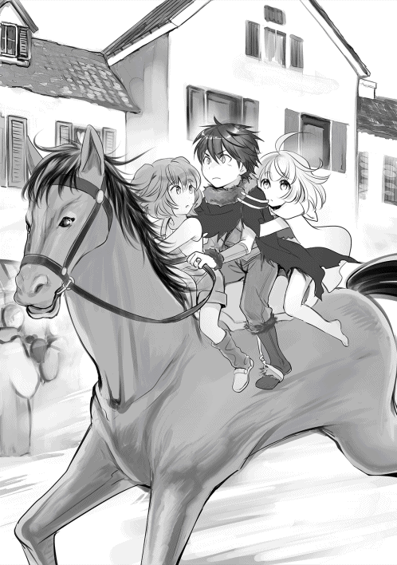
「賢者様、大丈夫かい......？」
「ごほごほっ......ど、どうにか、生きてますよ......」
霊脈山に向かったラーファによって予想外だったのは、フェニックスが巣から出ていた事だ。
悪魔の力は神々と同等とされ、大賢者と呼ばれたラーファの力を持ってしても、勝利は難しく見えた。
「オレを、庇ったせいで......！」
「気にしないでください......これは、私が巻き込んだことですから......」
つい先ほど、フェニックスの業火の一撃からルリアの父、グリフレットを庇った。それによって全身を焼かれたラーファは、既に戦闘ができるような状況ではなかった。
ラーファは人々を導く天使として、平静に振舞っているつもりだが、その顔は苦痛で歪み、痛々しい物へと変わっていた。天使は人類を守護することが役目であり、天使として生まれた者は、人類の為に厄災と戦うことを強要され続ける。その為、どの天使も子供の頃から過酷な運命を背負わされる。
天空神ゼウスと大天使ラファエルの混血は、他の神族にとって笑顔で迎えられるような存在ではなかった。
神々でもなく、天使でもなく──中途半端な存在として、妬まれていた事もある。
決して、口には出さないラーファだが、ラティと出会うまでの彼女は厄介者として、戦場に送り込まれることが多かった。そんな彼女が笑い始めたのは、楽しい思い出が積み重なってきたからだ。
（最後に、あの子たちに会いたかったですね......）
幼少の頃から悪魔を追いかけて、孤独感と戦場の間に立たされたラーファは、自分に義理の弟ができた事を喜んでいた。人族でありながら神を越える魔力を持ち、何事にも真っ直ぐで腐らず、自分を姉としてだけではなく一人の女性としても接してくれたラティは、自慢の弟であった。
『ラーファさんみたいな魔法使いになりたいです』
深い意味が、込められていた訳じゃないだろう。
しかし、その言葉を聞くたびに何度励まされたことか。天使としてのラーファしか必要とされていなかったと思い込んでいた時に、光が差し込んだのだ。何年も一緒に暮らし、魔法の手解きを通して親しくなり、才能に嫉妬したり、笑ったり、楽しい日々を送ってきた。
そんなラティの暮らす世界を守る為に、ラーファは負ける訳にはいかなかった。
『なら、守るよ。僕が世界を守る。だって......本音を聞いたから。ラーファさんの居場所も、魔法都市も、世界だって悪魔の手から守ってみせるよ。......だから、もっと頼って欲しい』
悪魔の目撃情報を知らされた夜、ラティの強い言葉が何度も蘇る。
守りたいはずの弟に、励まされてしまった。
あの時からだろうか。ラティという存在はラーファの中でも大きく膨らんでいた。ラティと一緒に未来を歩みたいという感情が芽生えると同時に、戦場に連れて来てしまった自分に嫌気が差した。
（あの子は強い。強いからこそ、無茶をします）
頭を埋め尽くす感情に、あぁこれが好きって感情なんですね、とようやく気づいた。
「グリフレットさん......逃げて、ください......わ、私が、時間を稼ぎ、ますから......」
自分が巻き込んでしまった冒険者だけでも助けたい。
天使として最後は勇敢に散ろうとしたのだが、
「それは無理なご相談です。だってコイツは──」
力を込めて柄を握るグリフレットから、殺意が放たれた。
「──フェニックスは、妻アイリーンの仇だ」
グリフレットの剣がフェニックスへ向けられた。
‡
北に向かって馬を走らせると、紫紺の魔力に染まる山が見えてきた。
「......あそこが霊脈山だよ」
落ち着きを取り戻したルリアは、泣き止んでいた。しかし、その瞳は不安そうに怯え、下唇を何度も噛なんでいる。お父さんの事が心配で仕方ないのだろう。
「ご主人様、霊脈山は死後の世界と繋がっているとの伝承があります！ 不死者が徘徊している恐れがありますので、ご注意してください！」
「分かった、二人とも離れないようにね」
「はいですっ！ うぅ、どうかご無事でいてください......」
......急がなければ。
馬で進める場所まで駆けると、僕たち以外の褐色馬が二匹、大木に繋がれていた。地面の草芝が根こそぎなくなっている。繋がれてから、それなりの時間が経っている証拠だ。
恐らく、ラーファさんが使っていた馬だろう。
「......歩いていこう」
恐らく、ここに悪魔が待ち構えている。
ルリアを置いて行くべきかもしれないが、魔物や不死者がいつ現れるかも分からない。ここに一人で残すよりは、僕たちについて来てもらった方がいくらかマシだろう。
「ルリア、頑張って」
「......うん」
覇気のないルリアの手を強引に握り、勾配の激しい坂を上っていく。幾つかの岩場を乗り越え、木々を潜るように進み、また岩場を越え──それを何度も繰り返すと、周囲の空気が重くなった。
まだ昼間のはずだが、白い霧が立ち込めている。少し離れた場所にある木々の輪郭が不鮮明で、ハッキリと見えないのだ。
──何かがおかしい。疑問を抱いてすぐ、開けた場所に出た。荒く削り取られた岩壁が進行方向を塞ぎ、朽ちた骨や腐敗した肉が散乱していた。強烈な腐臭に思わず鼻を塞いでしまう。
「これ、人骨ですね」
「ノイ？」
何ともないように、ノイは言い切った。僕でも怖くて足が怯んだっていうのに、ノイは動揺をピクリとも見せようとしない。むしろ、達観したような目をしている。
......過去に、似たような事があったのだろうか？ 気になるけど、今はラーファさんたちの救助が先だ。暫くは無言で進む。
「──ご主人様、ルリアさん、気をつけてください！ 前方に影が見えます！」
牽制のような注意に足を止め、前方への警戒を強める。
粉砕された人骨、ゴブリンと山犬たちの腸だけが抉られた死体。それらに混じり、二つの影が現れる。
一つは剣を握ったまま膝を着き、激しく呼吸を整えている冒険者風の男だった。そしてもう一つは、僕の知っている法衣を着た女性である。それが『誰か』を認識した瞬間、足が動いていた。どうして、倒れているんだよ。
「ラーファさん!!」
最悪の結果が訪れた。
倒れたラーファさんの全身は炎に焼かれ、腕や腹部は血が流れすぎている。瞳は濁り、虚空を見つめていた。指先一本動かない様子に、体力が限界に達していることを理解する。
守るって約束したのに、僕は何をしていたんだ。
何が、守ってみせるだよ。
結局、ラーファさんを守れてないじゃないか、畜生......！
「ラーファさん、起きてください！ ラーファさん！」
「ノイです！ しっかりしてください！」
頼む。頼むから、お願いだから目を開けてくれ......！
祈るように何度も声をかけると、治癒の指輪が輝いた。
『......ラ......ティさ......ノイ......さん............？』
声に出したわけじゃない。ラーファさんは魔力を通して、僕たちに返事を返してくれた。まだ、生きている。
『......ごめ......さ......い......』
赤い液体の塊が、ラーファさんの口から吐き出される。
ラーファさんの状態は良くない。
全身の火傷は元より、肩や胸にかけて深い裂傷がある。右肩と左脹脛は殆ど千切れかけていた。全身に刻まれた爪の跡は皮膚を抉り取り、治癒魔法でも完全に傷跡を消すことはできないかもしれない。
すぐに治療を始めないと、ラーファさんは助からない。
「いやああああ！ お父さぁん！ お父さぁああん！」
そして、ルリアの悲鳴が上がった。冒険者へと駆け寄って、抱きつく。
「......ルリア......なのか......？ どう、してここに」
この冒険者が、ルリアの父親のようだった。やはりラーファさんと同じような状況で、呼吸も安定していない。酷い有様だ......。
「お父さんは喋らないで！ もう、もう血が......」
「もう、いいんだ......」
慌めくルリアに、父親は優しく話しかけた。
「最後に、お前に看取ってもらえるなんて最高じゃねえか......」
「あ......あぁ......そ、そんなこと言わないでよ......」
「すまん、なぁ......今回の討伐が終われば......まとまった金が手に入る......だから、ルリアと、ゆっくり旅行でもと思ってたんだがなぁ......父さん......馬鹿だよなぁ......」
血に染まった手は、力なくルリアの頬を撫でた。ルリアの涙が溢れていく。
「馬鹿だよ......本当に馬鹿だよ............私のだめに......こんなことになって......お父さんさえ一緒にいてくれれば......ウチは、満足だったのに......！」
「はは、そうだったのか......ごめんなぁ......オレ、もう、目も見えなくてなぁ......もう一度だけ......お前を見たかっ.........た...............」
「お、お父さん？ ......お父さん！ お父さん！ お父さん、返事をしてよ！ ウチを一人にしないでよぅ......お願いだから............もう一度、声を聞かせてよっ......！」
その言葉を最後に、父親の腕は力なく落ちる。魂は燃え尽きかけていた。
『──今宵は生贄が数多く訪れた。我ら悪魔が悲願【千年王国】を完成させる日は近い』
僕たちの遥か頭上から聞こえる、重苦しい響き。
岩場の頂点に赤い炎が揺らいでいる。
僕たちを見下ろし、その天に届くような業火を羽ばたかせる。
『──次の生贄はそなたたちだ』
不死鳥フェニックス。命が尽きても蘇る、永遠の時を生きる転生鳥。そして、世界を混乱に導く悪魔の一柱。
「ご主人様っ！ この悪魔は全七十二体からなる、序列三十七位の大公爵です！ かつては太陽神ラーに従い、人族の闇を見る間に悪に染まった邪悪なる神の鳥です！ 序列とは違い、戦闘力は悪魔の中でも上位級ですよっ！」
『──ほぅ、良く知っているな小娘。そなたも我ら側の者か？』
フェニックスの挑発に一瞬怯えるノイだったが、ルリアの声に掻き消された。
「もう、やだ......やだよ......どうして、こんなことが......」
「ルリアさん！ しっかりしてください！」
ルリアの心が壊れていく。当然だ。ラーファさんと、ルリアのお父さんの命が消えかかっているのだ。これで心が果てない方がどうかしている。僕だって、怖い。
「........................お前がラーファさんを、ルリアのお父さんを傷つけたのか」
『────────そうだ』
コイツが、やったんだ。
『──悲しむ必要はない。すぐにあの世で再会できる』
僕はまだ、ラーファさんとの約束を果たしていない。ルリアとの約束だって守って果たしていない。嘘つきのまま、あの世に行けるわけがないだろう。
「......ノイ、治癒魔法を使えたよね」
「は、はい。使えますけど......」
振り返らず、フェニックスを睨んだ。
「治療を頼む。何があっても、二人の延命を優先してほしい」
「ご、ご主人様......？ なにを、なさるつもりなんですか......」
そんなの決まってる。
「フェニックスと戦う」
《アダマスの銀剣》を悪魔へと差し向けた。
『──哀れだな。悪魔に勝てると思うのか？』
「勝てる勝てないじゃない。僕は、ここで戦わなくちゃいけないんだ」
約束したんだ。ラーファさんを護るって。
約束したんだ。ルリアのお父さんを、助けてみせるって。
約束したんだ。みんなでまたご飯を食べるって。
お前にとってはくだらない理由かもしれない。それでも、僕にとっては大きな理由なんだよ。
『──そなた、人の癖に神の臭いがするな。何者だ？』
前世で僕は、ずっと逃げていた。いつも頭を下げて、人の目を伺って、自分の心を閉ざしていたんだ。僕は、もう逃げ出さない。前世のように、暗い殻に閉じ籠った人生を歩みたくないんだ。転生したからこそ、手に入れたものがある。不幸なのは僕だけじゃない。誰だって悩んで生きているんだ。神様だって、人族だって変わらない。
「僕は天空神ゼウスの孫にして、大天使ラーファの弟！ 名前はラティだ！ 神々から授かった力と使命を果たす為......今ここに、善なる正義の為に悪魔を討つっ！」
大事な人を護りたい意思が、僕を戦場に立たせた。かつて神々が人類を護ったように、僕もまた、神々の志を継いでみせる。それが......神々に育てられた僕の選択だ。
「ルリアさん、お手伝いをお願いします！」
「う、うん、わかった......!!」
もし、ノイとルリアがいてくれなかったら、僕は二人を助けることができなかっただろう。あんなに小さな女の子だって戦っているんだ。幽閉されて、お母さんが不幸になって、それでも孤独に打ち勝って戦っている。僕は、彼女たちを心から尊敬する。
「フェニックス、君が悪魔だとしても僕たちを狙うなら──」
《アダマスの銀剣》に魔力を送る。
「君を殺す」
命を弄ぶコイツの存在だけは認めるわけに行かない。
『──神々に飼いならされた豚め。愚かなる劣等種の分際で、悪魔に歯向かうか』
それが会戦の狼煙となった。
フェニックスは翼を広げ、重力に身を任せるように自然落下を開始。頭からの横旋回を繰り返し、ドリルのようにクチバシを突き出してくる。
突撃するつもりか、それなら、
「──力を開放せよ!!」
六道の精神を解き放ち、《アダマスの銀剣》で正面から受け止める。が、
「グッ......」
重力に加え回転が加わったフェニックスの一撃は、とてつもなく重い。
『──劣等種に受け止められるものか』
足が、地面へと食い込む。
「ご、ご主人様ぁ！ 一人じゃ無理ですっ！ ノ、ノイもすぐに」
「大丈夫、大丈夫だから！ 僕を信じて治療を優先して！」
絶対に負けられない。全神経を集中させ両腕に込めた力で乱暴に振り払う。
『──ッチィ』
体勢を崩された影響なのか、フェニックスは上空へ飛翔した。今がチャンスか。剣先に魔力を溜めて言葉を紡ぐ。
「──雷よ、一条の怒りを振り下ろせ！」
銀剣が白の輝きを放ち、刀身に激しい稲妻を作り出す。
上空を自由に制覇するフェニックスは今だ背後を見せており──機会を逃さないためにも、その尾へと魔法剣を振り放った。
「雷破斬!!」
ラーファさんから教わった魔法を組み合わせた魔法の剣技だ。僕が使える魔法の中では最上位の威力を誇る。銀剣から放たれた雷撃は大気を突き破るように、さながら鬼神の如く真っ直ぐにフェニックスへと襲いかかり、直撃した。しかし、
『──その程度の下級魔法が、悪魔に通用すると思うのか？』
背筋が凍った。目を疑った。雷撃は間違いなく直撃したはずなのに、フェニックスは何事もなかったかのように僕を見下ろしている。魔法が通用しない。そんなことがありえるのか......。
『──驚いたようだな。我ら悪魔は、神を超えし存在。そなた如きが、勝てると思ったのか？』
奴が動き出す。燃える翼を旋回させて落下、炎の渦となったフェニックスの一撃が襲いかかってくる。
「くっ!!」
呆然としている場合じゃない。《アダマスの銀剣》を振り放ち、一撃を受け止める。しかし、威力は相手の方が上。熱に肌を焼かれ、呼吸が苦しくなる。
『──力こそが自由！ 最強こそが真理！ 絶望こそが世界を掌握する！ ただ生きているだけの死人が偉そうな口を利くでないっ！』
距離を取るべく飛翔したフェニックスは、激しい旋回を繰り返しながら燃え上がる一撃を再度放つ。ノイたちに被害が及ばないように、地を蹴り上げて肉薄した。
一撃、二撃......剣技と炎撃の競り合いが始まる。
『──劣等種に我の悲願が分かるか？』
フェニックスは怯えることなく、迎撃の態勢を取った。
『──我は聖なる鳥ベンヌとして扱われ、称えられた時代がある。しかし、人は我の力を利用する為に頭を下げ、不老不死を望む愚か者もいた。無限に生きる地獄、輪廻転生がどれほどの苦痛かも知らない愚か者が我の命を狙い始めたのだ!!』
何を、言い出すんだ......。
『我の力を巡って戦争をする愚か者もいたよ。我を慕ってくれた人も、魔物も殺された。一度の過ちなら仕方ないといえよう。しかし、二度、三度と人は繰り返す。我はもう嫌だった。こんな自己主義で愚かな人類を護る世界を、神々を受け入れたくないのだ！ 我は我の【善】に従って生きるのだ！ こんな世界、護る価値が本当にあると思うか、劣等種!!」
どの世界でも、争いは不幸の種を生む。それはきっと永遠に変わらない結果なのだろう。戦争を通して聖鳥ベンヌが、悪魔フェニックスに落ちた気持ちは分からないわけじゃない。でも、こいつの言葉には重みが感じられなかった。
「......そうだね、人は愚かだ。それは否定しない」
『......ほう？』
「ただ、お前の言葉は軽すぎるんだよ」
銀剣がフェニックスの翼を切りつける。フェニックスの言葉は真実だろう。嘘ではない。世界を滅ぼすことを決意するほどの悲惨さが過去にあったんだと思う。でも、ルリアたちのような重みがまったく感じられないのはどうしてだろうか。
「世界に復讐したいって気持ちはよく分かった......じゃあ、逆に尋ねるよ」
それは、フェニックスの目を見ていれば分かることだった。
「君は大切な人たちを護るために、命を賭けて戦ったのか？」
『............』
瞬間、目の前を炎が跳ねた。僅かに反応が遅れていれば、今頃は焼かれていただろう。
『──そなたに、何が分かる。我がこの力を手に入れるまで、どれほどの転生を繰り返したと思っている』
その言葉は、傍観者を決め込んだ者の台詞だった。呪文のように呟くフェニックスからは、確かな怒りの感情が浮かび上がる。全身から焔の燐光が放たれ、それを全て翼へと変化させる。今までとは比べ物にならない、炎の舞が吹き荒れた。
『──弱者は何もできない、それが世界の有り様だ！ 弱者は世界を憎み、強者は世界を蹂躪する！」
「お前は強い！ 強くなったなら、どうして世界を護ってやらない！ お前は僕なんかよりも強い存在だろうが！」
『──黙れ、我々の糧となるだけの哀れな劣等種が!! 後悔させてくれよう──【血塊】!!』
フェニックスの体が焔に輝く......強化魔法か？
『──我は悪魔として！ 元神として！ 世界を正しき姿に戻すのだ!!』
無数の火柱が周囲から立ち上る。それらがいくつも混ざり合い、巨大な炎の渦が形成された。
『──灼熱の大嵐!!』
体が熱で溶けていくのを感じた。フェニックスが紡いだ魔法は、僕なんかじゃ防げるような柔な魔法じゃない。参った。僕の全魔力を用いても、あの魔法が発動した時点で防ぐ手段がなかった。
......敗北、か。
奴は僕よりも強い存在なのだから、ある意味必然の結果だったと言えるだろう。
だけど。
だけどさ。
このまま終われるのか？
転生を通して力を手に入れたのは、フェニックスだけじゃない。僕だって同じだろうが。考えろよ。どうにかして、この場を乗り切る秘策を編み出せよ。そうしなくちゃ、みんなが死ぬんだよ!!
『──もうすぐ神々の時代は終焉を迎える。我ら悪魔が世界を覆う【千年王国】が訪れる』
歪な魔力が軋み、空間を捻じ曲げる。魔力が、フェニックスへと吸い込まれていく。
「そんなこと、させるものか!!」
神々の敗北は、世界の混沌を意味している。しかし、力で成り上がった時代は長続きはしない。この星に訪れるのは、完全ある死しか有り得ないだろう。
『──貴様に何ができる。黙って我らの糧となれ』
灼熱の竜巻が僕たちに向かって放たれた。
「《崩れる涙》、《降り注ぐ雨》!!」
あらゆる魔法を放つが、竜巻の前に掻き消される。岩壁を削り、大地を吹き飛ばし、破壊の力が襲いかかる。
『──散れ、劣等種』
どうすればいい。どうすれば、これを防げる。襲いかかる大渦を前に、がむしゃらに魔法を放ち続ける。しかし、何も変わらない。
そして、世界がとまったかのように、僕だけが孤立したかのように、時間がゆっくりと流れているような錯覚に陥った。死の瞬間に走馬灯が見えるっていうのは、本当の事らしい。この世界で生きてきた僕の軌跡が浮かび上がった。
僕は、フェニックスに敗北した。結局、口だけで誰も護れなかった。
どうして、悔しいんだろう。涙が、涙が止まらない。皆を護りたいのに、僕にはその力が足りなかった。どこまでも無力なのだ。
力が欲しい。皆を護れるなら、何を差し出したっていい。僕の命が欲しいっていうなら、この場でくれてやる。でも、思いだけで現状を覆せるほど、奇跡は訪れない。それが、現実だ。僕がしてきた事は、無駄だったんだろうか。
『──死ね──』
負けたくない。まだ、負けたくない。結局、僕は誰も助けていないのだ。
戦えよ。立ち上がれよ。僕はまだ、生きているだろうが!!
『──これで、終わりだ』
爆風が包み込んだ。視界を埋め尽くす熱風は、全てを終わらせる死の世界へと誘う。爆音が響いた。最後に、あの魔法を放とうと詠唱を試みる。そして、
「【氷結牢】!!」
僕を護るように立ち塞がるのは、小さな人影だった。
「ご主人様は、やらせないです......！」
「ノイ......」
背後にいたはずのノイが飛び出していたのだ。灼熱の大嵐を防ぐ為なのか、氷の壁を作り出して灼熱と衝突、魔力の衝突が始まった。
「ご主人様。ノイは臆病で寂しがりやなんです」
ノイの背中は、誰よりも大きく見えた。
「図書館に置かれたノイは、ずっと一人で温もりを求めて、ずっと一人で泣いてたんです」
それは、僕の知らない彼女の過去。
「病気になったときも誰も助けてくれなくて、世界が大嫌いでした」
死を覚悟した少女の、遺言にも等しき言葉。
「そんな日々を送っていたら、奇跡的に【神託】を受けて、使い魔になることができたんです。ご主人様と出会ったことで、ノイは一歩だけ前へ進めました。ごめんなさい、最初は演技だったんです。また暗い場所へ戻りたくなくて、ご主人様に嫌われないように一生懸命尽くしてました」
僕に妙に懐いてくれたのは、そういう打算があったのか。
「でも、ノイの過去を聞いて、涙を流してくれたご主人様は嫌いじゃありません。まだ出会ったばかりですけど、本当に大好きになりましたっ。ノイはご主人様と、ラティ様とご一緒なら......ようやく幸せな未来を掴めると、信じているんですっ！」
ノイの、健気で明るい性格は、辛い過去の裏返しだったのだ。未来を掴む為に、必死に戦っている。それなら、僕のする事は──。
『──ほぅ、小娘は【ソロモンの鍵】だな。なぜ劣等種に味方する？ そなたの役目は、世界をあるべき姿へ戻すことだろう』
「ノイはそんな事は知りません！ 生まれた時からずっと閉じ込められていましたから！」
『──なるほど、小娘は【真の写本】か。その目、黒姫に似ている。どうだ、我らの仲間にならないか？ 写本なら王も喜んでくれることだろう』
「絶対にお断りです!! ノイは、ご主人様と明日を迎えると決めたんですっ!!」
ノイの形成する氷壁は灼熱を前に溶け始める。
『──クク、愚かだな。ならば我らの敵になる前に、その魂を刈り取るとしよう』
フェニックスの言葉で、灼熱の勢いが増す。
「ご主人様、ルリアさんを連れて逃げてください!!」
「な、何を言って......」
ノイは、戦場に似合わない優しい言葉で、一歩前に出た。
「ご主人様はノイを闇の中から救ってくれました。だから、今度はノイがお守りする番です！ 大丈夫です、悪魔くらい倒して見せますから！」
「......震えてるじゃないか」
「えへへ、最後くらい格好つけたかったんです！ ......察してください」
どうして、笑っているんだよ......。
「悪魔フェニックス！ ノイの大切な人たちを傷つけた罪は償ってもらいます！ ご主人様を守るためにも、【ノイ・アルスノトリア】が尋常に勝負を挑みます！」
『──同族の戦いか。それもまた面白い。かつて大陸をも滅ぼしたというその力、見せてもらおうか』
ノイは血が噴出すほどに魔力を込め、氷壁を何倍にも肥大化させた。
灼熱を完全に防ぎきる。
しかし、すぐに灼熱も熱量を増して、先ほどよりも強烈な勢いで迫ってきた。
「うぅ、逃げるもんか......！ 生きるのを、諦めるもんか......！ 抗うのを諦めたくないんです......！ みんなを、ご主人様を、この手で護るんです......!!」
生きることへの執着。
誰もが持つ、当たり前の感情を聞いたとき、僕の中で、何かが目覚めた。こんな所で傍観していたら、護れるはずの約束だって護れなくなる。
『......ティさん』
まだ、手段は残されている。
「──六道の精神よ。今こそ僕の全てを解放します。汝、天道の導きをここにお与えください」
身体倍加の倍加。六道を開き、神の地位に上るための精神開放。
この世界に生まれてから、ずっと魔法に憧れてきた。前世で夢見ていた魔法の力が目の前にあるんだぜ。憧れないほうがどうかしてるだろう？
必死に覚えてさ。失敗して、山を焼いて、魔力を制御する為に、治癒魔法を習得したんだ。僕だって、やればできるじゃないか。百眼の巨人だって倒したし、使い魔だって呼び出した。なんだ、魔法使いらしいじゃないか。
お爺ちゃんに拾われて、メーティスさんが、母親みたいに接してくれて、アスラさんは怖いけど頼もしくて、ラーファさんは姉としても女性としても魅力的で、ノイが、一緒にいてくれて......そんな日々を過ごしたこの世界が、大好きなんだ。
力が欲しい。世界を護るための、それこそ運命だって変えられるような力が欲しい。
その為ならどんなことでもしてみせる。
皮肉なことに、僕は上級魔法を覚えてこなかった。でも、それすらも凌駕する魔法を知っている。沢山、学んできたんだ。神様の魔法を、この目に焼き付けてきたんだ。
ねえ。君はいつだって、僕の努力に応えてくれたよね。こんな時くらい、力を貸してくれてもいいだろう？
〝魔法〟は生きている。
僕たちを助けてくれる魔法に、感謝を忘れてはいけない。僕はいつだって、君に感謝してきたんだぜ？
「......もう一度だけでいい。力を貸してくれないかな。君は神にも、悪魔にも力を貸してくれるよね......それって、最も上位なる存在、ってことだろう？」
「転生した原因について、ずっと考えていたんだ......。僕が異世界に転生したのには、理由があると思ってさ......魔法、君なんだよね......君が、僕を呼んだんだよね」
「驚くなよ......魔法がどんな存在にも力を貸すとしたら、その正体は神々をも超える母なる存在──この星【ユグドラシル】としか考えつかないじゃないか......」
問いかけ続けた。
「......お願いだよ。皆を守るためにも、力を貸してほしいんだ。そしたら僕は、君の望みに応えてやるから」
魔法のざわめきが聞こえなくなった。そして。
『──貴方に、力を与えましょう』
魔力がざわついた。大気が震撼する。魔力という魔力が、僕の体に流れ込んでくる。
「......ありがとう」
《アダマスの銀剣》が、黄金に輝く。全身を闘気が包み込み、力がみなぎってくる。指輪が光った。
『......ラティさん、頑張ってください』
治癒の指輪が、僕の火傷を癒してくれる。
その瞬間、僕の体内の魔力が何百倍にも膨れ上がるのを感じた。
天道の導き。大天使の守護。この星、魔法の力。そして、積み重ねた日々の努力。
振り返れば僕は、自分でも驚くような人生を送っていた。
神々に育てられ、神々に憧れた僕は。
「制御してみせる......」
今こそ、神々を超えてみせる。
膨れ上がる魔力を、銀剣に寄せた。確かな鼓動を胸に、今こそ僕はもう一度だけ紡ぐ。
「金色の王剣!!」
灼熱が吹き飛んだ。
‡
世界がざわついた。
「ご、ご主人様が......詠唱を無しに魔法を......あの魔力は一体......」
ノイは、氷壁が崩れる瞬間に、灼熱を吹き飛ばす雷光の一閃を見て、呆然と呟いた。その言葉は間違っていない。魔法を扱うには、魔力を支払い〝詠唱〟を通して魔法に力を借りる必要がある。しかし、ラティは詠唱を必要としなかった。それは魔法が、ラティを対等の立場、友として認めた証だった。
そもそも魔法とは、神をも見守る偉大なる星の力である。神々を始め、多くの生命に力を与える、大いなる星。それこそが魔法の正体だ。魔石とは、星が生命の誕生を祝って授ける祝福に過ぎない。
常に世界を見守り、常に傍観している中立なる存在。
その【魔法】がラティに力を貸した奇跡は、後世の文献にこう記されている。
神々を超えし、威光の力──《神威天唱》、と。
‡
『──金色が、我の灼熱を打ち破ったというのかっ!?』
一閃として放たれた金色の王剣は、灼熱の大嵐を消滅させた。
「......これなら行けるっ!!」
〝金色〟を溜め込んだ《アダマスの銀剣》を覆うように、次々に魔力が注がれていく。刀身は黄金に輝き、およそ倍ほどまで伸びた一閃は全てを打ち消す神の力を振り放つ。
「全てを打ち払え、雷剣よッ!!」
暴君と化した一撃は、岩壁を崩し、地面を抉り、衝撃だけで岩を撃ち上げる。フェニックスは魔法を撃ちだしてくるが、勢いを止めることができない。
『──その金色はなんだ!! 神々なぞ足元にも及ばない力を感じる！ なぜ、どうして劣等種であるお前がそんな魔力を持っている!! その力、ソロモン王の再来か──』
僕の魔力が尋常じゃなかった理由。それは、魔法が僕を試していたんだと思う。
力に溺れて、悪と落ちるか。
力に溺れず、善となるか。
そのお陰で遠回りしたんだぜ。
多くの神々に助けられた僕は、偶然にも善に落ち着くことができたけどさ。
「......ありがとう、君のお陰で皆を守れる」
もう、声は聞こえてこない。でも、この身に宿る魔力が、悪魔を倒してほしいって語りかけてくる。この世界を、あるべき姿に戻して欲しいって頼んでいるんだ。それが僕に与えられた使命だというのなら、僕は悪魔と戦おう。この世界の為に、僕の大切な人たちを護る為の力を与えてくれた、魔法の為に戦い続けよう。それこそが、僕がこの世界に転生した理由なのだから。
「ノイ、離れててくれ！」
「わ、分かりましたっ！ ご主人様、どうかお願いします！」
ノイが時間を稼いでくれなかったら、僕はすでに死んでいた。ノイがいたから、僕は戦うことができた。こんなにも、慕ってくれる仲間がいる。ありがとう。今度こそ、僕の出番だ。
「フェニックス、決着をつけさせてもらう!!」
金色の王剣をかざした。制御に失敗し、村を崩壊させるはずだった破壊の魔法。もう、失敗はしない。
『──世界を守ってください』
背中に大天使の加護を感じた。倒れてまで僕に力を貸してくれるなんて、ラーファさんらしいや。
「金色の王剣!!」
神速に迫った稲妻の一閃が、《フェニックスの尾》と趾を切り落とす。
『──グゥッ!? この、劣等種如きが......!!』
悪魔だけあって痛みに屈指ない、が、
金色に宿した第二の魔法──【雷縛】が発動した。蔓状に変化したら雷撃は、大蛇のようにフェニックスを縛り付ける。
『──ガハッ!? こ、この......!!』
悲鳴が跳ねる。暴れ狂う。フェニックスが落ちた衝撃で、大地が揺れた。
『──そなたに世界を背負う覚悟があるものか！ 劣等種は同族を倒し、平和を自ら放棄し、支配者として君臨しようとする!!』
「お前だって同じことだろうが!!」
『──違う!! 確かな覚悟を持たず！ 未来を創る努力を怠り！ 全てを神に委ねようとする軟弱者共と同じにするな!! それこそが神が統治する世界の限界だ！ 我ら悪魔は、世界を塗り替えるのだ!!』
砂煙でもはったかのような砂塵が舞い、視界の悪さに目を奪われていると、前方から羽ばたく翼音が近づいてきた。確かな殺意を感じ、《アダマスの銀剣》で受け止める。
『──我が優れし血統の一族よ。二十の地獄の軍団として現れよっ!!』
フェニックスの背後、岩場の上の空間が歪んだ。そして、次々と『異形の者』が姿を見せる。遥かな果てまで続く黒の軍団は、百や二百なんて数じゃない。その十倍、いやもっといるかもしれない。
「そ、そんな......」
ノイの、絶望するような呻き。肉塊のような者、這いずっている者、頭が二つある者、口しかない者──それら異形の軍団はそれぞれが武器を持ち、空までを埋め尽くすほどの大軍が動き出す。
『──魔法都市ティル・ナ・ノーグを滅せよ!! 我ら王の復活の為に、生贄を集めるのだっ!!』
『ウオオオオオオオオオッ！』
大歓声が上がった。異形の者は僕たちには目もくれず、魔法都市を目指して進軍する。まずい......このままだと、多くの犠牲者が出てしまう......。
「そ、その魔物は......お、お母さんを襲った魔物......」
声を震わせて、ルリアが呟いた。
......なん、だって？
「ルリアさん、どういうことですか？」
「お、お母さんが亡くなった日、襲ってきた魔物だよ!! ウチ、この目で見たんだ!!」
魔法都市を襲っていたのは、悪魔だったのか。
『──ほぅ、どこかで見た顔だと思ったら、そなたは最後まで抵抗していた劣等種の娘か！ 確かアイリーンと名乗っておったなぁ！』
「ど、どうしてその名前を......」
その答えを示すように、フェニックスは銀剣から逃れて雷縛を力任せに引きちぎる。
『──我だよっ！ 我が軍団を指揮し、魔法都市を襲ったのだ！ どの程度の戦力か調べるだけのつもりだったが、アイリーンは凄かったぞ。駆けつけない騎士団に対し、我の選りすぐりの魔将が六人も葬られた！ ククッ、人族にしておくには勿体ないほどの力だったなぁ......！』
その緋色の翼が、僕の目で捉えきれないほどの速度で飛翔した。
「お、お母さんの最期を知っているってことは......」
まずい！
「ルリアさん！」
「ルリア、耳を傾けるな!!」
必死に止めようとしても、フェニックスの無慈悲な言葉は紡がれる。
『──アイリーンを殺したのは我だ』
ルリアの瞳に、大きく開かれた。全ての元凶はコイツだった。ルリアのお父さんがフェニックス討伐に参加しているのも、その顔が悔しそうにしているのも、全て奥さんの仇を取ろうとしていたのだろう。
『あやつの最期の言葉はなんだと思う？』
「お、お母さんの最期の、言葉......」
「ルリアさん、だめです！ 聞いちゃ、だめです！」
どこまでも僕たちを馬鹿にするように、フェニックスは言葉を響かせる。
『──あなた、ルリア、ごめんね』
ルリアが崩れ落ちた。
‡
数年前。
〝ユグドラシル〟を構成する大陸の一つ、ミズガルド王国。
その南方、魔法都市ティルナノーグの門前で展開される戦局は劣勢だった。
「お母さん、怖い......！ いっちゃヤダよ！」
「ごめんね、ルリア......お母さん、皆を守らないといけないの」
「アイリーンさん、あんた二人目を妊娠しているんだろう......？」
「......それでも騎士団は当てにできないから......私が、私たち冒険者が戦わないと駄目だから」
涙するルリアを抱きしめて、アイリーンはその温もりを両手に抱いた。
津波のように押し寄せてくる、魔物の群れ。鮮血に彩られる戦場に、戦意を失う冒険者たち。誰もが焦燥感に駆られてしまう戦争の中、しかし冒険者アイリーンは、剣を手に凛然と立ち向かう覚悟を決めた。娘の平和を守るために、である。
「駄目だよ......全然、減らないよ......」
ルリアはアイリーンのマントを握り、絶望に染まっていく戦場へ向かわないで欲しいと懇願した。
「ごめんね......こうしている間にも、多くの血が流れているから......」
だが、ナタリアの声色は硬かった。
「私たち冒険者は、住民たちの困っている悩みを解決することに心血を注いでいるの。ここで立ち向かわなければ、今までに助けてきた命を見捨てることになるわ」
アイリーンの声は震えていた。冒険者としては一流かもしれないが、母親として失格だ。そう何度も後悔し、後ろ髪を引かれる思いで語りかけていく。戦場に駆けつけるはずの騎士団は姿を見せず、徐々に疲労した魔法兵士の中には、足元すらおぼつかない状態で戦っている者までいる。それなのに、援軍が来る気配は当分なかった。
「リセ、ルリアをお願いします。この子だけは生きて欲しいんです」
「......分かった。だがこのままだとグリフレットに怒られちまうから、絶対に生きて帰って来るんだ。約束、してくれるかい？」
「もちろんよ」
それを聞いた直後、ルリアは血の気が引いた。
「お母さん、死ぬ気なの......？」
「っ......そんなこと、ないわよ。ちょっと行って来るだけだから」
涙で上ずった声で、アイリーンはルリアの頬にキスをした。迫る魔物の進撃に、勝利が程遠い戦場。それでも住民を守るために、これ以上の撤退は許されない状況だった。それを理解しているアイリーンは、戦意のある冒険者に号令をかけた。
「──全員、最後まで魂を燃やし尽くしましょう!! 冒険者の誇りに賭けて!!」
それは、死の宣告。命を捨てて戦え。アイリーンが何を言っているのか理解したくなくて、ルリアは今の言葉を頭の外へ追いやろうとした。愛する母の背中が消えていく。
「お母さぁあああんっ!!」
それが、最後の別れとなった。
‡
「あ......あぁ......ああああああああああ！」
「ルリアさん！ しっかりしてください！」
その場に崩れ、泣き叫ぶことしかできない無力な少女。優しい心を持ったルリアだからこそ、お母さんの言葉は胸に響くはずだ。ずっとお母さんを愛して、現実から逃げたいのに戦い続けてきた。自分を保つの精一杯で、嘘をつくことで世界への復讐心を持ち、助けを求めてきた。
『ほ、本当に......お母さんを助けてくれるんですか......？』
僕にはお母さんを助けることはできない。でも、ルリアの心を守ることは、まだできる。
『──全軍団よ！ 千年王国の為に進軍せよっ!!』
『ウオオオオオオオオオオオッ！』
異形の者たちの咆哮が響く。フェニックスはただ静かに僕たちを見下し、愉快そうに羽ばたいていた。砂煙。反響する足音の衝撃。高笑いが癪に触る。
『──【恐怖】アケファロスは軍団を指揮せよ。【光を愛せざるもの】メフィストフェレスはこいつらを殺せ』
【アケファロス】
ギリシャ神話に登場する民間伝承の悪魔だ。青白く、首のない肌からは恐怖を感じる。しかし、僕たちの元へ現れたのは赤服の錬金術師だった。
「メフィストフェレスですか!? どうして、ソロモンに協力を......」
【メフィストフェレス】
十六世紀、ドイツのファウスト伝説をきっかけに生まれた欲望の悪魔だ。ソロモン七十二柱に含まれない悪魔だが、諸説によっては神々に反逆を企てたこともある。こいつなら悪魔に協力するだろう。
「──」
その手に持った槍を向けてくる。槍頭は燃えていた。その灼熱に貫かれたら、腕なんぞ容易く灰にされてしまう。そんな説得力を持つ熱が放たれていた。
「負けてたまるかっ!!」
メフィストフェレスと交戦、降りかかる刃の隙間を縫って斬撃を放つ。こいつらを倒しても、フェニックスを含む地獄の魔将と千を超える異形の者が待ち構えている。
「ご主人様!!」
......もし、僕が神を超える素質があるのだとしたら、今この場でするべきことはなんだろうか。昔、子供の頃に思い描いたファンタジー世界の象徴は、魔物に殺される役割だっただろうか。いいや、違う。僕自身の思い描く結末は、いつだってハッピーエンドだ。
『──終わりだ!!』
メフィストフェレスを討つ。フェニックスの姿は遠い。しかし、奴は気付いていない。
『──な、なんだこれは!?』
ノイもまた、動いていたことを。
「好きにはさせないです......！ ノイは、ご主人様をお守りする使い魔ですから!!」
立ち塞がるノイは、数百を超える魔法人形を作り上げた。僕の魔力の半分を受け継いでいる彼女は、今の僕の魔力も半分受け取っているらしく、僕と同じように黄金に包まれている。そして、魔法人形は土魔法を元に作成されている。これの特徴は体が土ということであり、魔力が続く限り無限の命を持つ。
「フェニックス、これが僕たちという存在だ。君が世界を憎む理由があるように、僕も世界を護る理由がある」
「ノイたちは負けません。貴方たち悪魔が世界を滅ぼすというのなら戦い続けます」
フェニックスから、余裕の色が奪われた。魔法人形と交戦を開始する異形の者たち。アケファロスが魔法人形を葬るが、即座に復活する。そして魔力は、星が与えてくれる限り尽きることはない。
「ご主人様、お願いします！ 皆を救ってください!!」
ノイの言葉に背中にを押されて、僕はフェニックスの頭上へと転移した。転移魔法なんて物が存在するのか知らないが、魔法が力を貸してくれたのだと思う。お陰で、やっとフェニックスと同じ土俵に立てた。
「フェニックス、今から君に善なる奇跡を見せてやるよ」
『──何をたわ言を』
そして、咆哮した。
「今から放つ一撃は悪魔への宣戦布告となる！ そなたたちが葬った命と神々が守った命！ 善と悪、二つの相容れない想いが生みだした究極の力だ!!」
風が肌を切る。地上を埋め尽くす軍団を滅ぼすのだとしたら、あの魔法を使うしかない。でも、あの魔法は禁止された魔法だ。世界の寿命を縮めるから、天空神ゼウスが禁止した魔法だ。
『......貴方なら使いこなせるでしょう』
魔法の声が聞こえる。指輪が光った。
『ラティさん、安心してください』
ラーファさんが語りかけてくる。
『私も一緒に唱えます。私一人では無理ですけど、今のラティさんと一緒なら使えると思います。だって私は天空神ゼウスを父に持つ天使ですから──私はお父様の娘ですから！ 同じ父を持つ私たちなら、真の【雷霆】が紡げるはずです!!』
語りかけるのも辛いはずなのに、今も僕たちを支えてくれる。
『......少、年......妻の、アイリーンの、敵を頼、む......！』
指輪から、ルリアのお父さんの声も聞こえてきた。奥さんをフェニックスに殺されて、ルリアと同じくらいに悲しんでいたはずだ。憎しみが募っていたはずだ。その悔しさは、僕なんかじゃ計りきれない。
「任せてくださいっ！」
その想いも、一緒に乗せていく。
お爺ちゃん。
メーティスさん。
アスラさん。
ヘーラーさん。
ノイ。
ルリア。
そして、ユグドラシル。
僕に、力を貸してください。
「ラーファさん、行きます！」
『はい、一緒に紡いでください！』
天空神ゼウスが誇る神の一撃。
全宇宙をも崩壊させると言われる神雷の裁き。
天変地異を引き起こす最強の魔法。
『──断罪よりも罪深し王よ。かは眠る。雷轟の穢れを纏い、朽ちる怒りを授けよっ!!』
収束する莫大な魔力を、アマダスの銀剣に上書きする。
そして、悪魔の軍団を狙って解き放った。
『──雷霆ッ！』
暁に染まりつつある世界に、果てしない闇が訪れる。
天を劈く雷鳴を雨の如く降らせ、強風が吹き荒れる。
世界が揺れた。
風が泣いた。
大地が悲鳴を上げる。
空が落ちてくる。
魔力が爆発した。
『──悪を沈めよ！』
詠唱に反応した落雷は破壊の渦となり、《アダマスの銀剣》は神々しい剣へと姿を変えた。金色の王剣を超えた【雷霆の剣】は、極上の魔力を暴走させて地獄の軍団に襲いかかる。
何かが削れ、何かが破砕し、潰れる音がする。
白い世界。
黒い世界。
暗転する二つの色が入り混じった世界。
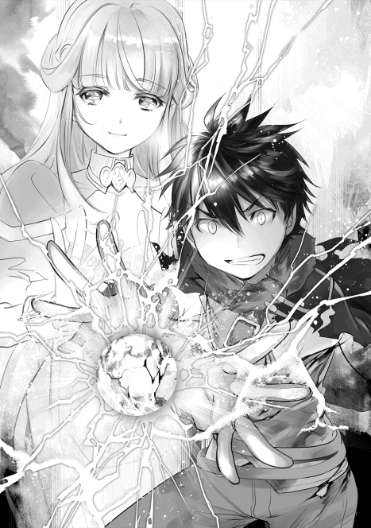
落雷の怒りを前に、生き残れるものなどいるはずがない。
永遠にも続くかと思った落雷が止む。
音が消えた。
草木が存在しない。
荒れ果てた景色が広がっていた。
後に残っていたのは......、
「ご主人様っ！ ノイたちは全員無事です！」
僕の仲間たちと、
『──ァ............ガ...............』
ピクリとも動かないフェニックスだけだった。地獄の軍団は残らず消え去り、黒く焦げた大地だけが広がっている。風が僕の体を包み込む。ゆっくりと地上へ降りた。
フェニックスはもう、戦えない。
「......確かに僕たちは悪魔の存在を認めていない。でも、君たちが危害を加えなければ、必ず悪魔を受け入れる時代が訪れる。時代は変わる。悪魔フェニックス、いや、聖鳥ベンヌ。お前の出番は、この時代にはないんだよ」
フェニックスは不死鳥であり、この戦いで完全に絶命することはない。必ず蘇る。それが何百年後かは知らないが、その頃には僕も転生しているだろう。
「お前がまた人を傷つけるっていうのなら、次は本当の死を経験させてやる......覚えておけ」
《アダマスの銀剣》で、フェニックスの首を跳ね飛ばした。
「人は、そこまで愚かじゃない」
それは、長い戦闘が終了したことを意味していた。
まだ戦いは終わってない。
急いでラーファさんたちの下へ駆け寄ると、ノイは不安を滲ませた様子で治癒魔法をかけていた。
「状況が悪いですっ！ このままじゃ五分と持ちませんっ！」
この世界の医療技術は治癒魔法に依存している。
神々を崇拝する宗教団体、カルト教団などの活動が地球よりも活発な事もあり、外科手術等の行為は外道として迫害を受けているからだ。その為、治癒魔法という万能の力とは裏腹に、医療技術の発達は乏しくなっている。このままラーファさん達を魔法都市まで運んでも、助けることはできない。
「この怪我だと治療が難しいです......!!」
二人とも、フェニックスとの戦いで損傷を受けたのだろう。腕や腹部から血が流れすぎている上に、損傷した部位が多すぎる。これで生きていられるのが不思議なくらいだった。
「......諦めたら駄目だ」
助けられる可能性が僅かだとしても、可能性があるなら縋りたい。まだまだ問題は山済みだが、助け出してみせる。しかし、治癒魔法の原理は治癒能力を爆発的に増加させ、傷を癒す魔法に過ぎない。胴体が断たれていたら治癒は不可能だし、失った腕を生やすような事は不可能とされている。医学知識が皆無な僕に、彼らを助ける為の選択肢は少ない。
ラーファさんならこういう時、どうしたんだろうか。いくら念じても、指輪からは声が聞こえてこない。ルリアのお父さんも限界に近いのだ。僕は、どうすればいい。
「......あ、あの、ご主人様！ 一つご提案があるのですが......」
「提案？」
「はいっ。響鳴詠唱をご存知ですか？」
「いや、初めて聞いた」
「響鳴詠唱は二人の魔法使いが別々に唱えた詠唱を、一つの強力な魔法に変化させる秘儀です。もちろん、魔力の波長などを合わせないといけないので難しいですが、ノイとご主人様の魔力は同じです。成功する可能性は高いと思われます。ただ......」
陰りのある表情を浮かべる。
「裏があるんだね？」
「......はい。とてつもない魔力を消耗するので、過去に命を落とした魔法使いも存在します。響鳴詠唱に成功したとしても、生涯魔法を使えなくなった人もいるそうです。......それでも、やりますか？」
ノイは、僕を心配しているのだ。規格外の魔力を秘めている僕は、先ほどの戦いで限界以上の魔力を消費してしまった。今も星が力を与えてくれているから立っていられるが、この効力が切れた瞬間の反動は、とてつもないものと予想される。しかも、六道の精神の最奥である「天道」まで開いている。肉体面への負担、精神面への負担、魔石面への負担を考えれば、僕自身の人格が崩壊する恐れだってある。それでも、やるのかと聞いているのだ。
「響鳴詠唱を始めよう。どうすればいい？」
どうせ、僕は一度死んだ身だ。この世界で悲しませる人が出てしまうかもしれないが、ラーファさんが亡くなっても同じ事。どちらかが生き残るのだとすれば、この世界の住民であるラーファさんのが相応しい。ノイの身が心配だが、僕と契約が破棄されたとしても、ラーファさんが契約を維持してくれるはずだ。もう、悔いはない。満足だ。僕は死後を、十分なほど生き抜いて見せた。
『────約束はどうするつもりなの？』
ユグドラシル？ そうだな、君との約束を守るために、よかったらまた転生させてくれよ。
『────死ぬの？』
死ぬだろうな。
『────怖くないの？』
怖いさ。
『────それでも、助けるの？』
助けるよ。約束したからね。
『────貴方を選んだ事を誇りに思います』
その言葉が反響を繰り返すと、もう一度だけとてつもない魔力が溢れてきた。ごめんな、星。こんな馬鹿な僕に付き合ってくれて、ありがとう。
「......ノイは、ご主人様に死んで欲しくないです。でも、それがご主人様の選んだ選択なら......全力で、サポートします......グズっ......ノイは、使い魔だから......」
人は必ず、この世を去らねばならない時が訪れる。神々も、人類も、悪魔も、朽ち果てる。生きているものは必ず死ぬ。『死』も生きているのだ。死は偉大な平和主義者なのだから。それこそが輪廻転生の始まり。輪廻に帰り、この世に再び生を受ける。
僕の存在も、これから僕のする事も輪廻に反発している。
ラーファさん達を助ける為に輪廻に逆らい、輪廻を正す為に僕は死を望んでいるのだ。
「ノイ、君には世話になったね。もうすべて自由だよ。君はこれからこの世界を生きる。自分の目で見て、自分の足で歩き、自分の手で世界に触れるんだ。暗い檻の中じゃない。世界へ羽ばたくんだ」
「ごしゅじんさまぁ......」
こんな主人で、ごめんな。君には辛い役目を押し付けるけど、もう少しだけ付き合って欲しい。
「......まずは、お互いの手を重ねるように、詠唱を開始します」
腕で涙を拭うと、ノイはくしゃくしゃの顔で、響鳴詠唱のやり方について説明してくれた。
「治癒魔法は未知の力です。過去、死者をも蘇らせた大魔法使いも存在するようですが、詳しいことは文献に残されていませんでした」
「つまり、可能性はあるけど難しいってことだね」
「はいです。生命解体新書、鑑定学術、組織結合、魔力の具現化......これらは確かに存在する学術です。今からノイたちは全知識を持って、治癒魔法を越えた治癒魔法を完成させます」
魔法を作るということは並大抵の努力じゃ実らない。この瞬間だけの勝負。命を懸けた最後の正念場だ。
「よし、治癒魔法を始める！」
「造形魔法、始めます！」
助けるんだ。二つの命を、助けるんだ。二人とも、生きるべき人なんだよ。
奥さんを失って、それでも戦い続けたルリアのお父さん。
天使として使命を授かり、人類の為に戦い続けるラーファさん。
立派じゃないか。かわいそうじゃないか。ここで果てるなんて、神が許しても僕が許さない。助けるんだ。二人を、助けるんだ。
「準備できました！」
「まずは冒険者からだ！」
タイムリミットが刻一刻と迫る。一秒たりとも、時間は無駄にできない。ルリアのお父さんの服を破り、ノイと重ねた手で治癒魔法を念じる。まずは、腹部の治療から試みる。
「腹部が再生してます！」
響鳴詠唱は成功した。体内から凄まじい勢いで魔力が吸われていくのを感じる。その甲斐あって、損傷の激しかった臓器は泡を立てて造形されていく。
「次はラーファさんだ！」
これで暫くは持つはずだ。次にラーファさんの傍へと駆け寄り......悪いけど、その法衣を破らせてもらった。治療がやりやすくなる。先ほどと同じ要領で手を重ね、肉体の再生に取り掛かる。
『──私の治療は、後で、構いません』
その時、指輪が蒼の輝きを放った。優しい声が、僕たちに語りかける。
「ラーファさんっ！ 意識があるんですか!?」
「ふぇ......も、もう目を覚まさないかと、思いました......」
『......ええ、お陰様で意識を取り戻しました。ふふ、天使族は生命力が凄いですからね。先にグリフレットさんの治療をお願いします。彼は私よりも危険な状態です』
ラーファさんは、癒しを司る大天使の娘。いつも僕を導いてくれた存在だ。先にグリフレットさんを治療しなければならないほど、危険な状態に追い込まれているのだろう。
「分かりました。もう少しだけ我慢してくださいね」
『......もちろんです。ノイさん、ラティさん、お願いします』
その言葉を背に、急いでルリアのお父さん──グリフレットさんへと駆け寄った。響鳴詠唱を続け、傷を癒していく。
「ルリア、返事はできるかい？」
「......うん」
フェニックスの言葉で、母親の最後を知ったルリア。グリフレットさんの傍で膝を曲げたまま、静かに震えていた。今は、そっとしておいてあげたいけど......。
「ルリアに、手伝って欲しいことがあるんだ」
ルリアはまだ十歳の少女だ。家族の度重なる悲劇に、心が堪えられるほど強くはない。すべてを受け入れたくなくて、現実から逃れたい為に、自分の殻に閉じ籠ろうとしている。昔の僕にそっくりだった。
「ルリアが手を貸してくれれば、お父さんを助けられる」
「............」
僕にそっくりだからこそ、君の望んでいる答えが分かる。家族揃って、幸せだった日々をやり直したい。もう一度、両親と会話をしたい......それは叶えてあげられなくても、希望を持たせてあげる事ならできる。
「僕たちは、君のお父さんを助けてみせる。でも、その為には力が足りないんだ。声が届かないんだよ。ルリアのお父さんに声を届かせる事ができるのは、娘としてずっと一緒に暮らしてきた君だけなんだ」
「......ウチ、だけ？」
「そうだ。君が成長する事を誰よりも喜び、君の為に毎日汗水流して働いた。それが父親ってもんだ。君の着ている服は、誰が買ってくれたのかな。君がご飯を食べられるのは、お父さんが君を愛しているからだ」
「あ......」
「ルリア、君はね......君は、お父さんを助けているんだよ」
「えっ？」
ルリアの目に僅かな光が宿った。
「......お母さんの件は残念だったよ。ルリアはとても辛かったし、今だって苦しんでいる。それと同じくらい、ルリアのお父さんも苦しんでいたはずだよ」
グリフレットさんの指を見た。彼の指には、夫婦の愛を刻んだ指輪と付いている。アイリーンさんと婚約を交わした時の、愛を誓った指輪が付いている。
「お父さんが世界に絶望しなかったのは、ルリアがいてくれたからだよ。君がお父さんの代わりに泣いてくれたから、嘘をついてまでフィオナ騎士団と戦ってくれたから......グリフレットさんは、父親としてしっかりしないといけないって、思ったはずさ」
僕がもし父親だったら、娘の前で泣き崩れるような姿を晒したくない。無理してでも、気丈に振舞う。......娘に、心配をかけたくないから。
「もう一度言うよ。ルリア、手伝って欲しいことがあるんだ」
息を吹き返すように、ルリアの目に光が戻った。
「う、うん！ ウチにできることなら、協力する！」
そう、それでいい。君は希望を信じ続けるんだ。
「お父さんの為に声をかけ続けて欲しい。心からの言葉を、思いっきり呼びかけて欲しい」
それが、奇跡を呼び起こすかもしれないから。
「わ、分かった！ ......お父さん、ルリアはここにいるよ。目を、開けてよ」
後は、僕たちの努力次第だ。全神経を治癒に注ぎ込む。
「お父さん......ウチ、今すっごく悲しいんだよ......。こんな事、前にも一度だけあったよね......あれは確か......お母さんが亡くなった日だ......」
傷が癒えていく。
「お母さんがお墓に入ったのが信じられなくて、家を飛び出したよね。あの日、ずっとお母さんのお墓の前に立っていたっけ。夜も更けて、肌寒くて、これからどうなるんだろうってずっと悩んでた」
ルリアが、命を繋ぎとめようとしてくれている。
「そしたらね。息を切らせたお父さんがルリアを見つけてくれて、怒鳴ったよね。これから怒られるんだろうなぁってすっごく怖かった。でも、お父さんはウチを抱きしめたまま、『無事で良かった......』って呟くだけだった。『帰ろう』って手を握ってくれて、温かくて......、沢山泣いちゃったよね」
優しく、父の手を握り締めた。
「だから、今度はウチに言わせてよ......!! 無事で良かったって言いたいんだよ......お父さん......！ 頑張って......目を、覚ましてよ......!!」
思い出せ。
『我は汝に願う』
ラーファさんとマウスの実験を行った時、何度か足りない組織を造形した事がある。
『心優しき一つの魂に』
脳裏に刻まれているはずの、記憶を呼び起こせ。
『再び御霊を与えんことを』
僕の中に、答えは眠っているはずなんだ。
『うぬの力とて、再生の儀を始まらんことを』
奇跡を、この手で呼び起こせ──!!
「.........ごほっ.........なんだ......ここは、天国なのか......？」
成功、した。息を吹き返したグリフレットさんは、何度も咳を払い、体に残る僅かな傷には目もくれず、半身を起こした。響鳴詠唱が成功したのだ。
「お、お父さん！ お父さんだよね!? 本物だよね!? 生きてるよね!?」
ルリアが抱きつく。
「わっ!? なんだルリアか？ まさかお前まで死んじまったのか？」
グリフレットさんは、何が起きているのか分からない様子だった。
「違うよ、生きてるよ！ 良かった......本当に良かったよ......うっ......ぐずっ......ああ、うわああああん！ わああああああん！」
「お、おいおい。いきなりどうしたんだ？ どういう状況なんだこれは......」
答えを求めるように、僕たちを見てきた。これで、グリフレットさんは大丈夫なはずだ。少し、心に余裕が生まれた。この調子ならラーファさんも助けられる。
「ご主人様っ！」
「ああ、この調子でラーファさんも助けるっ!!」
幸いにも、ラーファさんはまだ意識があった。今の要領で治療を行えば、すぐに息を吹き返してくれるはずだ。
『我は汝に願う。心優しき一つの魂に、再び御霊を与えんことを。うぬの力とて、再生の儀を始まらんことを』
想像するんだ。ラーファさんの命は、僕たちの天秤にかかっている。恐れるな。バケツが水を零さないギリギリの状態を攻めるように、治癒をかけるんだ。ラーファさんを、助けるんだ。
「傷は治りました！」
「よし、これでっ......！」
ラーファさんが、目を覚ます!!
「ラーファさん？」
何も、変わらない。体を触っても、冷たいままで動かない。ピクリとも、動きやしない。治療は成功したはずだ。成功したのに、声が聞こえないってどういうことだ？
ま、さか......
「ご主人様っ！ 心臓が、止まってます！」
まさか、もう、助からないから、グリフレットさんの治療を優先させたのか......？
「ノイ、治療を続ける！ みんな、声をかけてくれ!!」
「分かりました!!」
こんな事、前にも会った気がする。あれはそう、両親が亡くなった時のことだ。事故に巻き込まれた形だった。目の前で冷たくなっていく両親を前に、何もできなくて、失っていく命を見守っているしかなかった。ずっと泣いていた。今の僕と同じで、泣いていた。誰かを助けられれば、と、あんなに望んだことはない。
「ラーファさん、聞こえてますよね！ 頼むから目を覚ましてください！ 僕たちはまだ諦めてないんです！ 今も傍で待っています！」
「ノイたちはここにいます！ ずっとお傍にいます！ だから、お願いですから目を開けてくださいっ！」
喉が枯れてもいいから声をかけ続けた。いける、いけるはずなんだ。その時、弱々しく指輪が光った。
『ごめんなさい。やっぱり、もう限界みたいです』
何を言っているのか、理解したくなかった。
「ラーファ、さん？」
僕の言葉が、歪んでいる気がした。
『ふふ、悪魔の直撃を受けたんです。天使といえど、耐えられるはずがないですよね』
場違いに優しい口調で話しかけてくるのに、ラーファさんは目を覚まさない。
『仕方ないですね。私は天使の中でも規格外の存在です。父に天空神ゼウスを持つ私は、天使の中でも妬まれていました。ラティさんと出会うまで、何度も危険な戦場に送り込まれていたりしたんですよ？ だから、長生きできるとは思っていませんでした』
そんな過去、知らない。そんなに辛い過去を持っていたなんて知らなかった。
『こうして生きていられるのは、この星が最後の時間を与えてくれているみたいなんです。本当なら、私はもう消滅していていい存在ですからね。ふふ、この星は私を認めてくれていたんですね』
ユグドラシル......君が、この時間を与えてくれたというのか......。
「あはは、ラーファさん......ふざけているなら止めて下さいよ」
「ご主人様......」
僕は貴方を助けるためにここまで来た。自分の死なら我慢できるのに。ラーファさんの死を受け入れたくなくて声が震えた。
「ほら、帰ろうよ。お爺ちゃんも、みんなも待っているはずだよ？」
『ラティさん、現実から逃げないでください。このままじゃ、伝えたい言葉を伝えられないじゃないですか？ 殻に閉じこもらないでくださいな？』
あぁ、やっぱりそうなんだよね。現実がどういう事なのか理解しているなら、ラーファさんの言葉を、聞くしかないじゃないか。
「............家に帰ってから、聞きたかったです。一緒に帰って、ご飯を食べて、ラーファさんの笑顔を見たかったです」
『死ぬ気で響鳴詠唱まで使った人が何を言ってるんですか。その言葉、そっくり返させて頂きますよ』
「............すべて、お見通しなんですね」
現実が目の前に広がっていた。命ある者は、必ず死を受け入れなければいけない。息をつく。唾を飲み込んだ。静寂な感情が溶けるように全身に広がって、涙がぽろぽろと零れる。虚ろで、悲しい感情の渦。
『ラティさんは生きてください。私の最後の力で、貴方を生かして見せます』
ラーファさんも、僕と似たような感情を抱えていたらしい。
「......ラーファさんが、助かる方法はないの？」
『ないですね。私の全知識を使っても、死者を蘇生する方法に心当たりがありません』
凛と言い放った。
『ラティさんは人族です。神の使命も、天使の使命にも関わる必要はありません。平和に暮らして、コツコツと生きて、お爺ちゃんになった時に幸せだったと思える人生を送ってください。それが、生きるって事です』
たまには私のことを思い出してくれたらうれしい、と、ラーファさんは笑ったように言った。
『悲しそうな顔をしないでください。天使は人類を守護するべき存在。死を通じて尚、私はラティさんを護り続けたいと思います。それが天使として与えられた、私の最後の選択肢です。これだけは譲りませんよ？』
天使とは、本来僕たちを見守ってくれる存在だ。ラーファさんらしい答えだった。
「そっか、ラーファさんが見守ってくれるんだ」
これから常に一緒にいてくれる。それが当たり前のように、ラーファさんは言う。だけど、
「......ごめん。それは受け入れられない」
だけど......！
「それでも僕は、ラーファさんに生きていて欲しい」
大切な人が死ぬなんて、嫌だった。このまま終われるはずが無かった。生きていて欲しい。傍にいて欲しい。これからも一緒に、未来を歩んで欲しい。死を受け入れた人を、愚弄する言葉だった。本来、絶対に言ってはいけない言葉。それでも、望まずにはいられない。
「ラーファさんとの日々は楽しかった。魔法を教えてくれる時の頼もしさに憧れて、ちょっとした仕草を可愛いって思ってたんだ。これからも続けたいって思ってる。新しい魔法を覚えたら、凄いですね、って褒めて欲しい。そして僕は人だから、ラーファさんより早く亡くなると思う。そしたら、最後には笑って見守って欲しいんだ」
そんな未来を思い描いていた。泡沫の夢だったとしても、未来に希望を持っていた。
『......私も、楽しかったです。お父様と仲直りする機会に恵まれて、ラティさんに慕われて、幸せでした。ラティさんが傍にいてくれた事で、どれだけ私は救われたことでしょう。生きてください。私がいなくなったとしても、幸せになってください。それが、私が望む最後の願いです』
ラーファさんの声が震えていた。そして、ラーファさんの閉じた瞼からは涙がこぼれていく。
「待ってください......行かないでください......！ 僕はまだ、ラーファさんがいないと駄目なんだ......！ ラーファさんがいない明日なんて、どうやって笑っていけばいいのか分からないよ......!!」
僕もまた、涙で声が分からないことになっていた。それでも叫ぶ。必死に、引き止めようとする。
「お願いします......生きて、ください......」
前世を数えて、合計四十年を超える人生を歩んだ男の姿が、コレだった。泣き叫んで情けない。子供のように喚き散らす。不可能なことを子供のように望んで、それでも生きていて欲しかった。
『ごめんなさい......』
でも、それは叶わない夢。声が遠くなっていく。燐光が僕を包み込んだ。まるで、死が近づいている僕の輪廻を塞ぐように。僕を守ってくれている。
『......ラティさん、友達をいっぱい作ってください。中には女の子もいるでしょうけど、必ず私に報告するんですよ？ 可愛い弟を任せられるか品定めしますから』
軽い調子で、言葉を繋いで。
『ラティさんは強いです。神々の力を使いこなし、人の身で悪魔を倒して見せました。この地方を、魔法都市を救ったんです。賢者なんかよりも凄い所業です。貴方は今日、世界を救った英雄になったんです』
慈愛に満ちた言葉は、僕を励ますもので。
『これからの人生、辛いこともあると思います。それでも、世界を恨まないでください。世界を愛してください。愛することで愛されて、戦うことで認められて、希望を持つことで絶望に立ち向かえる。すべてを乗り越えれば、今の悲しさなんてすぐに消えちゃいます』
恐らく、僕の今後を案じているのだろう。
『......私は、貴方が大好きです。人としても、弟としても、異性としても大好きです。だから、見守らせてください。神々の血を受け継ぎし大天使の娘が、死後もラティさんを守ります』
ふと、ラーファさんの声が離れていくことに気づいた。もう、時間が残されていないのだ。透き通った声。お爺ちゃんと同じ赤い瞳を持つ天使。彼女は清楚な雰囲気を持っているのに、少し残念な部分も持ち合わせている。それが、ラーファさんという存在だった。
『......お父様とお母様に、謝罪をお願いします。幸せな人生だった、とお伝えください』
優しい言葉で、宥めてくれて。
『......もし、生まれ変われるのだとしたら』
最後は、優しい言葉で締められた。
『また、ラティさんのお姉さんになりたいですね。今まで、ありがとうございました』
それっきり、言葉が聞こえなくなった。
「ぅ......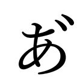......」
それを認識しても、認めたくなくて。
「ラーファ、さ......」
溢れる涙を拭わずに、呆然とラーファさんの前で膝をついて、何度も、何度も、名前を呼ぶ。
「ご主人様っ！ しっかり、してくださ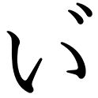......!!」
いくら声をかけても、ラーファさんは目を覚ましてくれない。
「......なぁ、ラティ」
グリフレットさんが、僕の腕を掴んでくる。
「賢者様は、最期までご立派だった。オレたちは彼女の生き様を胸に刻み、歩んでいかないといけない。お前が辛いっていうのなら、オレが半分を背負ってやる。そうして生きていくことも、生きるってことなんじゃないかな」
まるでお爺ちゃんのように、グリフレットさんは抱きしめてくれた。
僕が助けられた命。
僕が助けられなかった命。
ラーファさんに、助けてもらった命。
僕は死ねなかった。ラーファさんが、僕の運命を捻じ曲げてくれたから、死ぬことを許されなかった。
「ラーファさんのこと、忘れません......」
絶対に、忘れない。ラーファさんが残してくれた多くの思い出を胸に、明日を生きていくから。
『────諦めるの？』
その時、声が聞こえた。小さくて、ずっと僕を見守ってくれていた星の声......。
『────不可能に立ち向かい、悪魔をも倒した貴方が諦めるの？』
......僕にできることは、もう何もないんだ。
『────貴方は大切なことを忘れている』
大切なこと？
『────貴方は転生者。それなら、彼女を助ける方法を知っているはず。背後を見て』
ユグドラシルの導きに従って、背後を振り返った。
泣きじゃくるノイ。
何度も謝るルリア。
僕を慰めようとしてくれるグリフレットさん。
そして、《フェニックスの尾》が落ちていた。
『────貴方はこれがどういう物か、知っているはず』
生前、漫画やアニメが好きだった僕は、フェニックスという存在を深く知っていた。フェニックスは転生の炎を司る炎の鳥。死者蘇生。死に陥った仲間を蘇らせる力を持つ。
『────まだ間に合うよ。後は頑張って』
全身に血液が漲る。諦めるには、まだ早すぎる。《フェニックスの尾》を掴んだ僕は、ラーファさんの心臓に重ねるように胸の上に捧げた。きっと、これが最後のチャンスとなる。
「ノイ」
「ご主人様......」
「もう一度だけでいい。治癒の響鳴詠唱をお願いできないかな。これにすべてを賭けたいんだ」
一瞬、戸惑いを見せたノイだったが、すぐに頷いてくれた。
「......分かりました。いつだってノイは、ご主人様を信じます！」
ありがとう......ノイには、何度助けられたことか。ノイと両手を重ね、ラーファさんの体に触れていく。
「......僕、ずっと伝えていなかった言葉があるんです。ラーファさんのこと、大好きなんですよ」
恋愛とは違うかもしれない。でも、偽りない言葉だ。
「ラーファさんは、ずっと悩んでいたんですよね」
天使の使命は死への誘い。それなのに、戦った理由は何か。
「ラーファさんは僕たちの為に戦ってくれた」
死が迫ると分かっていても、人類を守りたかった。嫌々、じゃない。本当に世界を愛していた。
「ラーファさんの強さが、僕に勇気を与えてくれました」
僕は、ラーファさんの志を受け継ぎます。それが、僕が見せる最初のはなむけです。
「今こそ約束を守ってみせる」
ラーファさんを助けてみせる。
『『我は汝に願う』』
《フェニックスの尾》が輝く。深遠なる碧の輝き。柱のように天をつんざく輝きを放つ。
『『心優しき一つの魂に、再び御霊を与えんことを』』
世界を包み込む。
『『我の力とて、再生の儀を始まらんことを』』
風が止まり、時間が止まった。
「治癒再生!!」
世界が白で満たされる。ゆったりとした時間の中で、浮かんでくるのはラーファさんの記憶。
他の天使に石を投げられて、神々からは期待されて、重圧に悩む日々だった。
本当は、お洒落をしたり、恋をしたり、天使以外の付き合いを望んでいた。
その記憶の奥。鎖に包まれた奥には、僕たち、家族の記憶が残っていた。
「ラーファさんも、同じだったんですね──」
幾何学的な魔法陣が、天高くに昇り続ける。
そこから、光が溢れて、お爺ちゃんたちの声が聞こえた。
『諦めるでない』
『......待ってるよ、ラーファちゃん』
『小娘はこの程度でくたばる輩ではないだろう』
ラーファさんの人生は、辛かったのかもしれない。それでも、こんなに多くの人たちが見守ってくれている。こんなにも愛されて、幸せじゃないか。
繋がってゆく。一つ一つの灯りが灯るように、大切な人が還ってくるように──。
「......けほっ」
奇跡が、訪れた。
「......あ、あれ......どうして私、生きているんです......？」
優しくて、穏やかな口調が聞こえた。
「ラーファさん！」
僕とノイは、一斉にしがみ付いた。
「ラティさん......ノイさん......ふふ、どうしたんですか。そんな死人を見たような顔をして」
「すべて、知っているじゃないですか......」
「良かっだです......本当に、もう話ができないかと思って......ノイはっ......ああ......ぐずっ......」
生きている。生きてくれている。ラーファさんは今ここに生きている。
それだけが嬉しくて、言葉にならなくて......!!
この奇跡を与えてくれたのは、他でもない中立なる存在だ。
『────この恩は、近々返してもらうよ』
あぁ、任せてくれ。君の願いは必ず、僕が達成してみせる。
『────全ての生命に祝福を』
僕の体内から魔力が失われていく。星が、力を解いたのだろう──ありがとう、ユグドラシル。
「ラティさん」
ラーファさんが、声をかけてきた。
「冥府に落ちる私を助けてくれたんですよね」
抱擁されて、凄く、心地よかった。
「賢者様、それよりもかけてあげる言葉がありますよ」
グリフレットさんが近づいてきた。
「そう、ですね。盛大に別れを告げておきながら、少し恥ずかしいですけど......」
一度手を離したラーファさんは、コホンと咳払いをしてから言った。
「ただいま、です」
空は黄昏に染まり、どこまでも続いていた。
陽が落ちる頃、僕たちは魔法都市へと引き返していた。すでに薄暗くなる中、背中からは寝息が聞こえてくる。
「......すーすー」
「ラーファさん、気持ち良さそうですね」
それに、一度死んだ身である。体力も相当削られているようで、もう限界に近いようだった。かくいう僕も、天道を開放した事による疲労の兆候が表れている。腕が痺れるというか、視界が揺れたまま安定してくれない。
「大丈夫？」
「さっきからフラフラだぞ」
グリフレットさん達が馬を並べてくれるが、小さく声を返すのがやっとだった。朧気に浮かんだ月から降り注ぐ燐光の下、どうにか魔法都市へ到着する。夜だというのに喧騒は収まっておらず、都市というだけあって大賑わいしていた。ようやく、戻ってこれたようだ。
「少年、小娘！ 待っていたぞっ!!」
門を潜って暫く、立派な鎧や槍を持った集団──騎士団に呼び止められた。人数は十名ほどだろうか。
「部下が世話になったらしいな」
隊長と思われる中年の背後には、昼間に殴り飛ばした騎士が立っていた。
「おいおい、なんだこの状況は？ なぜ騎士団がラティを捕らえようとしている？」
「え、えっとお父さん、あのね──」
そういうことか。大衆の前で僕が恥をかかせたから、その報復に訪れたという事だろう。子供一人を捕まえるのに、この人数で来るなんてね。情けない。
「ご主人様......」
心配そうに覗き込むノイの頭を撫でてから、馬を降りた。
「大丈夫だよ、下がってて」
さて、どう切り抜けるか。
「少年にミズガルド王国刑法第二百三十五条、窃盗罪の容疑がかかっている。その馬は我々の物だ。不法領得の意思があると判断した。他にも暴行、恐喝も合わさるな」
窃盗罪、か。なるほど、法律を持ち出してきたか。こうなってしまっては、僕にできることは何もないだろう。なにせ、法律は絶対のものだ。ここから僕が逃げ出す事は不可能じゃないが、逃げた所でルリアやグリフレットさんに多大な迷惑をかけるに違いない。なにせ、馬を持ち出したのは事実なんだ。
参った。こればかりは僕じゃどうしようもない。子供だから多少は罪が軽いとはいえ、この世界は地球と比べても重い刑罰が与えられる。五体満足、無事で出てこれるといいが......。
『だから言っただろ。あいつ、大変なことになるって』
『騎士団に目をつけられたら終わりよね』
『あいつ、生きて帰れるのかね』
また観衆が集まり、好き勝手言ってくれる。話を聞いている限り、やはり子供にも容赦がないようだ。
「おい、待て。なぜ子供を捕えようとする？ この少年は、この都市を救ってくれたんだぞ」
「救った？ クク、何のことだ。この都市は平和そのものだろうが」
悪魔と地獄の軍団が動いていた事は、僕たちしか知らない事だ。グリフレットさんがいくら弁明してくれても、ホラ吹きで終わるだろう。
「あ、貴方たち騎士団が何もしてくれないから、ラティが、助けてくれた。それだけ、だよ」
「ラティを捕まえるっていうなら、オレが相手してやるよ」
「これ以上、好きにはさせないです！」
ルリアも、グリフレットさんも、ノイも、僕の前へと立った。これ以上は進ませないという意思で、僕を守ろうとしてくれる。嬉しいはずなのに、こんな事を続けたら三人とも無事には済まない。この騎士団は、ルリアだって容赦なく蹴り飛ばしたんだ。命くらい、何とも思ってないだろう。
『あいつら、一緒に捕まる気かよ』
『嘘吐きも一緒だな』
『悪魔をあんなガキが倒せるはず、ないだろうが』
観衆たちの耳障りな声......それぞれが勝手な憶測を立てて、さも面白そうに見学している。聖鳥ベンヌが悪魔フェニックスに生まれ変わった理由が、少しだけ理解できた気がした。
『嘘吐きの仲間も嘘吐きか』
嘲笑う声は波紋のように広がり、僕たちを包囲する。逃げ場はなかった。
「お前たちと話を続けるつもりはない。邪魔をするなら、全員一緒に来てもらうぞ」
騎士団が槍を構える。ルリアがびくりと震えた。グリフレットさんが前に踏み出す。ノイが詠唱を始める。このままだと、全員捕まってしまう。それだけは避けなければいけない。
「もういいよ。みんな、ありがと」
「ご主人様!?」
ここが限界だった。よりにもよってこいつらに捕まるのは悔しいけど、ここで暴力に訴えればフェニックスと同じに墜ちてしまう。僕は善に従って動くと決めた以上、無実を訴えることしかできなかった。それに、騎士団と同類にだけはなりたくない。
「おい！ フィオナ騎士団に捕まったら破滅しかないぞ！ 逃げろ、逃げるんだ！」
「そんな事したら、僕の変わりに皆さんが酷い目に遭います。大丈夫です。これでも体力だけはありますから」
なんて、格好つけてみる。もちろん嘘だ。本当は怖くて震えている。どうにか浮かべた笑顔だって歪んでいるに違いない。最高に格好悪いな、僕。
「おい。こいつは昼間のお返しだ」
僕の前にあのクズが駆け寄ってくると、腹に拳を叩き込んできた。激しい痛みに胃液が込み上げ、吐いた。
「あ、あぐぅ......」
疲労しきった体では耐え切れるはずもなく、石畳へと叩きつけられる。頭に思いっきり、足で蹴り飛ばされた。一瞬、意識が飛ぶ。金属ブーツの重みだろうか。真っ赤な何かが口から飛び出して、意識が遠ざかっていく。それから、何度も、何度も、蹴られ、殴られ続けた。その時だった。ノイが、魔法を放ってしまったのは。
「ご主人様......！ ノイは、これ以上我慢できませんっ......！」
放ったのは鎖の魔法。騎士団に向かって牽制する為の一撃。お陰でようやく蹴られなくなったが、体はもう動かなかった。
「同じく我慢ならん！ 貴様ら、ここでオレが相手をしてやるさ！ かかってこい!!」
「ウチ、冒険者のみんなを連れてくる！」
駄目だよ......そんな事したら、みんなが............。
「全員、捕縛しろ」
無数の足音と、詠唱が交じり合う。金属が衝突する鈍い音が響いた。
『殺せ！ 殺せ！ 殺せ！』
観客は盛り上がっているらしく、無責任な野次を投げつける。止めさせないといけないのに、涙と呻きしか出せなかった。僕にはもう、衝突を止める力すらも残っていなかったのだ。
「──フィオナ騎士団の皆様？ 先ほどから何をされているんでしょうか」
凛とした声に、光の羽が空から降り注ぐ。それに触れた瞬間、この場にいた全員が動けなくなった。
「なんだ、お前は？」
馬から下りて、ゆっくりと僕に近づいてくる女性。観客までもが動けなくなり、静かな足音だけが鳴り響く。
「我は汝に願う──」
今日、何度も唱えた治癒魔法が僕を癒していく。
「しっかりしてください。大丈夫ですか？」
優しく僕を抱きしめてくれたのは、ラーファさんだった。まだ立っているのも辛いはずなのに、助けに来てくれたのだ。
「ご主人様が......ご主人様がぁ......」
「ノイさん、大丈夫ですよ。この怪我ならどうにか治せます」
痛みが和らぎ、視界が色を取り戻す。
「なんだ、こいつらの仲間か？ 邪魔するつもりなら容赦はせんぞ？」
「はぁ、そんなことをするつもりはありませんよ？ ただ貴方たち騎士団は心底腐ってるなぁと思っただけです。こんな人たちを守るために戦っているなんて、自分に嫌気が差しますよ」
「喧嘩を売っているのか？」
「嫌ですね、槍なんか向けて怖い。さて、私を知らないようなら名乗らせて頂きましょうか」
騎士団の威圧にも負けず、強く、高らかに宣言する。翻す足音。そして、今まで聞いたことのない怒りを孕んだ言葉が爆発する。
「私はミズガルド王国に仕える【暁の賢者ラーファ】。そんなに権力を振りかざすのが好きならば、私もまた権力を使ってあげましょう」
周囲の空気が冷たく冷えていく。
「暁の賢者様だと？ そんな大層な輩が魔法都市を訪れるはずがないだろうが。馬鹿か？」
槍を、ラーファさんへと向けた。
「隊長、ま、待ってください！ この女、いや、このお方を王都の式典で見たことがあります！ 確か、賢者様として王の傍で相談役をされておりました!!」
瞬間、隊長の顔色が変わる。
「記憶違いじゃないのか？」
「いえ、王様をまったく敬わず、酒を無理やり飲ませて吐かせた上に酒樽を飲ませて魔法衛士隊に捕まっていたので覚えています！ 確かに暁の賢者様と呼ばれていました！」
何してるんだ、この人。
「聞きなさい。貴方たちフィオナ騎士団は、私の仲間たちに手を出しました。そして、あろう事か私に槍を向けましたね。その暴虐無人な振る舞いは許せる行為ではありません。ミズガルド王にご報告させて頂きます」
至上三人目の賢者に選ばれたラーファさんは絶大な力を持ち、国にとっても利益となっている。なぜなら、他国に大きな顔ができるほどの魔力を秘めているからだ。
「権力という〝暴力〟がいくら強かろうと、更に上位の〝暴力〟には絶対に勝てないんです。力で力を成す世界の構造はやがて破綻を迎えるんですよ。貴方たち、フィオナ騎士団は！ 今日！ ここで！ 壊滅するんです!!」
騎士団の連中が槍を投げ捨てた。中には必死に命乞いをする輩もいる。こんな奴らにルリアのお母さんが......。
「ご主人様、大丈夫ですか!?」
「ど、どうにか無事だよ」
駆け寄ってきたノイに支えられながら、立ち上がった。
「無理しないでください。恐らく、内臓が損傷していますよ？」
つまり、あまり無理はできないってことだ。
「皆、助けてくれて、ありがとうございました」
「いえいえ、姉として当然のことをしたまでです」
「おう。冒険者は恩を返す。お前さんはオレが守ってやるよ」
「ご主人様をお守りするのが、ノイの勤めですから！」
知ってるかい。そこまで行動できる人は、少数派なんだ......僕の仲間は、お人好しの人たちばかりだよ。嬉しかった。
「ラティ〜!! 大丈夫なの〜!?」
後方から、二十名を超える冒険者を引き連れたルリアがやってきた。誰もが武器を構え、殺気立っている。騎士団が逃げ出そうとしたが、ラーファさんの魔法によって動きを止められる。
「さて、本当は私自らが騎士団に天罰を与えたいのですけど、私よりも皆さんのが憎しみは上でしょうね。そうですね......今から一分ほどの記憶は何も覚えてないと思います。後は好きにしてください。但し、命だけは奪わないでくださいね」
なるほど、そういうことか。つまりラーファさんは、僕たちに復讐の機会を与えてくれたのだ。僕たちと冒険者を含めた全員が、言葉の意味を理解した。
「な、なんだ......何を、するつもりだ！」
すぐに分からせてやるさ。その言葉が合図となった。
「ご主人様に、ルリアさんたちによくもっ！」
最初に動き出したのはノイだった。
『──鎖よ。悪しき心を持ちし愚か者に束縛を与えたまえ。──【無限鎖の蛇ウロボロス】!!』
ノイの手を中心に展開された魔法陣からは、鎖の大蛇が現れた。影は蛇へと変化し、影へ溶け込み、騎士団の足元から現れて、全身を縛り上げていく。
「な、なんだこれ......蛇が体を......や、やめてくれ、来るなっ！」
「く、首が！ 息ができな──」
騎士団たちの顔が青くなる。まぁ、命に別状はないだろう。
「貴様ら覚悟しておけよ！ 妻を、アイリーンを愚弄しやがってっ!!」
続けて、ルリアのお父さんが拳で騎士団を殴り飛ばす。
「うぐっあッ！」
その拳はよほどの豪力なのか。騎士団の面々は一撃で伸びていく。冒険者たちも加わって、一方的な戦いとなった。そして、僕も魔法を唱える。
『雷帝の王よ、強き意思を持ちし汝の力を持って、新たな骸を捧げん。天と地を繋ぐ一筋の光をここに描きたまえ』
本日、三度目の魔法剣。雷光を纏いし裁きの一撃は──騎士団全員を巻き込むように振り放つ。
『金色の王剣！ 奴らを半殺しにしろ！」
金色の一閃が騎士団を薙ぎ倒す。もちろん手加減はしているが、何名か致命傷を負ったかもしれない。まぁ、すぐに手当てをすれば問題ないだろう。僕だって、キレる時はあるんだよ。
『いいぞ、もっとやれ！』
『そいつら昔から気に食わなかったんだ！』
『どんどん片付けちまえ！』
意見が統一しないのは観客の特徴だった。
「そんな......こんなこと......フィオナ騎士団が『お母さんの仇っ！』ギャアアアッ！」
背後から煉瓦を両手に握ったルリアが、騎士の鎧へと叩き込んだ。鎧っていうのは切られることには耐性があるらしいが、薄い板金で作られている関係上、どうしても鈍器で殴られると鎧ごと肉体へ食い込むので、猛烈な痛みが発生するそうだ。ゲームと違って現実は、万能な防具なんて存在しないってことである。
こうして、クズたちの悲鳴が合唱へと変わり、やがて無音に変化する。
ノイの作り出した蛇も姿を消し、変わりに近くから石の塊──魔法人形ゴーレムが現れた。
僕たちを捕らえにきたかと思いきや、騎士団の連中を一箇所に運び出し、ロープで縛り付けていく。魔法人形の中では、僕たちよりもあいつらの方が犯罪者と認識されているようだった。魔法は嘘をつかないって本当だったらしい。確かに、この世界の何よりも信頼できる力なのかもしれない。
「さて、最後に私から〝観客〟の皆さんへ伝えることがあります」
僕たちがフィオナ騎士団を殲滅すると、待ってましたとばかりにラーファさんは踵を返す。〝観客〟の方を振り向いた。その目には怒りが篭っているように見える。
「貴方たちも、人を笑っていられませんよ」
今まで笑っていたギャラリーたちが、一瞬だけ静寂に包まれる。本当に一瞬で、すぐに『なんだこいつ』『僕たちは逆らえなかっただけ──』と、被害者を演じだす。
それにも負けず、ラーファさんは息を思いっきり吸い込み、全員に聞こえるように叫んだ。
「──貴方たちも同罪です。恥を知りなさい!!」
もう一度だけ、静寂が訪れた。
フィオナ騎士団の騒動から数日が経過して、やっと平穏な日々が戻ってきた。ここらで記憶を整理するためにも、今日から日記を付けようと思う。あの後、僕たちは領主様から事情を聞かれることになって、結果的に深く謝罪された。
『本当に申し訳なかった。なんとお詫びしたら良いのか......』
『謝るなら、グリフレットさんたちに謝ってください』
ルリアもグリフレットさんも、奥さんをフィオナ騎士団に見殺しにされたことで、最初は激しく責めていた。それが涙声に変わって、ある約束を交わさせた。
『もう二度と、妻のような悲劇を繰り返さないで欲しい』
『分かった、必ず誓いを果たそう』
騎士団を結成した領主様をどんな気持ちで見ていたのかは分からない。いや、今だって許していないはずだ。それでも、領主様がいくら謝罪をしたところで奥さんは帰ってこない。だって、過去は戻ることがないのだから。だからこそ、二人は同じ過ちを犯さないように約束を交わしたんだと思う。奥さんの死が無駄にならないように。奥さんの痛みを胸に刻みつけて、これから前へ進んでいく。それを応援したい。
そうそう、ラーファさんとグリフレットさんは治療院に入院することになった。命に別状は無いらしいので、とりあえずは安心しても大丈夫だと思われる。退院は来週になるみたいだけど、二人ともお酒が大好きなので、早くも入院生活に嫌気が差しているらしく、脱走計画を企んでいた。もちろん医師には密告しておいたので、現在は地下室の鉄格子付き施錠の部屋で監禁されているはずだ。出せ、出せ、と暴れていたけど、健康には変えられないので仕方ない。この機会にお酒は処分しておこう。
さて、最後になるのは僕たちのことである。何事も無かった──と思いきや、実はそうでもなく、僕の記憶は数日分がごっそりと曖昧に消えていたりする。その理由は魔力の枯渇と天道の開放。天道を開放した状態で聖鳥ベンヌと戦い、治癒魔法の連続によって肉体が限界に達していたようだった。目が覚めたのは今日の朝で、傍で見守ってくれていたノイが、
『あぅ、ご主人様ああああぁあああああああああ！ ずっと、もうずっと起きないと思っていました......!! ほんとうに、よくご無事で......うぅっ............また、お話できて嬉しいです......ぐずっ......』
泣きじゃくりながら抱きついてきた。ずっと誰かが見守ってくれたことの安心感と愉悦、そして健気な姿に感動してしまい、勢いで抱きしめてしまった。体が勝手に動いていたというか、そうしないと気が済まないほど胸の高鳴りを感じたり。ま、まぁ少し、本当に少しだけどノイを意識してしまったことを認めよう。
本人には絶対に言えないけど、日記なら本音を書いてもいいよね？
ちなみにこの日記を書いている現在、ノイはベットで気持ち良さそうに寝息を立てている。ほぼ寝ずに、僕とラーファさんの介護をしてくれていたらしい。
『ノイはご主人様たちにご恩があるんです！ だから、支えてあげたいんです！』
なんて、誇らしげに言ってた。いじらしいというか何というか......。僕はノイのすべてを知ったわけじゃないけど、人に対してあまり良い思いを抱いていないと誤解していた。だから、僕に親しくしてくれるのも、あの場所に戻りたくない恐怖心からなんじゃないか？ と邪推していたんだ。
でも、答えは違った。
ノイは外の世界に出られたことを本当に感謝していて、僕の使い魔としての現状を存分に楽しんでいる。もしノイがいなかったら、僕はラーファさんたちを救うことはできず、絶望に落ちていたはずだった。ノイが僕に恩を感じているように、僕もまたノイに恩を感じている。これからはもっと距離を詰められるように、積極的に会話をしていきたいと思う。
「へえ、日記を書いてたんだ？」
最後の文を書き終えたところで、部屋にルリアが入ってきた。机の横に立ち、覗き込むように文字を眺めている。急いで日記を閉じた。あ、でもルリアは文字が読めなかったはずなので、特に問題はなかったかもしれない。
「ってルリア？ もう午後八時だけど......どうしたの？ リセ叔父さんが心配するよ」
「今日は叔父さんの帰りが遅いから、ラティの場所で泊まるように言われたけど」
「......初耳なんだけど」
リセ叔父さん......大切な姪を男である僕に預けるなんて何を考えているんだ。僕が狼だったら、襲っているかもしれないぞ。
「ラティなら変なことをするような人じゃないし、変なことをする根性もないだろうってお父さんも言ってたけど、どういう意味なんだろ？」
「......そうですか」
確かに手を出す勇気は無いけど、人に言われると傷つくものである。
「ねねね。それよりも窓の外は凄いよっ！」
机のすぐ前にある窓を開け、涼しい空気が体を冷やす。虫と波の音に続いて、空からは満面の星が埋め尽くしていた。それは幻想的な光景で、いつまで見ていても全く飽きないほどだった。
「ウチね、この眺めが大好きなんだっ！」
「あっ......」
ルリアが、笑ってくれた。
「お母さんといつも見ていた空なんだ」
「そうなんだ......」
寂しそうな瞳で目を細め、洋々と流れ進むカヌーを見下ろした。水面は僅かに揺れ動き、魔石灯に照らされて、透けるようなマリンブルーが静かにせせらぎを奏でていた。
「暗い顔しないで？ ラティのお陰で、ウチもやっと前に進めそうだから」
寂しさは瞳から消えてない。それでも強い意思が篭っているように感じられる。
「嘘は止めることにしたよ」
良い笑顔だった。うん、ルリアはもう大丈夫だ。これからは自分の力で前へ進んでいける。そんな説得力がその言葉からは感じられた。
「ウチね、どうしても考古学者になりたくて魔法学園に行きたいんだ」
「へえ、でもどうして学者になりたいの？」
「お母さんが教えてくれたの。この世界には九つの大陸があって、沢山の絶景と秘境、出会いが待っているんだって。世界には知らないことが沢山あるんだよって。その話を聞いたら、いつか世界に旅に出たいと考えるようになったんだ。考古学者になるのは大変だけど......危険な魔物を倒せないと遺跡には近づけないし、魔法がないと満足に調査も出来ない。だから、一生懸命に魔法を覚えたい」
時間を忘れて、ただ純粋に将来の夢を見ていた。その想いがどれほど真剣なのか伝わってくる。
「......その夢、絶対叶うよ。僕が保証する」
「ほんと？ えへへ、ラティが言ってくれると嬉しいね！」
こうして他人と雑談を交わすのは初めてかもしれない。お爺ちゃんやラーファさん、ノイとはしょっちゅうだけど、みんな家族だし他人とはちょっと違うし......だから新鮮な感じがする。
「あの......それでね、一つだけ伝えたいことがあるの！」
すると、ルリアは言いづらそうに尋ねてきた。
「うん？ 何を伝えたいの？」
どうしたんだろう？
息を何度も吸い込んで、表情がまた硬くなってるけど......頬は朱に染まり、強張った肩には力が入っていた。胸の前でギュっと手を瞑る。目は渦を巻きながら、強い意思で僕を見つめてくる。
「お、お父さんを助けてくれて、都市を守ってくれて、本当にありがとうございました！」
深くお辞儀。突然の出来事に戸惑ってしまう。
「ウチ、今回は何も出来なかった！ でも、でもラティは殆ど交流のないウチなんかのために一生懸命に戦ってくれた！ 今は何も恩返しが出来ないけど、将来は恩返しをさせてください！ 必ず立派な魔法使いになってみせるから！」
まさか、ここまで恩を感じているとは思わなかった。別にお礼を言われることが嫌いなわけじゃないけど、ここまで感謝されたことってなかったから......ど、どう反応したらいいんだろうか。
「ウチね、ラティがお父さんを助けてくれた後から、ずっと胸がドキドキしているんだ......ウチの変わりに騎士団を殴ってくれて、ウチの変わりにお父さんを助けてくれて、ウチの変わりに傷ついた......！ ここまでされたら、ラティを好きになっちゃうよ......」
「──ほへっ!?」
好きになっちゃうよ？ え？ ノイが言ったんじゃなくて、今、ルリアが僕に言ったの？ あれ、これって告白？ 告白だよね？ ノイのような冗談じゃなくて、正真正銘の告白なんだよね!? ど、どうしよう、そんな気はなかったけど、好きって言ってくれたらルリアのことを変に意識してしまう......僕って単純かもしれない。
「ウチ......ううん、私ね！ ラティのことが大好──」
ルリアの決死の告白が呟かれるその時だった。
「ラティさああああん！」
「えっ？」
窓から地下室に監禁されているはずの人の声が聞こえてきた。
「やっと逃げ出してきましたよ！」
「ラ、ラーファさん!?」
いや、この声は幻聴じゃない！ 一体どこから叫んで──。
「ただいま帰りましたああああ！」
半分だけ開いた窓ガラスをぶち破ってきた。
「どこから入ってくるんですか！」
宿の主人に怒られるぞ、コレ......。
そんな細かいこといいじゃないですか？ ちゃんとグリフレットさんも連れてきましたよ」
「え、お父さんも？」
その言葉を待っていたかのように、扉が開かれた。
「賢者様、急に飛翔魔法なんて使わないでくださいよ。オレは飛べないんですから──おっ、ルリアか！ そんなに赤い顔してどうしたんだ？」
「......もうっ！ お父さんのバカぁ！」
「待て！ なぜラティの剣を振り回す......止めろ！ また入院になるだろうが！」
ま、まぁうん。告白が消されたんだから怒るよなぁ......今は気持ちが固まってないから断ったと思うので、これはこれで良かったのかもしれないけど。
「で、どうして脱走してきたんです？ 治療院はどうしたんですか？ 扉の鍵は？」
「そんなの壊してきました」
うん。だと思った。治療院には深く謝罪に行かなければ......。
「えへへ、ラティさんに伝えたいことがあるんですよ」
「ラーファさんが？ 僕にですか？」
「......疑ってますね？」
「ロクなことじゃない気がして」
「そうでもないですよ？ 私の人生の中で一番重要なことです」
どうも胡散臭いけど。法衣を何度かはたいて身だしなみを整えると、僕の目をしっかりと見ながら言葉を紡いでいく。さて、今度はどうやって僕を困らせるつもりだろうか。事と次第によっては流石に怒るけど──
「ラティさんを本気で好きになりました」
...............................................................はっ？ 何言ってるのこの人？
「私ですね、今までは誰かを守る立場だったんです。いつも孤独で戦って、感謝されるだけだったんです。でも、私が死に瀕しているところを見事に助けてくださったラティさんは、まさに王子様でした！」
ヒートアップするラーファさんの顔が近づいてくる。気のせいか唇が差し出されているような......。
「ちょ、ちょっとラーファさん！ 僕たちは姉弟ですよ!?」
「血、まったく繋がってないですけどね」
そう言われるとそうだ。ラーファさんのことは好きだし、別に問題はないような......。
「い、いやそうじゃないです！ というか年齢考えてますか!? 僕、まだ十歳ですよ！」
「何故でしょうか、ラティさんは落ち着いてらっしゃる部分もあるので、まるで中年男性のような魅力を放っているんです」
変なところで鋭い人だな。
「ラーファさん、ご主人様に何を言ってるんですか！ ご主人様はノイのです！」
「ええ、ノイまで起きたの!? 更に面倒な展開になったんだけど！」
「ノイさんならそう言うと思ってました。なので宣言します。姉として賢者として、天使としてもラティさんは渡しません！」
「ん？ 賢者様が天使って──」
「あああああああああああああ！ なんでもないよ！」
駄目だ、今のラーファさんは暴走している。こうなったら唯一まともなルリアに助けを求めるしか──。
「う、ウチもラティが好きです！ だから譲れません！」
「なんでそこで火に油を注ぐの!?」
「はは、少年はモテるなぁ！」
人事だと思ってこのオッサンは......！
「それではご主人様！ ここから逃げましょう！」
「ちょ、手を引っ張らないで......」
「むっ。逃がしませんよノイさん。賢者から逃げられると思わないことです」
「どこに逃げても、この都市はウチのが詳しいんだからね！」
ノイに掴まった僕は窓を飛び出して、街中を引きずられる。その後をラーファさんたちが飢えた獣の如く追いかけてきて、僕はお爺ちゃんの気持ちが分かった......女性って、本当に怖い。どうしてこんな結果になったんだろうか。
同時に哀愁を感じた。僕たちがこうして馬鹿をしていられる時間は少ない。だって、そろそろヴァナヘイムに帰らないといけないのだから。
‡
翌週の早朝、九時を知らせる鐘が鳴り響く。
僕たちは都市門に立っていた。もうすぐ、ヴァナヘイム大陸、港町タナイス行きの飛竜船が出る。それに乗って帰らなければ行けないからだ。そんな僕たちを見送るために、大勢の人が駆けつけてくれた。
「ラティには散々助けられたな。ルリアを嫁に貰う件、覚えておいてくれよ」
まずはルリアのお父さん。こうして生きていてくれていることが何よりも嬉しかった。
「ラティ君、兄さんを助けてくれてありがとう。これはお礼だよ」
兄さん、と呼ぶのは波の乙女から降りたとき、ルリアへ父の窮地を知らせに駆けつけたリセ叔父さんだった。彼は懐から革袋を取り出し、中から何粒かの宝石を手渡してくる。
「アクアマリン、ガーネット、エメラルド......小粒だけど、生活に役立ててよ」
「こんなに頂いてもいいんですか？」
これを売れば、ちょっとした小遣いになってしまう。
「いいんだ。兄さんの命はお金に変えられないからね。それに──」
叔父さんは背後を振り向き、住民たちに混ざるルリアを見た。
『ルリアちゃん......今までごめんね。お母さんがあたしらを守ってくれたことは分かってたんだ。それなのに......』
『いえ......』
『賢者様、ありがとうございました。お陰で私のように目を覚ました者もおります』
『まだまだこの都市は変わらないですが、次はあの子のように弱き者を助けられるように、頑張ろうと思います』
『え、えとその』
ラーファさんも、ルリアも、この変化についていけないようであたふたとしていた。
「この魔法都市も少しずつ変わっていける気がする。僕たち〝冒険者〟だけじゃなくて、騎士団と住民と、みんなで協力できるように努力してみるよ」
叔父さんは、この魔法都市に新たな夢を想い描いていた。うん、もう大丈夫だ。大変な道のりだと思うけど、前向きに変えていこうと考えられる人がいるのなら、この都市はきっと変わっていける。
いつの日か、誰もが笑いあえるような、まるで楽園のような都市になって欲しい。そう思った。
それと、肝心のラーファさんだが、
『賢者様、僕からはティルナノーグ産の酒を持ってきたぜ！』
『ツマミにクラーケンの干物を用意といたよ』
『また旅の話を聞かせてくれよな！』
熱烈なファンができていた。
「あらあら、皆さんありがとうございますっ！」
平均年齢は恐らく四十歳の中年集団に、ラーファさんは囲まれている。どうも騎士団を丸めこんだ勇士と、酒飲みも顔負けな鉄の胃袋が気に入られたらしい。ラファエルさんの心休まる日はまだまだ訪れそうにない。一通り話が終わると、最後にルリアが声をかけてきた。
「......お別れなんて、嫌だよ」
寂しそうに俯く。僕だって別れたくないさ。でも、僕たちはまだ子供。一緒にいるのはまだ不可能なんだ。
「......なんてね。約束したもんね。魔法使いになって必ず再会しようって。だから、ウチは大丈夫だよ。きっとまた会えるもん」
「............そうだね！」
僕よりも前向きなとは、一本取られたかな......ルリアは嘘吐きとして罵られる日々がまだ続くと思うけど、この前向きな姿勢なら、もう絶望することはないはずだ。
「それじゃ、僕たちから贈り物があるんだ」
「はいです！ ルリアさん、受け取ってください！」
「えっ？ これって......」
まず、ノイが昨夜に作った象牙の杖を差し出した。白とは違う鈍い白磁色。これに古代象形文字を刻み、魔法への詠唱力を高める効果が付加されている。ルリアは〝象牙の杖〟を両手で受け取り、杖を横に見つめていた。使い方が分からなかったのか、右手で持ってぶんぶんと振り回す。その姿が可愛らしくて笑ってしまった。
「僕からはこれ、治癒の指輪だよ。本当は一人前の魔法使いになった時に渡すんだけど」
懐に忍ばせておいた指輪を取り出し、ルリアの右手薬指へとはめ込んだ。途端に、ヒューっと口笛を吹く音が聞こえてくる。
「え、え？ ええええええ!?」
「やっと決心してくれたか！」
「ごごご、ご主人様!?」
お父さんが僕を掴んで喜び、ルリアは顔を茹でたタコのように真っ赤に染めていた。ノイは驚いて泡を吹いている。あ、あれ？ 魔法使いなら薬指につけて良かったんじゃ──。
「ラティさん、左手薬指です。右手は婚約を意味していますよ？」
そういえば、ラーファさんは左手に迷わずはめ込んでいたっけ。ええい、この世界は紛らわしい。
「と、とにかく！ 弟子としての合格を意味しただけだから！」
「あ、う、うん......そう、だよね」
寂しそうに尻尾と耳をがっくりと垂れさせる。なんだか罪悪感がこみ上げて──いやいや、僕たちは年齢的にも早い。
「甲斐性がないですね」
うるさい。余計なお世話だ。
「ご主人様から指輪......羨ましいです......」
「ノ、ノイ......目が怖いって......」
後でノイ用に指輪を作ってあげよう。そう決心した。
「ラティさん、そろそろ時間です」
もう、別れの時間だった。
「う、ウチ......立派な魔法学者になって見せるから......だ、だから......絶対もう一度会おうね......！」
「うぅ、ルリアさぁん......」
別れを惜しむように、ノイとルリアは抱き合っていた。歳の近い女の子同士、仲良くなれたようだ。時折、二人の視線が怖いときがあるけど、きっと気のせいに違いない。
「賢者様、ラティ、ノイ！ また会おう！」
「はい。もちろんですっ！」
見送りに来てくれた人たちの中にも泣き出す人がいた。
......別れの言葉は涙と抱擁で寂しいはずなのに、悲しいはずなのに怖くはなかった。それはきっと、また会えると信じあっているからかもしれない。
「ルリア、応援してるよ。必ずまた会おう!!」
ならば、僕はあえて笑顔で別れを告げよう。だって再会した時にこそ、涙を取っておきたいから。今は泣きたくない。
もう一度だけ、ルリアを見た。目に涙を堪えて、拭いもせずに微笑んでくれた。それを見て、初めて気づいた。僕はこの世界に転生して、本当の友達を手に入れていたんだって。もしルリアに声をかけなかったら、僕が魔法を学んでなかったら友達になることは絶対になかったはずだ。
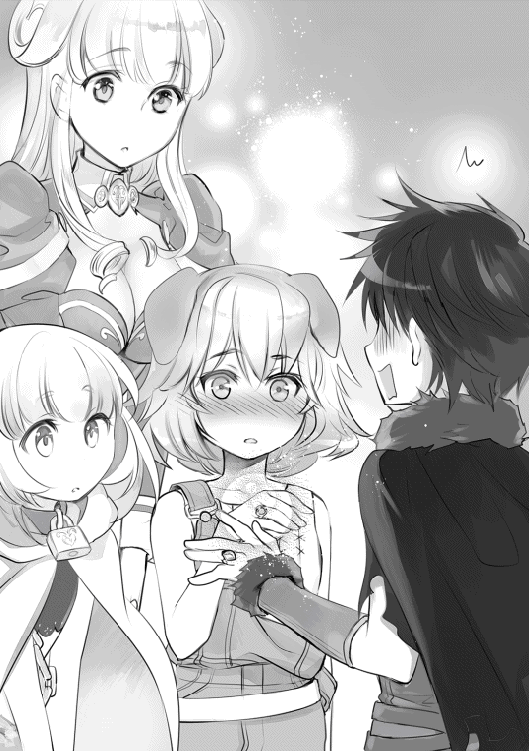
それは奇跡にも近い偶然の邂逅。何よりもルリアは、僕と対等に話をしてくれた。
恩人だから？ いや、違う。友達になりたいって思ってくれたから、涙を流してくれている。魔法を教えたこの数日間、沢山の雑談を重ねてきた。
──前世では一人で過ごすことが多かった僕が。
──自主的に誰かと関わろうとしなかった僕が
──自分の殻に閉じ籠って暮らしてきた僕が。
ルリアと、また再会する約束を交わした。多少の好意を持ってくれていることくらい気づいている。これは子供にありがちな安易な約束だ。それでも、僕は『友人』と一度も約束を交わしたことがなかった。
......そっか。僕はきっと、心の片隅で誰かと触れ合いたいって願っていたんだ。
異世界に転生して、お爺ちゃんに拾われて、メーティスさん、アスラさん、ヘーラーさんに出会って、ラーファさんに魔法を教わって、ノイが傍にいてくれて、ルリアと出会って、初めて気づいた。僕の周りにはこんなにも、支えてくれている人がいるんだって。
みんなとの出会いが、僕を変えさせてくれた。もちろんそんな気持ちはなかったはずだ。それでも僕を変えさせてくれた事実は曲がらない。いつも一人ぼっちだった悪夢の日々。虐められたことを思い出しても、もう震えることはなかった。今、僕には、支えてくれる人たちがいるのだ。
僕を育ててくれたお爺ちゃん。僕を鍛え上げてくれた師匠たち。僕を慕ってくれる使い魔の少女。そして、友達になってくれたルリアという犬耳の子。みんなとの関係が、僕に一歩だけ前へ進ませる力を与えてくれた。それを理解して、僕は次に会う時まで取っておくつもりだった涙が溢れてきた。ありがとう、今こそ感謝しよう。あの犬耳の少女が、僕に気づかせてくれたんだ。ルリアと出会った日々を思い出に、明日からも生きていこう。
「ラティ!! また会おうね〜!!」
さようなら、魔法都市ティル・ナ・ノーグ。
‡
「魔法都市、小さくなっちゃいましたね」
「うん、暫くは戻れないね」
ラーファさんが自室へ向かう中、僕たちは甲板へ出ていた。もう少しだけ魔法都市を見ていたくて、こうしていないと落ち着かなかった。
「ご主人様」
「ん、どうしたの？」
ノイは立ち止まって、僕の目を見ていた。秋風が、僕たちの間を通り抜ける。
「ご主人様は、この先──将来はどうされるおつもりですか？」
これはまた、唐突な質問をされる。
「ノイは、ずっと一人ぼっちでした。永遠にも感じる闇の中で、鎖に縛られて、眠ることもできずに、ノイを呼び出してくれる人を待ってました」
それは、使い魔として僕に呼ばれる直前の出来事。いつもと違う雰囲気のノイに、空気が呑まれる。
「ご主人様に呼ばれて、嬉しくて......ノイはただの魔法書なのに、作られた存在なのに......別れを、知識として知っていたはずなのに。ルリアさんとお別れするのが寂しいんです」
小さい、とても小さい声が耳に入る。
「ノイは、どうしてこんなに悲しいんでしょうか？」
そんなの、最初から決まってるさ。
「心があるからじゃないかな？」
「......魔法書が、ですか？」
怪訝に眉を寄せる。
「ノイは出会ったときから心を持ってたよ。閉鎖的じゃない。常に感情を全快に押し出して僕を困らせてくれたじゃないか」
「それは......」
「逆に聞くよ。ノイの将来の夢はなんだい？」
使い魔として生を受けて、ノイだって色々と戸惑っていたんだ。すると、ノイは一瞬だけ驚いたように目を見開いてから、静かに紡ぐ。
「ノイの将来の望みは一つだけなんです」
彼女は言った。
「これからも、ご主人様のお傍にいてもいいですか？」
震えていた。まさか僕がノイを捨てたりすると、本気で思っているんだろうか？ ああ、僕は口にしてないから思ってるかもしれないな。契約だってあるから、例え離れたいと願っても離れられないっていうのに。よし、僕からも呪いを与えよう。僕たちをこれから縛り付ける、誰にでも出来る簡単な呪いだけど。
「ずっと一緒だよ。これからもずっとね」
約束。ノイへ手を差し出した。突然のアクションに、ぽかんと口を開けていた。でもすぐに決意が固まったらしく、いつもの、柔らかな笑みを浮かべてくれた。
「はい、もちろんです！ ご主人様に嫌われても一生付きまといます！」
「その意気だよ。それじゃ部屋に戻って休もうか」
猫のように擦り付くノイを連れて、近くの売店へと足を急ぐ。
「そうそう、僕の将来の夢についてだけど──」
僕たちはこれからも悩み続けるだろう。沢山の出会いを得て、別れを知り、本気で誰かを恨む日々が待っているかもしれない。それでも僕は、その日が来るまでは夢を追いかけたい。戦い続けたい。
「ラーファさんのような賢者になることだよ。そのためにも頑張らないとね」
「はい！ ノイもお手伝いします！」
僕たちの目的は決まった。まずは沢山の知識を詰め込もう。みんなに恥じないように、もっと努力を重ねてみよう。この先きっと、悪魔と戦う日々が待ち受けている。もっと強くならなければ、大切な人を守ってあげることができない。
「ご主人様、ずっとご一緒ですっ！」
強く手を握りあった。
この先、どうなるのかは分からないけど、これだけは自信を持って言えることがある。
僕はこの世界で、充実した人生を歩んでいた。
僕たちの短い旅は瞬く間に終わりを告げ、三人で村まで戻ってこれた。
茜色に照らされた牧草地に温風が吹く。長閑な風景が続いているだけだが、久しぶりに見た景色に心が打たれる。
あぁ、本当に帰ってきたんだなぁ。
嬉々とした気分で我が家へ帰宅すると、お爺ちゃんが出迎えてくれて、
「メーティスが妊娠したんじゃ」
問題発言をしてくれた。
「......みんな、おかえり。元気そうで何よりだよ」
出迎えてくれたメーティスさんのお腹は膨らんでいて、お爺ちゃんの隣に寄り添っていた。本当に妊娠していた事に驚きつつ、予想外の事態に頭の整理が追いつかない。
「あらあら、今度は妹が増えるんですね」
「わぁ、楽しみですね！」
確かに喜ばしいことだけど、ヘーラーさんとラファエルさんにバレたら、大変な事になるんじゃないか？
「ま、自業自得だな。男なら責任取れ、ゼウスよ」
アスラさんも元気そうで何よりだ。久しぶりに再会した僕たちは、リビングへと移動する事にした。魔法都市で遭遇した出来事や、フィオナ騎士団の件、初めて人を助けたり、友達ができた事を話すと、お爺ちゃんたちは熱心に耳を傾けてくれた。
「......ラーファちゃんの事、ずっと見てたよ」
「あぁ。よく頑張ったと褒めてやる」
「流石に心臓が止まるかと思ったわい」
ラーファさんが命を落とした瞬間、お爺ちゃんたちもここから僕たちの様子を伺っていたらしい。僕が勝手に雷霆を使った事については、特に怒られなかった。僕たちが無事に戻ってきてくれただけで満足だと、涙を流して喜んでくれた。
「じゃが、命を落としかけたのは見過ごせんぞい」
「うぐっ......そ、それはラティさんが助けてくれたからいいじゃないですか」
「そうではない......ラーファは仮にも、ワシの娘じゃろう......？ 娘を心配しない父がおるものか......すまん......」
お爺ちゃんたち《始祖の神々》は、世界の命運を決める戦いで力を使い果たす事で、世界を救って見せた。その時の傷が癒えず、今も力の大部分を失ったままなのである。何もできないことが、歯痒いのだと思う。
「お、お父様......」
ラーファさんも無意識に、お父様って呼ぶようになっていた。二人が仲直りしてくれたのは何よりである。
「ごめんなさい......もっと、強くなりますね......」
「すまんのぅ......ワシら神がしっかりしておれば......」
お爺ちゃんにとって、ラーファさんを戦地へ送るのは『娘を見殺し』にする気持ちなんだと思う。本当は行かせたくないはずだ。抱きしめたいはずだ。でも、神様っていう立場がそれを許してくれない......神様も、人も、何かに縛られないと生きていけないんだなぁ。
「辛気臭い話は止めだ。今日は宴会をするのだろう？ 食材だけは大量に用意しておいたからな」
「......作るの私だけど、了解だよ。おめでたい日だもんね」
‡
こうして、僕の転生してからの十年の物語が幕を閉じようとしていた。この世界に転生してから色々な事があったけど、これにて物語は一度幕を閉じようと思う。その前に、その後について少しだけ語ろうと思う。
『ラティへ。お元気ですか？』
十二歳になった頃、ルリアから手紙が届いた。浮遊大陸に手紙を届ける手段はないのだが、僕とノイとラーファさんは、あれからも悪魔を討伐する為に地上へ降りている。その中でグリフレットさんに再会し、手紙を渡されたのだ。
『魔法都市にも雪が降りました。普段とは違う魔法都市は綺麗なんだけど、寒くて毛が逆立ちます......あっ！ お父さんは新しい領主様と和解して、新生フィオナ騎士団の副団長になったよ。それでね──』
文字の読めなかった彼女が、手紙を書いて見せた。それはルリアがどれだけ努力したのかが、目に見えて分かる事だった。そして、無事に魔法学園へ入学する事ができたという。
『今度会う時は、ウチも悪魔と戦えるくらいに強くなって見せます。それまで、ウチの事を忘れないでよ？』
彼女はもう大丈夫だ。卵から孵った小鳥が飛ぶように、どんな困難にも立ち向かっていける。僕も友達として応援させて貰おうと思う。
‡
ノイとの関係は特に変わらない。朝起きたらご飯を食べて、一緒に魔法の練習をしたり、剣を習ったりしている。唯一困る事といえば、風呂に乱入してきたり、ラーファさんと出かけると頬を膨らませて拗ねたり、ベッドに潜り込んできたりする事だろうか。
「ノイはご主人様の一番になりたいんです。その為なら、頑張りますよ!!」
努力の方向音痴な気もするが、暗い過去を振り返らない姿勢は僕も尊敬したくなる。色々あるとはいえ、ノイと一緒にいる時間は嫌いじゃなかった。
「今日はノイがご飯を作りましたっ！ たくさん食べてくださいね！」
そういってテーブルに並べられたのは、黒焦げになったシチューと炭のような何か。
どう見ても食べ物じゃないが、僕が食べるのを期待しているノイを前に、食べるのを拒否する選択肢は消えていく。
「おかわりもありますからね！」
胃袋が地獄を彷徨う事も多くなった。
‡
二年間の間で、ラーファさんと悪魔の討伐に出向いた回数は三回である。
皇帝ベリトや大伯爵フルフル、大総裁のハーゲンティと戦い、苦戦しつつもどうにか生き延びている。
「不思議ですね。ラティさんと一緒なら、私も生き残れるような気がします」
確かな信頼関係を築いた僕たちは、悪魔たちからも警戒されているようだった。悪魔との戦いが終われば日常に戻る。休日はノイも一緒に、三人で近くの街を歩いたりする事もある。昔とは違う笑った表情は、僕達だけが見れる特権である。
「あ、ラティさんの誕生日プレゼントは私と何がいいですか？」
ラーファさんは積極的で、ノイと出かけると酒を飲んで拗ねていたり、ベッドに潜り込んで抱き枕にしてきたり、良い歳して風呂に乱入してきたりする。ノイとやっている事が同じなのが気になるが、今はまだ仲の良い姉弟って感じだと思う（神々基準）。僕は鈍感ではないと思うが、気持ちの整理が付くまでは答えはお預けである。
‡
「アテナ、そっちに行っちゃ駄目だよ」
「これ、戻ってこんか。ラティが困っておるじゃろう」
「いやです。わたくしは浮気性のお父様よりも、優しいお兄様と遊びたいのです!!」
この子は、メーティスさんとお爺ちゃんの間に生まれた女の子、知恵と戦いを司る女神アテナである。本来は長女として生まれているはずのアテナであるが、この世界で生まれたのはヘラクレスよりも後になる。僕とノイにも懐いてくれて、今が一番可愛い年頃かもしれない。
黒髪を基本にブラウンのメッシュが入った髪は、どことなくメーティスさんに似ている気がした。将来はもっと可愛くなるだろう。しかも、アテナは賢い。見た目は二歳児なのだが、中身は成人した大人ほどの知能を持ち合わせている。
本来の神話だと、天空神ゼウスに取り込まれたメーティスが体内で妊娠し、成人したアテナがゼウスの頭から飛び出してくるというエピソードがある。この世界だと神話から外れているらしく、そういった惨い場面を見なくて済んだのは幸いかもしれない。
「さて、ワシはアテナと一緒にヘーラーに会いに行ってくる」
「......いってらっしゃい。殺されないようにね」
そんなお爺ちゃんは、若き日の過ちの責任を取るべく、毎月一回は林檎の楽園へと向かう。娘さんのヘベさんを溺愛しているらしく、ヘーラーさんも少しだけ丸くなっていたとアテナは言っていた。
......お爺ちゃんの顔の傷は増えているので、本当かどうか怪しい所だが。
‡
「小僧、鍛錬を始めるぞ！」
アスラさんは僕にあらゆる戦術を叩き込む為に、日々鍛錬に付き合ってくれている。この人、ずっと家に居候してるけど、食費とか用意しているんだろうか？ 謎である。
「小僧は天道を開放してみせた。しかし、まだ【真の修羅】を開放していない。次なる戦いに備え、我の知識を吸収するのだな。行くぞっ!!」
アスラさんも僕の事を心配してくれているらしけど、嫌なツンデレである。
期待に応えられるように、僕も頑張らなければっ。
人は沢山の出会いと別れを経験することで、少しずつ成長していく。
こうして二年間を振り返った僕は、ついに【神託】を授かる日が訪れた。
‡
窓辺から暖かな燐光が降り注ぎ、今日も朝が訪れたことを自覚する。
ベットで夢身心地に横になっていると、扉の方からドタドタと足音が聞こえてきた。それは徐々に大きくなり、僕の部屋の前で一瞬だけ停止する。
「ご主人様、おはようです！」
「お兄様、おはようございます」
扉を勢い良く開けたノイは、アテナと一緒に挨拶をして──僕のベットへと思いっきり飛び込んだ。
「ぐえっ」
激しい衝撃に意識が覚醒する。同時にアテナの腕がみぞおちに入る。酸っぱいものがこみ上げてきた。吐きそうだ。
「えへへ、今日も良い天気ですね！」
そう言って布団へ潜り込もうとするノイを手で制して、仕方なく半身を起こした。まだ寝起きで脳に酸素が行き届いておらず、頭痛を感じた。
「二人ともおはよ。いつも元気だね......」
「はい！ だって今日は特別な日ですよ？」
「お父様が呼んでおりました」
ああ、そっか。もうそんな日か。面倒だなぁ。
昨夜、お爺ちゃんとメーティスさんから耳にタコが出来るほど言われたんだっけ。
「今日は【神託】を受ける日ですからっ！」
元気良く、ノイが言った。
【神託】
ヴァナヘイムの大陸で、主に行われている成人の儀式だ。
誤解のないように補足するが、この世界ユグドラシルでも、二十歳を迎えて初めて成人として認められるようになる。だが、ルリアのように幼くして働く子供もいることから、十歳を超えたあたりから、神託という名の洗礼を行う村も珍しくない。
「【神託】って何をするんだろうね」
「えっと、聞いた話ですけど〝運命の女神ラケシス〟様の祝福を受けるらしいですよ」
「祝福かぁ。とりあえず着替えるかな」
「はい！ アテナはノイと一緒にリビングで待ちましょうね」
「もちろんです」
そう言って、ゆっくりとベットから降り立った二人は部屋を出て行く。着替えようと服を脱ぎかかったところで、ある疑問を感じて念のために言葉を吐いた。
「偶然を装って入ってこないようにね」
ガタっと跳ねるような音が聞こえると、忙しない足音が二つ去っていった。
......あれさえなければ、良い子たちなんだけどなぁ。
‡
擦れ違う住民たちに挨拶を交わしつつ、ヴァナヘイム村の中央広場へと出向いた。
広場、というのは誰でも立ち入りが出来る分、重要な役割を持っていたりする。普段は住民たちの憩いの場として利用されるのだが、式典や集会の場所としても度々使われ、お祭りなどの行事や権力者からの挨拶、景観にまで大きく貢献しているのだ。
何が言いたいかというと、僕たちは広場で【神託】を行うということだ。
「ラティよ、来るのが遅かったのぅ」
「ハハ、着替えに戸惑ってたんだろう」
「でも、似合ってますよ」
声の方を振り向けば、立派に着飾ったお爺ちゃんたちが立っていた。今日はいつものヨレた服装とは違い、法衣を着ている。別人のようだ。
「......二人ともおはよう。ノイちゃん、アテナの面倒を見てくれてありがとう」
「いえいえ！ 準備は大変ですもんね」
「お母様」
アテナがドレスを着たメーティスさんに抱きついた。メーティスさんはすぐにアテナを抱き抱えて頬に口付けをする。うん、親子って良いなぁ。
「凄い人数だね」
ほぼ過疎地に近い村とはいえ、僕たちの神託を祝うために住民のほぼ全員が参加しているように見受けられる。
「この村には子供も少ないからのう。珍しいんじゃろう」
確かに。この村で事件があれば僕も野次馬心から出かけてしまうくらいだし。
「さて、洗礼を始めるぞい？」
僕たちは儀式を受ける立場なので、今日はいつもと服装が異なる。僕は動物の毛皮から作られた無個性なローブを着込み、ノイは清楚なホワイトケープを羽織っている。
『しっかりやれよ！』
『二人とも、おめでとうっ。がんばってね』
こうして大勢の人に見守られるなんて、何だか恥ずかしい。
中央には祭壇が用意されており、先導するお爺ちゃんが振り向いた。背後には、この世界の運命を司る女神ラケシス様を模した石像が立っている。わざわざ、倉庫から引っ張りだしたそうだ。これがあるだけで、見慣れたはずの広場も神秘的な雰囲気を漂わせる。
「では、今からワシが洗礼の言葉を上げるから、目を閉じて聞いてなさい。さすればおのずと道が示されるじゃろうて」
「......なんて言ってるけど、実際には女神様の声は聞こえないよ」
メーティスさんが悪戯っぽい笑みで、雰囲気を壊してくれる。お爺ちゃんが困ったような苦い笑みで僕たちを見る。
「それではこれより、洗礼の儀式を始める」
その言葉で、ざわついていた広場が静まり返る。
『わくわくしますね』
僕にしか聞こえない声で、ノイは呟いた。
『まぁ、すぐ終わるよ。とりあえず儀式に集中しよっか』
二人でラケシス様の女神像を見た。同時にお爺ちゃんが言葉紡ぐ。
『モイラ、モイラ──運命の三女神にして次女ラケシスよ。我が孫ラティに汝の祝福を与えん。果て無き幸せの道を示さんことを、新たな道を示さんことを──」
長々しい念仏のような言葉が紡がれていく。儀式中に失礼だが、こういう式典はどうも苦手である。ずっと話を聞いているだけで、他にすることがないからだ。だから、早く終わると良いなぁと思っていた。
『──助けてください』
「えっ」
儚い声が聞こえた。
『英雄ヘラクレスの身に危険が迫っております。どうか、彼を助けてあげてください』
辺りを見渡しても、僕に話しかけている人物は見当たらなかった。
『急ぎ、ヘラクレスと合流してください』
この声は誰だというのか。いや、一人だけ心当たりがある。神託を通して僕たちに語りかけてくる張本人──運命の女神ラケシス様だ。
『わたくしは誰よりも貴方を知っています。ラティ......いえ、本当の貴方は違います。神々に導かれた貴方の本当の名前は──』
驚愕した。それは、僕しか知らないはずの前世の名前を告げて見せた。
『わたくしは母なる存在──世界の意思を伝える託言者です。ユグドラシル様が、そう望んでおります』
この二年間、僕はユグドラシルと連絡を取れたことがなかった。いくら呼びかけても現れてくれず、約束を果たせないままでいた。
『もう猶予がありません。わたくしの言葉を覚えておくのです』
そこから声は霞みだし、ノイズが入ったかのように異質な物になる。かろうじて聞こえた言葉は、一つだけだった。
『神々の歴史の終焉』
それを最後に声は聞こえなくなった。いつの間にかセピア色に染まっていた世界は色を取り戻し、目の前ではお爺ちゃんが儀式を続けていた。みんなには、あの声は聞こえなかったらしい。
白昼夢だったのだろうか？ その割には現実味を帯びていた気がする。重要なことも言っていたはずだ。
「ヘラクレス......神々の歴史の終焉............？」
言葉を零した瞬間だった。
「......世界の崩壊って......ラティ君、どうしたの？」
「ヘラクレス、と言ったかのう？」
メーティスさんも、お爺ちゃんも驚いたように僕を見ていた。
「はい、実は......」
どうやら僕の物語は、まだまだ始まったばかりのようだ。
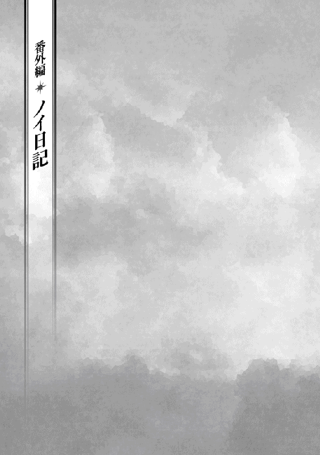
ルビーの月 ノームの週 二日目（雨）
明日からノイは使い魔になることが決まりました。
それを記念して日記をつけたいと思います。
ノイはずっと〝アッシュールバニパルの図書館〟で暮らしてたんですけど、運命の女神様から神託を受けたことがきっかけです。この図書館で生涯を終えるか、それとも外の世界に出たいかと問われたので出ることを選びました。
とても嬉しい提案ですっ！
運命の女神様いわくノイを呼び出す方は将来〝女たらし〟になるそうなので、ご主人様って呼ぶといいそうです。ご主人様と呼ぶことで被害者が減るって遠い眼をしてました。少し不安です。
ルビーの月 ノームの週 三日目（晴れ）
今日、初めて外の世界に出ました。
なんでもノイは〝裸〟だったそうで、普段から服を与えられていなかったので気づきませんでした。
ご主人様はラティっていうお名前をお持ちで、想像以上に優しいお方です。
契約にはノイの望む誓いが必要だそうなので、
『未来永劫にご主人様と寄り添い、死後もお傍を離れないことです！』
と、答えたら凄く困った顔をしてました。
素直に伝えたのですが、変なことを言ってしまったんでしょうか？
でも、すぐにノイの願いを受け入れてくれたので嬉しかったです！
ゼウスお爺ちゃんとヘーラーさんは夫婦なのに、一緒に暮らしていないのが気になりました。どういう関係なのか気になります。それにご主人様と仲が良いラーファさんという女性は要注意です。将来的にご主人様を奪われそうな予感がしました。
あ、林檎パイはとっても美味しかったです！
ルビーの月 シルフの週 一日目（晴れ）
ご主人様が生活するヴァナヘイムの村にやってきました。
どうやらここは神界のようで、ご主人様は人間でありながら神様に育てられてきたそうです。
メーティスさんやアスラさんっていう個性的な神様もいて、ノイの生活はますます楽しくなりそうでした。
ご主人様と一緒にお散歩をして、ノイが召喚されるまでの事情を知りたいとのことだったのでお伝えしたんですけど、なぜか悲しい顔をされて心が痛いです。まさかノイのために泣いてくれるとは思わなくて、同時に嬉しくもあります。複雑です。
でも、その後に山に登って一緒に見た夕日は最高に綺麗でした。
疲れちゃったので帰りはご主人様に背負ってもらって......凄く頼もしかったです。
今日はいつもよりご主人様と距離が縮まった気がします。
ご主人様、大好きです！
帰りが遅くなったらメーティスさんに叱られました。怖いです......。
ルビーの月 シルフの週 一日目・夜（晴れ）
今日は日記というより悩みです。
山から帰った日の夜に事件は起きました。
実はラーファさんは天使族の使命を受けていて、悪魔を滅ぼす命令を受けているそうです。
たしか悪魔って世界を牛耳っていて、遥か昔にソロモン王が封じたってご本で読んだのですが、まだ生き残りがいたようです。
悲しそうに、一人で悪魔退治に向かうと宣言するラーファさんは見ていて辛かったです。
と、やはりご主人様は追いかけました。流石です。アスラさんとこっそり後を追いかけたのですけど、お陰で悩む心がもやもやに変わってしまいました。
なんとご主人様とラーファさんが抱き合っていたんです。
ご主人様が優しいお言葉をかけて、あのラーファさんがわんわん泣いて。
信じられないものを見ているようでした。
それを見てから心がもやもやするんです。
ラーファさんが元気になってくれたのは嬉しいんですけどね！
このことをアスラさんに相談したら、とんでもないことを言いました。
『ふむ。ラティに恋してしまったようだな！」
恋......ただの魔法書のノイも、恋をすることが許されるんでしょうか？
ルビーの月 シルフの週 二日目（曇り）
飛竜船から見た世界はどこまでも霞んでいて、とっても綺麗でした！
またこの景色を眺めてみたいです！
あっ、そうでした！ ご主人様が乗り物に弱いことを知りました。帰りはお小遣いから、酔い止めのポーションを購入してあげようかと思います！
......最近、頭の中がご主人様で一杯になってるような気がします。
ルビーの月 シルフの週 四日目（晴れ）
魔法都市についてからはノイは足を引っ張ってばかりです。
ノイは体力がないからご主人様のお役にも、ラーファさんのお力にもなれません。
ノイを心配してくれるご主人様たちに申し訳ない気持ちが溢れています。
こんなノイを信じてくれるお二人のためにも、もっと努力したいと思います。
ご主人様が夜に何やらゴソゴソしてました。何をしていたんでしょうか？
ルビーの月 シルフの週 四日目（晴れ）
今日はご主人様と二人でデートです！
午前中は夢のようで瞬く間に時間が過ぎてしまったんですけど、大河を眺めている時に変な犬娘さんがご主人様に嘘を吹き込んでいました。
よりにもよって魔物が攻めてくるなんて嘘は酷いです。
ムカムカします。八つ裂きにしようかと思いました。
......お馬鹿なノイでした。犬娘さんはルリアさんってお名前で、過去に騎士団の怠慢でお母様を亡くされていたようです。それで嘘をついて、お母様の復讐をしようと考えていたみたいで......なんともいえない気持ちになりました。
そんなルリアさんにご主人様は正面から向き合い、いじめっ子に連れていかれた彼女に手を差し伸べて......ノイなんかじゃ隣に立つこともできないって気づきました。
悲しいです。胸が苦しいです。ルリアさん、ごめんなさいです......。
ただ、夜にラーファさんが場を和ましてくれたので元のノイたちに戻れました。
ラーファさんって凄い人です。
ルビーの月 シルフの週 六日目（晴れ）
この日がノイたちにとって一番の山場でした。
昨日出会ったルリアさんのお父様が悪魔フェニックスに襲われたそうで、ご主人様が騎士を殴り飛ばして助けに向かうことになりました。もちろんノイも向かいます。ルリアさんのためにも、お父様のためにも見捨てるわけには行きません。ノイにだってできることがあるはずです。
......そう思って悪魔が住む霊脈山に向かったら、ラーファさんたちが倒れていて心臓が止まるかと思いました。どんなに治癒魔法をかけても傷が塞がらないんです。無力を痛感しました。
でも、ご主人様が頑張りました。
悪魔フェニックスと戦って退治して、ルリアさんのお父様を助けて、ルリアさんを救って、ノイに的確な指示を出してくれて、最後はラーファさんの命すら助けて見せました。
......ただです。悪魔フェニックスは私の深層心理を見抜いていました。
ノイを図書館に閉じ込めた〝人間〟を恨んでいるかと言えば、多分恨んでいると思います。
でも、ご主人様たちと出会ってノイは変わりました。
時代は変わります。
ノイはご主人様と、ラーファさんと明日を迎えたいです。
ずっと三人仲良く一緒にいたいです。
だから、ノイも頑張りました。
悪魔が呼び出した魔物を止めるために、ゴーレムさんを呼び出しました。使ったことがない魔法だったけど上手く成功して......これが想いの力なんじゃないかと思います。
『よくやってくれた！』
ご主人様はノイを認めてくれました。ノイは足手まといじゃなかったんですね。諦めないってことが凄く大切だって気づきました。もう、前に進んでいこうと思います。
最後に酷い騎士団さんが襲ってきましたけど、ラーファさんの言葉の前に何も言い返せなかったようです。最後にはルリアさんを笑っていた住民まで叱っていました。ノイにはとてもできないことです。
......やっぱりご主人様とラーファさんってお似合いですよね。
ペリドットの月 ウンディーネの週 五日目（曇り）
ご主人様もラーファさんも眼を覚まさないです。
ペリドットの月 ウンディーネの週 七日目（晴れ）
ラーファさんが目覚めました。
よかったです......無事みたいです......！
まだ苦しいみたいなので安静が必要ですが、命に別状はないみたいです。
これでラーファさんは心配しなくても大丈夫だと思います。
ただ、ご主人様は今日も起きませんでした。
ペリドットの月 サラマンダーの週 二日目（曇り）
前回の日記から二日がたちました。
ご主人様は今日も眠っています。
ずっとベッドで眠ったきりです。
優しく語りかけてくれた顔が、苦しそうに歪んでいます。
ご主人様は、もう笑ってくれないんでしょうか？
ノイは何もしてあげられないんでしょうか？
不安で、苦しくて、涙しか溢れません。
今日もルリアさんやラーファさんに泣きついて、何度もご主人様の手を握っています。
......どなたかお願いします、ご主人様を助けてください。
ノイを外の世界に連れ出してくれたご主人様。
頑張ることの幸せを教えてくれたご主人様。
もう一度、ノイとお話をしてください......。
追記
童話ではお姫様のキスで目が覚めるそうですよ。ｂｙラーファ
追記のお返事
どうしてこの日記を読んでいるんですか!? ちなみにはじめてのキスは冷たかったです。
追記のお返事のお返事
本当にしたんですか......。ｂｙ ラーファ
ペリドットの月 サラマンダーの週 四日目
ご主人様が目を覚ましました！！！！！！！！！！
そしてラーファさんがご主人様を愛してる発言しました！ やっぱり敵です！
追記
ずっと支えてくれてありがとう。
僕にとってノイは大切な人だからね。
これが恋なのかは自分でもよく分からないから、返事はもう少し待ってて欲しい。
............あれ？ えっ？ えっ......？ ええええええええええええ!?
どど、どうしてご主人様がこの日記を読んでいるんでしょうか!?
そ、そう言えば日記を書いたままベッドで寝ていたような......その時ですか!?
恥ずかしい、恥ずかしいです！
もうお顔も満足に見れません！
ペリドットの月 ノームの週 一日目（晴れ）
今日、ルリアさんたちとお別れしました。
ノイたちはヴァナヘイムまで帰らないといけないからです。
......今回の旅を通して、ノイには色々な感情が生まれています。
魔法書として閉じ込められるだけの日々と違って、全てが新鮮でした。
もしかしたら、これっておかしいことなのかなって不安だったんです。
そしたらご主人様は、ノイに心があるって言ってくれました。
いつもご主人様を困らせているのに、ノイと一緒にいてくれるって約束してくれました。
ノイの好きと、ご主人様の好きはまだまだ別だけど、この日記が終わるまでには同じ好きになれたら嬉しいです。
最後に自分の気持ちを確認したいと思います。
わたし、ノイはご主人様が大好きですっ！
あとがき
Ｑ、神話とは何ですか？
──時に歴史の背景だったり、宗教的要素を持っていたり、時代によって人々の理想として描かれているものです。
というわけで、今回ギリシャ神話を舞台にした小説を執筆させて頂きましたわたがし大五郎です。本書をお手にとって頂き誠にありがとうございます。小説家になろう版からお読み頂いている皆様、大変ご無沙汰しております。
そして、殆どの方は初めましてっ。奇跡的に二巻の発売日も五月二十五日に決まりましたので、よろしければこれからもお付き合い頂けたら大変嬉しいです。
神話にお詳しい方ならお気づきかと思いますが、本書は複数の神話が交ぜ合わさった世界観を利用しております。ＷＥＢ版ではそれが原因で物語が破綻しましたが、一から書き直すことでどうにか形にする事ができました。そして大変多くの方のご尽力によって、どうにか出版を果たすことができました。
担当編集者様。何度もご迷惑をおかけいたしました。二巻もご迷惑をおかけすると思いますが、何卒よろしくお願いします。
椋本夏夜様。素敵なイラストをありがとうございました。ゼウスを始めとした登場人物画も、背景も魅力的です。キャラクターデザイン表を分かりやすく送れなくてすみませんでした。
ＴＯブックスの皆様。きっと恐らく私の知らない場所で相当の苦労をされていたと思います。この場をお借りしてお礼を伝えさせて頂きたいと思います。ありがとうございました。
読者の皆様。ＷＥＢ版が殆ど更新できず申し訳ありませんでした。世界観を作り直したりしていると、どうしてもＷＥＢ版とチグハグな内容になってしまい、頭が混乱して続きを書けませんでした。今後は書籍版にあわせて別に更新したいと思います。
小説家になろうでは北欧・ケルト神話編に物語が進んでおりました。ですが、二巻では引き続きギリシャ神話編が継続し、あの有名なヘラクレスにラティが関わる物語を紡ぎたいと思います。ヘラクレスといえば十二の偉業が有名ですが、悪魔や他の神話との融合でどのように物語が変化していくのかを楽しんで頂けたら幸いです。やはり物語はハッピーエンドで締めたいですねっ。
それでは、またお会いできる日を願っております。
わたがし大五郎
著者プロフィール
わたがし 大五郎
Watagashi Daigorou
姉が持っていた神話がきっかけで、本作でデビューを果たした某クレーム担当社員。ストレス発散用に執筆していたら、まさか出版されるなんて......時代って分からないものです。
転生 神々に育てられた少年の物語
2016年４月１日発行 ver.1.0
著 者 わたがし大五郎
発行所 TOブックス
〒150-0045 東京都渋谷区神泉町18-８
松濤ハイツ２Ｆ
03-6452-5678（編集）
0120-933-772（営業フリーダイヤル）
Ⓒ2016 Daigorou Watagashi
※無断で複製・複写・データ配信などをすることは、かたくお断りいたします。
本電子書籍は下記にもとづいて制作しました
転生 神々に育てられた少年の物語
発行日 2016年３月10日 第２刷発行
本作品の全部または一部を無断で複製、転載、配信、送信したり、ホームぺージ上に転載することを禁止します。また、本作品の内容を無断で改変、改ざん等を行うことも禁止します。
本作品購入時にご承諾いただいた規約により、有償・無償にかかわらず本作品を第三者に譲渡することはできません。
本作品を示すサムネイルなどのイメージ画像は、再ダウンロード時に予告なく変更される場合があります。
本作品は縦書きでレイアウトされています。
また、ご覧になるリーディングシステムにより、表示の差が認められることがあります。